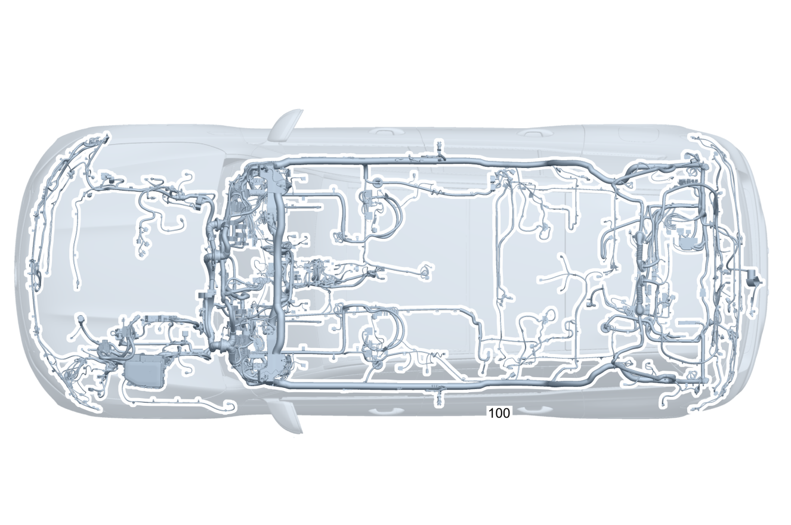

| № | Артикул | Название | Кол. | Примечание | Ограничение |
|---|---|---|---|---|---|
| 100 | A 177 540 88 24 | Электрический жгут (ELECTRICAL WIRING HARNESS) | 1 | Основной жгут электропроводки системы рамы и пола [-] В жгуте проводов предусмотрена возможность подключения соответствующих дополнительных опций согласно производственному номеру а/м [-] При заказе указать идент. номер | 167 |
| 100 | A 177 540 89 24 | Электрический жгут | 1 | Основной жгут электропроводки системы рамы и пола [-] В жгуте проводов предусмотрена возможность подключения соответствующих дополнительных опций согласно производственному номеру а/м [-] При заказе указать идент. номер | 700 |
| 120 | Q 000000000002 | - Возможен заказ только отдельных компонентов жгута проводов | 1 | Базовый объем подушки безопасности Рулевое управление: Влево | |
| 120 | Q 000000000002 | - Возможен заказ только отдельных компонентов жгута проводов | 1 | Базовый объем подушки безопасности Рулевое управление: Вправо | |
| 120 | Q 000000000002 | - Возможен заказ только отдельных компонентов жгута проводов | 1 | Базовый объем подушки безопасности Рулевое управление: Влево | 804 |
| 120 | Q 000000000002 | - Возможен заказ только отдельных компонентов жгута проводов | 1 | Базовый объем подушки безопасности Рулевое управление: Влево | (804/804+054/805) |
| 120 | Q 000000000002 | - Возможен заказ только отдельных компонентов жгута проводов | 1 | Базовый объем подушки безопасности Рулевое управление: Влево | |
| 120 | Q 000000000002 | - Возможен заказ только отдельных компонентов жгута проводов | 1 | Базовый объем подушки безопасности Рулевое управление: Вправо | (804/804+054/805) |
| 120 | Q 000000000002 | - Возможен заказ только отдельных компонентов жгута проводов | 1 | Базовый объем подушки безопасности Рулевое управление: Вправо | |
| 120 | Q 000000000002 | - Возможен заказ только отдельных компонентов жгута проводов | 1 | Подушка безопасности водителя Рулевое управление: Влево | |
| 120 | Q 000000000002 | - Возможен заказ только отдельных компонентов жгута проводов | 1 | Подушка безопасности водителя Рулевое управление: Влево | (460/494)/(835+(801+051/802)) |
| 120 | Q 000000000002 | - Возможен заказ только отдельных компонентов жгута проводов | 1 | Подушка безопасности водителя Рулевое управление: Влево | 460/494/835 |
| 120 | Q 000000000002 | - Возможен заказ только отдельных компонентов жгута проводов | 1 | Подушка безопасности водителя Рулевое управление: Вправо | |
| 120 | Q 000000000002 | - Возможен заказ только отдельных компонентов жгута проводов | 1 | Пиропатрон подушки безопасности Рулевое управление: Влево | (460/494/835)+(804/804+054/805) |
| 120 | Q 000000000002 | - Возможен заказ только отдельных компонентов жгута проводов | 1 | Пиропатрон подушки безопасности Рулевое управление: Влево | (460/494/835) |
| 120 | Q 000000000002 | - Возможен заказ только отдельных компонентов жгута проводов | 1 | Пиропатрон подушки безопасности переднего пассажира Рулевое управление: Влево | (460/494/835)+(804/804+054/805) |
| 120 | Q 000000000002 | - Возможен заказ только отдельных компонентов жгута проводов | 1 | Пиропатрон подушки безопасности переднего пассажира Рулевое управление: Влево | (460/494/835) |
| 120 | Q 000000000002 | - Возможен заказ только отдельных компонентов жгута проводов | 1 | Пиропатрон подушки безопасности переднего пассажира Рулевое управление: Влево | 700+(805+055/806/807) |
| 120 | Q 000000000002 | - Возможен заказ только отдельных компонентов жгута проводов | 1 | Пиропатрон подушки безопасности переднего пассажира Рулевое управление: Влево | 700 |
| 120 | Q 000000000002 | - Возможен заказ только отдельных компонентов жгута проводов | 1 | Коленная подушка безопасности Рулевое управление: Влево | 294+804 |
| 120 | Q 000000000002 | - Возможен заказ только отдельных компонентов жгута проводов | 1 | Коленная подушка безопасности Рулевое управление: Влево | 294+(804/804+054/805) |
| 120 | Q 000000000002 | - Возможен заказ только отдельных компонентов жгута проводов | 1 | Коленная подушка безопасности Рулевое управление: Влево | 294 |
| 120 | Q 000000000002 | - Возможен заказ только отдельных компонентов жгута проводов | 1 | Коленная подушка безопасности Рулевое управление: Вправо | 294+(804/804+054/805) |
| 120 | Q 000000000002 | - Возможен заказ только отдельных компонентов жгута проводов | 1 | Коленная подушка безопасности Рулевое управление: Вправо | 294 |
| 120 | Q 000000000002 | - Возможен заказ только отдельных компонентов жгута проводов | 1 | Оконная подушка безопасности Рулевое управление: Влево | |
| 120 | Q 000000000002 | - Возможен заказ только отдельных компонентов жгута проводов | 1 | Оконная подушка безопасности Рулевое управление: Вправо | |
| 120 | Q 000000000002 | - Возможен заказ только отдельных компонентов жгута проводов | 1 | Боковая подушка безопасности Рулевое управление: Влево | 293 |
| 120 | Q 000000000002 | - Возможен заказ только отдельных компонентов жгута проводов | 1 | Боковая подушка безопасности Рулевое управление: Вправо | 293 |
| 120 | Q 000000000002 | - Возможен заказ только отдельных компонентов жгута проводов | 1 | Боковая подушка безопасности Рулевое управление: Влево | 293+567 |
| 120 | Q 000000000002 | - Возможен заказ только отдельных компонентов жгута проводов | 1 | Боковая подушка безопасности Рулевое управление: Вправо | 293+567 |
| 120 | Q 000000000002 | - Возможен заказ только отдельных компонентов жгута проводов | 1 | Боковая подушка безопасности Рулевое управление: Влево | 293+804 |
| 120 | Q 000000000002 | - Возможен заказ только отдельных компонентов жгута проводов | 1 | Боковая подушка безопасности Рулевое управление: Влево | 293+(804/804+054/805) |
| 120 | Q 000000000002 | - Возможен заказ только отдельных компонентов жгута проводов | 1 | Боковая подушка безопасности Рулевое управление: Влево | 293 |
| 120 | Q 000000000002 | - Возможен заказ только отдельных компонентов жгута проводов | 1 | Боковая подушка безопасности Рулевое управление: Вправо | 293+(804/804+054/805) |
| 120 | Q 000000000002 | - Возможен заказ только отдельных компонентов жгута проводов | 1 | Боковая подушка безопасности Рулевое управление: Вправо | 293 |
| 120 | Q 000000000002 | - Возможен заказ только отдельных компонентов жгута проводов | 1 | Индикация статуса заднего ремня безопасности Рулевое управление: Влево | U01+804 |
| 120 | Q 000000000002 | - Возможен заказ только отдельных компонентов жгута проводов | 1 | Индикация статуса заднего ремня безопасности Рулевое управление: Влево | U01+(804/804+054/805) |
| 120 | Q 000000000002 | - Возможен заказ только отдельных компонентов жгута проводов | 1 | Индикация статуса заднего ремня безопасности Рулевое управление: Влево | U01 |
| 120 | Q 000000000002 | - Возможен заказ только отдельных компонентов жгута проводов | 1 | Индикация статуса заднего ремня безопасности Рулевое управление: Вправо | U01+(804/804+054/805) |
| 120 | Q 000000000002 | - Возможен заказ только отдельных компонентов жгута проводов | 1 | Индикация статуса заднего ремня безопасности Рулевое управление: Вправо | U01 |
| 120 | Q 000000000002 | - Возможен заказ только отдельных компонентов жгута проводов | 1 | Замок ремня безопасности, третий ряд сидений Рулевое управление: Влево | U01+847 |
| 120 | Q 000000000002 | - Возможен заказ только отдельных компонентов жгута проводов | 1 | Замок ремня безопасности, третий ряд сидений Рулевое управление: Вправо | U01+847 |
| 120 | Q 000000000002 | - Возможен заказ только отдельных компонентов жгута проводов | 1 | Замок ремня безопасности, третий ряд сидений Рулевое управление: Влево | U01+847+(084/B01) |
| 120 | Q 000000000002 | - Возможен заказ только отдельных компонентов жгута проводов | 1 | Замок ремня безопасности, третий ряд сидений Рулевое управление: Влево | U01+847+(084/802/803/B01) |
| 120 | Q 000000000002 | - Возможен заказ только отдельных компонентов жгута проводов | 1 | Замок ремня безопасности, третий ряд сидений Рулевое управление: Влево | U01+847/U01+847+B01 |
| 120 | Q 000000000002 | - Возможен заказ только отдельных компонентов жгута проводов | 1 | Замок ремня безопасности, третий ряд сидений Рулевое управление: Вправо | U01+847+(084/B01) |
| 120 | Q 000000000002 | - Возможен заказ только отдельных компонентов жгута проводов | 1 | Замок ремня безопасности, третий ряд сидений Рулевое управление: Вправо | U01+847+(084/802/803/B01) |
| 120 | Q 000000000002 | - Возможен заказ только отдельных компонентов жгута проводов | 1 | Замок ремня безопасности, третий ряд сидений Рулевое управление: Вправо | U01+847/U01+847+B01 |
| 120 | Q 000000000002 | - Возможен заказ только отдельных компонентов жгута проводов | 1 | Индикация статуса заднего ремня безопасности Рулевое управление: Влево | U01+847+804 |
| 120 | Q 000000000002 | - Возможен заказ только отдельных компонентов жгута проводов | 1 | Индикация статуса заднего ремня безопасности Рулевое управление: Влево | U01+847+(804/804+054/805) |
| 120 | Q 000000000002 | - Возможен заказ только отдельных компонентов жгута проводов | 1 | Индикация статуса заднего ремня безопасности Рулевое управление: Влево | U01+847 |
| 120 | Q 000000000002 | - Возможен заказ только отдельных компонентов жгута проводов | 1 | Индикация статуса заднего ремня безопасности Рулевое управление: Вправо | U01+847+(804/804+054/805) |
| 120 | Q 000000000002 | - Возможен заказ только отдельных компонентов жгута проводов | 1 | Индикация статуса заднего ремня безопасности Рулевое управление: Вправо | U01+847 |
| 120 | Q 000000000002 | - Возможен заказ только отдельных компонентов жгута проводов | 1 | Аварийный натяжитель переднего ремня безопасности (левый и правый) Рулевое управление: Влево | |
| 120 | Q 000000000002 | - Возможен заказ только отдельных компонентов жгута проводов | 1 | Аварийный натяжитель переднего ремня безопасности (левый и правый) Рулевое управление: Вправо | |
| 120 | Q 000000000002 | - Возможен заказ только отдельных компонентов жгута проводов | 1 | Аварийный натяжитель переднего ремня безопасности (левый и правый) Рулевое управление: Влево | 299 |
| 120 | Q 000000000002 | - Возможен заказ только отдельных компонентов жгута проводов | 1 | Аварийный натяжитель переднего ремня безопасности (левый и правый) Рулевое управление: Вправо | 299 |
| 120 | Q 000000000002 | - Возможен заказ только отдельных компонентов жгута проводов | 1 | Аварийный натяжитель переднего ремня безопасности (левый и правый) Рулевое управление: Влево | 460/494 |
| 120 | Q 000000000002 | - Возможен заказ только отдельных компонентов жгута проводов | 1 | Аварийный натяжитель переднего ремня безопасности (левый и правый) Рулевое управление: Влево | 299+(460/494) |
| 120 | Q 000000000002 | - Возможен заказ только отдельных компонентов жгута проводов | 1 | Аварийный натяжитель переднего ремня безопасности (левый и правый) Рулевое управление: Вправо | 498+801 |
| 120 | Q 000000000002 | - Возможен заказ только отдельных компонентов жгута проводов | 1 | Аварийный натяжитель переднего ремня безопасности (левый и правый) Рулевое управление: Вправо | 498 |
| 120 | Q 000000000002 | - Возможен заказ только отдельных компонентов жгута проводов | 1 | Аварийный натяжитель переднего ремня безопасности (левый и правый) Рулевое управление: Вправо | (299+498)+801 |
| 120 | Q 000000000002 | - Возможен заказ только отдельных компонентов жгута проводов | 1 | Аварийный натяжитель переднего ремня безопасности (левый и правый) Рулевое управление: Вправо | (299+498) |
| 120 | Q 000000000002 | - Возможен заказ только отдельных компонентов жгута проводов | 1 | Аварийный натяжитель переднего ремня безопасности (левый и правый) Рулевое управление: Влево | 804 |
| 120 | Q 000000000002 | - Возможен заказ только отдельных компонентов жгута проводов | 1 | Аварийный натяжитель переднего ремня безопасности (левый и правый) Рулевое управление: Влево | (804/804+054/805) |
| 120 | Q 000000000002 | - Возможен заказ только отдельных компонентов жгута проводов | 1 | Аварийный натяжитель переднего ремня безопасности (левый и правый) Рулевое управление: Влево | |
| 120 | Q 000000000002 | - Возможен заказ только отдельных компонентов жгута проводов | 1 | Аварийный натяжитель переднего ремня безопасности (левый и правый) Рулевое управление: Вправо | (804/804+054/805) |
| 120 | Q 000000000002 | - Возможен заказ только отдельных компонентов жгута проводов | 1 | Аварийный натяжитель переднего ремня безопасности (левый и правый) Рулевое управление: Вправо | |
| 120 | Q 000000000002 | - Возможен заказ только отдельных компонентов жгута проводов | 1 | Аварийный натяжитель переднего ремня безопасности (левый и правый) Рулевое управление: Влево | 299+804 |
| 120 | Q 000000000002 | - Возможен заказ только отдельных компонентов жгута проводов | 1 | Аварийный натяжитель переднего ремня безопасности (левый и правый) Рулевое управление: Влево | 299+(804/804+054/805) |
| 120 | Q 000000000002 | - Возможен заказ только отдельных компонентов жгута проводов | 1 | Аварийный натяжитель переднего ремня безопасности (левый и правый) Рулевое управление: Влево | 299 |
| 120 | Q 000000000002 | - Возможен заказ только отдельных компонентов жгута проводов | 1 | Аварийный натяжитель переднего ремня безопасности (левый и правый) Рулевое управление: Вправо | 299+(804/804+054/805) |
| 120 | Q 000000000002 | - Возможен заказ только отдельных компонентов жгута проводов | 1 | Аварийный натяжитель переднего ремня безопасности (левый и правый) Рулевое управление: Вправо | 299 |
| 120 | Q 000000000002 | - Возможен заказ только отдельных компонентов жгута проводов | 1 | Аварийный натяжитель переднего ремня безопасности (левый и правый) Рулевое управление: Влево | (460/494)+(804/804+054/805) |
| 120 | Q 000000000002 | - Возможен заказ только отдельных компонентов жгута проводов | 1 | Аварийный натяжитель переднего ремня безопасности (левый и правый) Рулевое управление: Влево | (460/494) |
| 120 | Q 000000000002 | - Возможен заказ только отдельных компонентов жгута проводов | 1 | Аварийный натяжитель переднего ремня безопасности (левый и правый) Рулевое управление: Влево | 700+(805+055/806/807) |
| 120 | Q 000000000002 | - Возможен заказ только отдельных компонентов жгута проводов | 1 | Аварийный натяжитель переднего ремня безопасности (левый и правый) Рулевое управление: Влево | 700 |
| 120 | Q 000000000002 | - Возможен заказ только отдельных компонентов жгута проводов | 1 | Аварийный натяжитель переднего ремня безопасности (левый и правый) Рулевое управление: Вправо | 498+(804/804+054/805) |
| 120 | Q 000000000002 | - Возможен заказ только отдельных компонентов жгута проводов | 1 | Аварийный натяжитель переднего ремня безопасности (левый и правый) Рулевое управление: Вправо | 498 |
| 120 | Q 000000000002 | - Возможен заказ только отдельных компонентов жгута проводов | 1 | Аварийный натяжитель переднего ремня безопасности (левый и правый) Рулевое управление: Влево | 299+(460/494)+(804/804+054/805) |
| 120 | Q 000000000002 | - Возможен заказ только отдельных компонентов жгута проводов | 1 | Аварийный натяжитель переднего ремня безопасности (левый и правый) Рулевое управление: Влево | 299+(460/494) |
| 120 | Q 000000000002 | - Возможен заказ только отдельных компонентов жгута проводов | 1 | Аварийный натяжитель переднего ремня безопасности (левый и правый) Рулевое управление: Влево | 700+299+(805+055/806/807) |
| 120 | Q 000000000002 | - Возможен заказ только отдельных компонентов жгута проводов | 1 | Аварийный натяжитель переднего ремня безопасности (левый и правый) Рулевое управление: Влево | 700+299 |
| 120 | Q 000000000002 | - Возможен заказ только отдельных компонентов жгута проводов | 1 | Аварийный натяжитель переднего ремня безопасности (левый и правый) Рулевое управление: Вправо | 299+498+(804/804+054/805) |
| 120 | Q 000000000002 | - Возможен заказ только отдельных компонентов жгута проводов | 1 | Аварийный натяжитель переднего ремня безопасности (левый и правый) Рулевое управление: Вправо | 299+498 |
| 120 | Q 000000000002 | - Возможен заказ только отдельных компонентов жгута проводов | 1 | Натяжитель ремня безопасности Рулевое управление: Вправо | 498+801 |
| 120 | Q 000000000002 | - Возможен заказ только отдельных компонентов жгута проводов | 1 | Натяжитель ремня безопасности Рулевое управление: Вправо | 498 |
| 120 | Q 000000000002 | - Возможен заказ только отдельных компонентов жгута проводов | 1 | Натяжитель ремня безопасности Рулевое управление: Вправо | 498+(804/804+054/805) |
| 120 | Q 000000000002 | - Возможен заказ только отдельных компонентов жгута проводов | 1 | Натяжитель ремня безопасности Рулевое управление: Вправо | 498 |
| 120 | Q 000000000002 | - Возможен заказ только отдельных компонентов жгута проводов | 1 | Защита пешеходов Рулевое управление: Влево | U60 |
| 120 | Q 000000000002 | - Возможен заказ только отдельных компонентов жгута проводов | 1 | Защита пешеходов Рулевое управление: Вправо | U60 |
| 120 | Q 000000000002 | - Возможен заказ только отдельных компонентов жгута проводов | 1 | Защита пешеходов Рулевое управление: Влево | U60+804 |
| 120 | Q 000000000002 | - Возможен заказ только отдельных компонентов жгута проводов | 1 | Защита пешеходов Рулевое управление: Влево | U60+(804/804+054/805) |
| 120 | Q 000000000002 | - Возможен заказ только отдельных компонентов жгута проводов | 1 | Защита пешеходов Рулевое управление: Влево | U60 |
| 120 | Q 000000000002 | - Возможен заказ только отдельных компонентов жгута проводов | 1 | Защита пешеходов Рулевое управление: Вправо | U60+(804/804+054/805) |
| 120 | Q 000000000002 | - Возможен заказ только отдельных компонентов жгута проводов | 1 | Защита пешеходов Рулевое управление: Вправо | U60 |
| 120 | Q 000000000002 | - Возможен заказ только отдельных компонентов жгута проводов | 1 | Деактивация хладагента Рулевое управление: Влево | 2U8+(M260/M282) |
| 120 | Q 000000000002 | - Возможен заказ только отдельных компонентов жгута проводов | 1 | Деактивация хладагента Рулевое управление: Вправо | 2U8+(M260/M282) |
| 120 | Q 000000000002 | - Возможен заказ только отдельных компонентов жгута проводов | 1 | Деактивация хладагента Рулевое управление: Влево | (M260/M282)+2U8+804 |
| 120 | Q 000000000002 | - Возможен заказ только отдельных компонентов жгута проводов | 1 | Деактивация хладагента Рулевое управление: Влево | (M260/M282)+2U8+(804/804+054/805) |
| 120 | Q 000000000002 | - Возможен заказ только отдельных компонентов жгута проводов | 1 | Деактивация хладагента Рулевое управление: Влево | (M260/M282)+2U8 |
| 120 | Q 000000000002 | - Возможен заказ только отдельных компонентов жгута проводов | 1 | Деактивация хладагента Рулевое управление: Вправо | (M260/M282)+2U8+(804/804+054/805) |
| 120 | Q 000000000002 | - Возможен заказ только отдельных компонентов жгута проводов | 1 | Деактивация хладагента Рулевое управление: Вправо | (M260/M282)+2U8 |
| 120 | Q 000000000002 | - Возможен заказ только отдельных компонентов жгута проводов | 1 | Система распознавания занятости сиденья Рулевое управление: Влево | |
| 120 | Q 000000000002 | - Возможен заказ только отдельных компонентов жгута проводов | 1 | Система распознавания занятости сиденья Рулевое управление: Вправо | |
| 120 | Q 000000000002 | - Возможен заказ только отдельных компонентов жгута проводов | 1 | Система распознавания занятости сиденья Рулевое управление: Влево | U10 |
| 120 | Q 000000000002 | - Возможен заказ только отдельных компонентов жгута проводов | 1 | Система распознавания занятости сиденья Рулевое управление: Вправо | U10 |
| 120 | Q 000000000002 | - Возможен заказ только отдельных компонентов жгута проводов | 1 | Катушка ремня безопасности Рулевое управление: Влево | 804 |
| 120 | Q 000000000002 | - Возможен заказ только отдельных компонентов жгута проводов | 1 | Катушка ремня безопасности Рулевое управление: Влево | (804/804+054/805) |
| 120 | Q 000000000002 | - Возможен заказ только отдельных компонентов жгута проводов | 1 | Катушка ремня безопасности Рулевое управление: Влево | |
| 120 | Q 000000000002 | - Возможен заказ только отдельных компонентов жгута проводов | 1 | Катушка ремня безопасности Рулевое управление: Вправо | (804/804+054/805) |
| 120 | Q 000000000002 | - Возможен заказ только отдельных компонентов жгута проводов | 1 | Катушка ремня безопасности Рулевое управление: Вправо | |
| 120 | Q 000000000002 | - Возможен заказ только отдельных компонентов жгута проводов | 1 | Катушка ремня безопасности Рулевое управление: Влево | U10+804 |
| 120 | Q 000000000002 | - Возможен заказ только отдельных компонентов жгута проводов | 1 | Катушка ремня безопасности Рулевое управление: Влево | U10+(804/804+054/805) |
| 120 | Q 000000000002 | - Возможен заказ только отдельных компонентов жгута проводов | 1 | Катушка ремня безопасности Рулевое управление: Влево | U10 |
| 120 | Q 000000000002 | - Возможен заказ только отдельных компонентов жгута проводов | 1 | Катушка ремня безопасности Рулевое управление: Вправо | U10+(804/804+054/805) |
| 120 | Q 000000000002 | - Возможен заказ только отдельных компонентов жгута проводов | 1 | Катушка ремня безопасности Рулевое управление: Вправо | U10 |
| 120 | Q 000000000002 | - Возможен заказ только отдельных компонентов жгута проводов | 1 | Система контроля давления в шинах (RDK) Рулевое управление: Влево | 475 |
| 120 | Q 000000000002 | - Возможен заказ только отдельных компонентов жгута проводов | 1 | Система контроля давления в шинах (RDK) Рулевое управление: Вправо | 475 |
| 120 | Q 000000000002 | - Возможен заказ только отдельных компонентов жгута проводов | 1 | Система контроля давления в шинах (RDK) Рулевое управление: Влево | 475+804 |
| 120 | Q 000000000002 | - Возможен заказ только отдельных компонентов жгута проводов | 1 | Система контроля давления в шинах (RDK) Рулевое управление: Влево | 475+(804/804+054/805) |
| 120 | Q 000000000002 | - Возможен заказ только отдельных компонентов жгута проводов | 1 | Система контроля давления в шинах (RDK) Рулевое управление: Влево | 475 |
| 120 | Q 000000000002 | - Возможен заказ только отдельных компонентов жгута проводов | 1 | Система контроля давления в шинах (RDK) Рулевое управление: Вправо | 475+(804/804+054/805) |
| 120 | Q 000000000002 | - Возможен заказ только отдельных компонентов жгута проводов | 1 | Система контроля давления в шинах (RDK) Рулевое управление: Вправо | 475 |
| 120 | Q 000000000002 | - Возможен заказ только отдельных компонентов жгута проводов | 1 | KEYLESS Entry Рулевое управление: Влево | 889+896 |
| 120 | Q 000000000002 | - Возможен заказ только отдельных компонентов жгута проводов | 1 | KEYLESS Entry Рулевое управление: Влево | 889+896 |
| 120 | Q 000000000002 | - Возможен заказ только отдельных компонентов жгута проводов | 1 | KEYLESS Entry Рулевое управление: Вправо | 889+896 |
| 120 | Q 000000000002 | - Возможен заказ только отдельных компонентов жгута проводов | 1 | KEYLESS Entry Рулевое управление: Вправо | 889+896 |
| 120 | Q 000000000002 | - Возможен заказ только отдельных компонентов жгута проводов | 1 | KEYLESS Entry Рулевое управление: Влево | 804 |
| 120 | Q 000000000002 | - Возможен заказ только отдельных компонентов жгута проводов | 1 | KEYLESS Entry Рулевое управление: Влево | (804/804+054/805) |
| 120 | Q 000000000002 | - Возможен заказ только отдельных компонентов жгута проводов | 1 | KEYLESS Entry Рулевое управление: Влево | |
| 120 | Q 000000000002 | - Возможен заказ только отдельных компонентов жгута проводов | 1 | KEYLESS Entry Рулевое управление: Вправо | (804/804+054/805) |
| 120 | Q 000000000002 | - Возможен заказ только отдельных компонентов жгута проводов | 1 | KEYLESS Entry Рулевое управление: Вправо | |
| 120 | Q 000000000002 | - Возможен заказ только отдельных компонентов жгута проводов | 1 | KEYLESS Entry Рулевое управление: Влево | 889+804 |
| 120 | Q 000000000002 | - Возможен заказ только отдельных компонентов жгута проводов | 1 | KEYLESS Entry Рулевое управление: Влево | 889+(804/804+054/805) |
| 120 | Q 000000000002 | - Возможен заказ только отдельных компонентов жгута проводов | 1 | KEYLESS Entry Рулевое управление: Влево | 889 |
| 120 | Q 000000000002 | - Возможен заказ только отдельных компонентов жгута проводов | 1 | KEYLESS Entry Рулевое управление: Вправо | 889+(804/804+054/805) |
| 120 | Q 000000000002 | - Возможен заказ только отдельных компонентов жгута проводов | 1 | KEYLESS Entry Рулевое управление: Вправо | 889 |
| 120 | Q 000000000002 | - Возможен заказ только отдельных компонентов жгута проводов | 1 | Блокировка рулевого вала Рулевое управление: Влево | |
| 120 | Q 000000000002 | - Возможен заказ только отдельных компонентов жгута проводов | 1 | Блокировка рулевого вала Рулевое управление: Вправо | |
| 120 | Q 000000000002 | - Возможен заказ только отдельных компонентов жгута проводов | 1 | Блокировка рулевого вала Рулевое управление: Влево | 804 |
| 120 | Q 000000000002 | - Возможен заказ только отдельных компонентов жгута проводов | 1 | Блокировка рулевого вала Рулевое управление: Влево | (804/804+054/805) |
| 120 | Q 000000000002 | - Возможен заказ только отдельных компонентов жгута проводов | 1 | Блокировка рулевого вала Рулевое управление: Влево | |
| 120 | Q 000000000002 | - Возможен заказ только отдельных компонентов жгута проводов | 1 | Блокировка рулевого вала Рулевое управление: Вправо | (804/804+054/805) |
| 120 | Q 000000000002 | - Возможен заказ только отдельных компонентов жгута проводов | 1 | Блокировка рулевого вала Рулевое управление: Вправо | |
| 120 | Q 000000000002 | - Возможен заказ только отдельных компонентов жгута проводов | 1 | Сигнал блокировки рулевого управления Рулевое управление: Влево | |
| 120 | Q 000000000002 | - Возможен заказ только отдельных компонентов жгута проводов | 1 | Сигнал блокировки рулевого управления Рулевое управление: Вправо | |
| 120 | Q 000000000002 | - Возможен заказ только отдельных компонентов жгута проводов | 1 | Сигнал блокировки рулевого управления Рулевое управление: Влево | 889 |
| 120 | Q 000000000002 | - Возможен заказ только отдельных компонентов жгута проводов | 1 | Сигнал блокировки рулевого управления Рулевое управление: Вправо | 889 |
| 120 | Q 000000000002 | - Возможен заказ только отдельных компонентов жгута проводов | 1 | Сигнал блокировки рулевого управления Рулевое управление: Влево | 889+896/896 |
| 120 | Q 000000000002 | - Возможен заказ только отдельных компонентов жгута проводов | 1 | Сигнал блокировки рулевого управления Рулевое управление: Влево | 889+896/896 |
| 120 | Q 000000000002 | - Возможен заказ только отдельных компонентов жгута проводов | 1 | Сигнал блокировки рулевого управления Рулевое управление: Вправо | 889+896/896 |
| 120 | Q 000000000002 | - Возможен заказ только отдельных компонентов жгута проводов | 1 | Сигнал блокировки рулевого управления Рулевое управление: Вправо | 889+896/896 |
| 120 | Q 000000000002 | - Возможен заказ только отдельных компонентов жгута проводов | 1 | Сигнал блокировки рулевого управления Рулевое управление: Влево | ((802+052)/803) |
| 120 | Q 000000000002 | - Возможен заказ только отдельных компонентов жгута проводов | 1 | Сигнал блокировки рулевого управления Рулевое управление: Влево | |
| 120 | Q 000000000002 | - Возможен заказ только отдельных компонентов жгута проводов | 1 | Сигнал блокировки рулевого управления Рулевое управление: Вправо | ((802+052)/803) |
| 120 | Q 000000000002 | - Возможен заказ только отдельных компонентов жгута проводов | 1 | Сигнал блокировки рулевого управления Рулевое управление: Вправо | |
| 120 | Q 000000000002 | - Возможен заказ только отдельных компонентов жгута проводов | 1 | Аварийный натяжитель ремня безопасности 2\-го ряда сидений Рулевое управление: Вправо | |
| 120 | Q 000000000002 | - Возможен заказ только отдельных компонентов жгута проводов | 1 | Аварийный натяжитель ремня безопасности 2\-го ряда сидений Рулевое управление: Влево | |
| 120 | Q 000000000002 | - Возможен заказ только отдельных компонентов жгута проводов | 1 | Аварийный натяжитель ремня безопасности 2\-го ряда сидений Рулевое управление: Влево | 460/494 |
| 120 | Q 000000000002 | - Возможен заказ только отдельных компонентов жгута проводов | 1 | Аварийный натяжитель ремня безопасности 2\-го ряда сидений Рулевое управление: Влево | 804 |
| 120 | Q 000000000002 | - Возможен заказ только отдельных компонентов жгута проводов | 1 | Аварийный натяжитель ремня безопасности 2\-го ряда сидений Рулевое управление: Влево | (804/804+054/805) |
| 120 | Q 000000000002 | - Возможен заказ только отдельных компонентов жгута проводов | 1 | Аварийный натяжитель ремня безопасности 2\-го ряда сидений Рулевое управление: Влево | |
| 120 | Q 000000000002 | - Возможен заказ только отдельных компонентов жгута проводов | 1 | Аварийный натяжитель ремня безопасности 2\-го ряда сидений Рулевое управление: Вправо | (804/804+054/805) |
| 120 | Q 000000000002 | - Возможен заказ только отдельных компонентов жгута проводов | 1 | Аварийный натяжитель ремня безопасности 2\-го ряда сидений Рулевое управление: Вправо | |
| 120 | Q 000000000002 | - Возможен заказ только отдельных компонентов жгута проводов | 1 | Аварийный натяжитель ремня безопасности 2\-го ряда сидений Рулевое управление: Влево | (460/494)+(804/804+054/805) |
| 120 | Q 000000000002 | - Возможен заказ только отдельных компонентов жгута проводов | 1 | Аварийный натяжитель ремня безопасности 2\-го ряда сидений Рулевое управление: Влево | (460/494) |
| 120 | Q 000000000002 | - Возможен заказ только отдельных компонентов жгута проводов | 1 | Аварийный натяжитель ремня безопасности 3\-го ряда сидений Рулевое управление: Влево | 847 |
| 120 | Q 000000000002 | - Возможен заказ только отдельных компонентов жгута проводов | 1 | Аварийный натяжитель ремня безопасности 3\-го ряда сидений Рулевое управление: Влево | 847 |
| 120 | Q 000000000002 | - Возможен заказ только отдельных компонентов жгута проводов | 1 | Аварийный натяжитель ремня безопасности 3\-го ряда сидений Рулевое управление: Вправо | 847 |
| 120 | Q 000000000002 | - Возможен заказ только отдельных компонентов жгута проводов | 1 | Аварийный натяжитель ремня безопасности 3\-го ряда сидений Рулевое управление: Вправо | 847 |
| 120 | Q 000000000002 | - Возможен заказ только отдельных компонентов жгута проводов | 1 | Аварийный натяжитель ремня безопасности 3\-го ряда сидений Рулевое управление: Влево | 847+(460/494) |
| 120 | Q 000000000002 | - Возможен заказ только отдельных компонентов жгута проводов | 1 | Аварийный натяжитель ремня безопасности 3\-го ряда сидений Рулевое управление: Влево | 847+(460/494)/847+084+(460/494) |
| 120 | Q 000000000002 | - Возможен заказ только отдельных компонентов жгута проводов | 1 | Аварийный натяжитель ремня безопасности 3\-го ряда сидений Рулевое управление: Влево | 847+(460/494)/847+(084/802/803)+(460/494) |
| 120 | Q 000000000002 | - Возможен заказ только отдельных компонентов жгута проводов | 1 | Аварийный натяжитель ремня безопасности 3\-го ряда сидений Рулевое управление: Влево | 847+(460/494) |
| 120 | Q 000000000002 | - Возможен заказ только отдельных компонентов жгута проводов | 1 | Аварийный натяжитель ремня безопасности 3\-го ряда сидений Рулевое управление: Влево | 847+(084/B01) |
| 120 | Q 000000000002 | - Возможен заказ только отдельных компонентов жгута проводов | 1 | Аварийный натяжитель ремня безопасности 3\-го ряда сидений Рулевое управление: Влево | 847+084 |
| 120 | Q 000000000002 | - Возможен заказ только отдельных компонентов жгута проводов | 1 | Аварийный натяжитель ремня безопасности 3\-го ряда сидений Рулевое управление: Влево | 847+(084/802/803) |
| 120 | Q 000000000002 | - Возможен заказ только отдельных компонентов жгута проводов | 1 | Аварийный натяжитель ремня безопасности 3\-го ряда сидений Рулевое управление: Влево | 847 |
| 120 | Q 000000000002 | - Возможен заказ только отдельных компонентов жгута проводов | 1 | Аварийный натяжитель ремня безопасности 3\-го ряда сидений Рулевое управление: Вправо | 847+(084/B01) |
| 120 | Q 000000000002 | - Возможен заказ только отдельных компонентов жгута проводов | 1 | Аварийный натяжитель ремня безопасности 3\-го ряда сидений Рулевое управление: Вправо | 847+084 |
| 120 | Q 000000000002 | - Возможен заказ только отдельных компонентов жгута проводов | 1 | Аварийный натяжитель ремня безопасности 3\-го ряда сидений Рулевое управление: Вправо | 847+(084/802/803) |
| 120 | Q 000000000002 | - Возможен заказ только отдельных компонентов жгута проводов | 1 | Аварийный натяжитель ремня безопасности 3\-го ряда сидений Рулевое управление: Вправо | 847 |
| 120 | Q 000000000002 | - Возможен заказ только отдельных компонентов жгута проводов | 1 | Аварийный натяжитель ремня безопасности 3\-го ряда сидений Рулевое управление: Влево | 847+804 |
| 120 | Q 000000000002 | - Возможен заказ только отдельных компонентов жгута проводов | 1 | Аварийный натяжитель ремня безопасности 3\-го ряда сидений Рулевое управление: Влево | 847+(804/804+054/805) |
| 120 | Q 000000000002 | - Возможен заказ только отдельных компонентов жгута проводов | 1 | Аварийный натяжитель ремня безопасности 3\-го ряда сидений Рулевое управление: Влево | 847 |
| 120 | Q 000000000002 | - Возможен заказ только отдельных компонентов жгута проводов | 1 | Аварийный натяжитель ремня безопасности 3\-го ряда сидений Рулевое управление: Вправо | 847+(804/804+054/805) |
| 120 | Q 000000000002 | - Возможен заказ только отдельных компонентов жгута проводов | 1 | Аварийный натяжитель ремня безопасности 3\-го ряда сидений Рулевое управление: Вправо | 847 |
| 120 | Q 000000000002 | - Возможен заказ только отдельных компонентов жгута проводов | 1 | Аварийный натяжитель ремня безопасности 3\-го ряда сидений Рулевое управление: Влево | 847+(460/494)+(804/804+054/805) |
| 120 | Q 000000000002 | - Возможен заказ только отдельных компонентов жгута проводов | 1 | Аварийный натяжитель ремня безопасности 3\-го ряда сидений Рулевое управление: Влево | 847+(460/494) |
| 120 | Q 000000000002 | - Возможен заказ только отдельных компонентов жгута проводов | 1 | Связь по шине данных LIN, подушка безопасности Рулевое управление: Влево | U10/362 |
| 120 | Q 000000000002 | - Возможен заказ только отдельных компонентов жгута проводов | 1 | Связь по шине данных LIN, подушка безопасности Рулевое управление: Вправо | U10/362 |
| 120 | Q 000000000002 | - Возможен заказ только отдельных компонентов жгута проводов | 1 | Связь по шине данных LIN, подушка безопасности Рулевое управление: Влево | (U10/362)+804 |
| 120 | Q 000000000002 | - Возможен заказ только отдельных компонентов жгута проводов | 1 | Связь по шине данных LIN, подушка безопасности Рулевое управление: Влево | (U10/362)+(804/804+054/805) |
| 120 | Q 000000000002 | - Возможен заказ только отдельных компонентов жгута проводов | 1 | Связь по шине данных LIN, подушка безопасности Рулевое управление: Влево | (U10/362) |
| 120 | Q 000000000002 | - Возможен заказ только отдельных компонентов жгута проводов | 1 | Связь по шине данных LIN, подушка безопасности Рулевое управление: Вправо | (U10/362)+(804/804+054/805) |
| 120 | Q 000000000002 | - Возможен заказ только отдельных компонентов жгута проводов | 1 | Связь по шине данных LIN, подушка безопасности Рулевое управление: Вправо | (U10/362) |
| 120 | Q 000000000002 | - Возможен заказ только отдельных компонентов жгута проводов | 1 | Подушка безопасности / боковая подушка безопасности / натяжитель ремня безопасности Рулевое управление: Влево | (460/494)/(835+(801+051/802)) |
| 120 | Q 000000000002 | - Возможен заказ только отдельных компонентов жгута проводов | 1 | Подушка безопасности / боковая подушка безопасности / натяжитель ремня безопасности Рулевое управление: Влево | 460/494/835 |
| 120 | Q 000000000002 | - Возможен заказ только отдельных компонентов жгута проводов | 1 | Подушка безопасности / боковая подушка безопасности / натяжитель ремня безопасности Рулевое управление: Влево | 835 |
| 120 | Q 000000000002 | - Возможен заказ только отдельных компонентов жгута проводов | 1 | Подушка безопасности / боковая подушка безопасности / натяжитель ремня безопасности Рулевое управление: Влево | 835+801 |
| 120 | Q 000000000002 | - Возможен заказ только отдельных компонентов жгута проводов | 1 | Подушка безопасности / боковая подушка безопасности / натяжитель ремня безопасности Рулевое управление: Влево | 835 |
| 120 | Q 000000000002 | - Возможен заказ только отдельных компонентов жгута проводов | 1 | Подушка безопасности / боковая подушка безопасности / натяжитель ремня безопасности Рулевое управление: Влево | |
| 120 | Q 000000000002 | - Возможен заказ только отдельных компонентов жгута проводов | 1 | Подушка безопасности / боковая подушка безопасности / натяжитель ремня безопасности Рулевое управление: Вправо | |
| 120 | Q 000000000002 | - Возможен заказ только отдельных компонентов жгута проводов | 1 | Подушка безопасности / боковая подушка безопасности / натяжитель ремня безопасности Рулевое управление: Вправо | 498+801 |
| 120 | Q 000000000002 | - Возможен заказ только отдельных компонентов жгута проводов | 1 | Подушка безопасности / боковая подушка безопасности / натяжитель ремня безопасности Рулевое управление: Вправо | 498 |
| 120 | Q 000000000002 | - Возможен заказ только отдельных компонентов жгута проводов | 1 | Подушка безопасности / боковая подушка безопасности / натяжитель ремня безопасности Рулевое управление: Влево | 804 |
| 120 | Q 000000000002 | - Возможен заказ только отдельных компонентов жгута проводов | 1 | Подушка безопасности / боковая подушка безопасности / натяжитель ремня безопасности Рулевое управление: Влево | (804/804+054/805) |
| 120 | Q 000000000002 | - Возможен заказ только отдельных компонентов жгута проводов | 1 | Подушка безопасности / боковая подушка безопасности / натяжитель ремня безопасности Рулевое управление: Влево | |
| 120 | Q 000000000002 | - Возможен заказ только отдельных компонентов жгута проводов | 1 | Подушка безопасности / боковая подушка безопасности / натяжитель ремня безопасности Рулевое управление: Вправо | (804/804+054/805) |
| 120 | Q 000000000002 | - Возможен заказ только отдельных компонентов жгута проводов | 1 | Подушка безопасности / боковая подушка безопасности / натяжитель ремня безопасности Рулевое управление: Вправо | |
| 120 | Q 000000000002 | - Возможен заказ только отдельных компонентов жгута проводов | 1 | Подушка безопасности / боковая подушка безопасности / натяжитель ремня безопасности Рулевое управление: Влево | (460/494/835)+(804/804+054/805) |
| 120 | Q 000000000002 | - Возможен заказ только отдельных компонентов жгута проводов | 1 | Подушка безопасности / боковая подушка безопасности / натяжитель ремня безопасности Рулевое управление: Влево | (460/494/835) |
| 120 | Q 000000000002 | - Возможен заказ только отдельных компонентов жгута проводов | 1 | Подушка безопасности / боковая подушка безопасности / натяжитель ремня безопасности Рулевое управление: Влево | 700+(805+055/806/807) |
| 120 | Q 000000000002 | - Возможен заказ только отдельных компонентов жгута проводов | 1 | Подушка безопасности / боковая подушка безопасности / натяжитель ремня безопасности Рулевое управление: Влево | 700 |
| 120 | Q 000000000002 | - Возможен заказ только отдельных компонентов жгута проводов | 1 | Подушка безопасности / боковая подушка безопасности / натяжитель ремня безопасности Рулевое управление: Вправо | 498+(804/804+054/805) |
| 120 | Q 000000000002 | - Возможен заказ только отдельных компонентов жгута проводов | 1 | Подушка безопасности / боковая подушка безопасности / натяжитель ремня безопасности Рулевое управление: Вправо | 498 |
| 120 | Q 000000000002 | - Возможен заказ только отдельных компонентов жгута проводов | 1 | Подушка безопасности в сиденье водителя Рулевое управление: Влево | (460/494)/(835+(801+051/802)) |
| 120 | Q 000000000002 | - Возможен заказ только отдельных компонентов жгута проводов | 1 | Подушка безопасности в сиденье водителя Рулевое управление: Влево | 460/494/835 |
| 120 | Q 000000000002 | - Возможен заказ только отдельных компонентов жгута проводов | 1 | Подушка безопасности в сиденье водителя Рулевое управление: Влево | (460/494/835)+(804/804+054/805) |
| 120 | Q 000000000002 | - Возможен заказ только отдельных компонентов жгута проводов | 1 | Подушка безопасности в сиденье водителя Рулевое управление: Влево | (460/494/835) |
| 120 | Q 000000000002 | - Возможен заказ только отдельных компонентов жгута проводов | 1 | Подушка безопасности в сиденье водителя Рулевое управление: Влево | 700+(805+055/806/807) |
| 120 | Q 000000000002 | - Возможен заказ только отдельных компонентов жгута проводов | 1 | Подушка безопасности в сиденье водителя Рулевое управление: Влево | 700 |
| 120 | Q 000000000002 | - Возможен заказ только отдельных компонентов жгута проводов | 1 | Натяжитель ремня безопасности Рулевое управление: Влево | 494/460 |
| 120 | Q 000000000002 | - Возможен заказ только отдельных компонентов жгута проводов | 1 | Натяжитель ремня безопасности Рулевое управление: Влево | (460/494)+804 |
| 120 | Q 000000000002 | - Возможен заказ только отдельных компонентов жгута проводов | 1 | Натяжитель ремня безопасности Рулевое управление: Влево | (460/494)+(804/804+054/805) |
| 120 | Q 000000000002 | - Возможен заказ только отдельных компонентов жгута проводов | 1 | Натяжитель ремня безопасности Рулевое управление: Влево | (460/494) |
| 120 | Q 000000000002 | - Возможен заказ только отдельных компонентов жгута проводов | 1 | Натяжитель ремня безопасности Рулевое управление: Влево | 700+(805+055/806/807) |
| 120 | Q 000000000002 | - Возможен заказ только отдельных компонентов жгута проводов | 1 | Натяжитель ремня безопасности Рулевое управление: Влево | 700 |
| 120 | Q 000000000002 | - Возможен заказ только отдельных компонентов жгута проводов | 1 | Пиропредохранитель 12V Рулевое управление: Влево | |
| 120 | Q 000000000002 | - Возможен заказ только отдельных компонентов жгута проводов | 1 | Пиропредохранитель 12V Рулевое управление: Вправо | |
| 120 | Q 000000000002 | - Возможен заказ только отдельных компонентов жгута проводов | 1 | Пиропредохранитель 12V Рулевое управление: Влево | B01 |
| 120 | Q 000000000002 | - Возможен заказ только отдельных компонентов жгута проводов | 1 | Пиропредохранитель 12V Рулевое управление: Вправо | B01 |
| 120 | Q 000000000002 | - Возможен заказ только отдельных компонентов жгута проводов | 1 | Датчик АКБ 48V Рулевое управление: Влево | B01 |
| 120 | Q 000000000002 | - Возможен заказ только отдельных компонентов жгута проводов | 1 | Датчик АКБ 48V Рулевое управление: Вправо | B01 |
| 120 | Q 000000000002 | - Возможен заказ только отдельных компонентов жгута проводов | 1 | Вентилятор охлаждения батареи Рулевое управление: Влево | B01 |
| 120 | Q 000000000002 | - Возможен заказ только отдельных компонентов жгута проводов | 1 | Вентилятор охлаждения батареи Рулевое управление: Вправо | B01 |
| 120 | A 247 540 29 44 | - Электрический жгут | 1 | Вентилятор охлаждения батареи Рулевое управление: Влево | B01+804 |
| 120 | A 247 540 29 44 | - Электрический жгут | 1 | Вентилятор охлаждения батареи Рулевое управление: Влево | B01+(804/804+054/805) |
| 120 | A 247 540 29 44 | - Электрический жгут | 1 | Вентилятор охлаждения батареи Рулевое управление: Влево | B01 |
| 120 | Q 000000000002 | - Возможен заказ только отдельных компонентов жгута проводов | 1 | Вентилятор охлаждения батареи Рулевое управление: Вправо | B01+(804/804+054/805) |
| 120 | Q 000000000002 | - Возможен заказ только отдельных компонентов жгута проводов | 1 | Вентилятор охлаждения батареи Рулевое управление: Вправо | B01 |
| 120 | Q 000000000002 | - Возможен заказ только отдельных компонентов жгута проводов | 1 | Исполнительный элемент капота и датчик давления системы защиты пешеходов Рулевое управление: Влево | U60+804 |
| 120 | Q 000000000002 | - Возможен заказ только отдельных компонентов жгута проводов | 1 | Исполнительный элемент капота и датчик давления системы защиты пешеходов Рулевое управление: Влево | U60+(804/804+054/805) |
| 120 | Q 000000000002 | - Возможен заказ только отдельных компонентов жгута проводов | 1 | Исполнительный элемент капота и датчик давления системы защиты пешеходов Рулевое управление: Влево | U60 |
| 120 | Q 000000000002 | - Возможен заказ только отдельных компонентов жгута проводов | 1 | Исполнительный элемент капота и датчик давления системы защиты пешеходов Рулевое управление: Вправо | U60+(804/804+054/805) |
| 120 | Q 000000000002 | - Возможен заказ только отдельных компонентов жгута проводов | 1 | Исполнительный элемент капота и датчик давления системы защиты пешеходов Рулевое управление: Вправо | U60 |
| 120 | Q 000000000002 | - Возможен заказ только отдельных компонентов жгута проводов | 1 | Подъемный элемент капота \- система защиты пешеходов Рулевое управление: Влево | U60+700+(803+053) |
| 120 | Q 000000000002 | - Возможен заказ только отдельных компонентов жгута проводов | 1 | Подъемный элемент капота \- система защиты пешеходов Рулевое управление: Влево | M282+700+U60+(803+053) |
| 120 | Q 000000000002 | - Возможен заказ только отдельных компонентов жгута проводов | 1 | Подъемный элемент капота \- система защиты пешеходов Рулевое управление: Влево | M282+700+U60 |
| 120 | Q 000000000002 | - Возможен заказ только отдельных компонентов жгута проводов | 1 | Дополнительная аккумуляторная батарея Рулевое управление: Влево | 426/429 |
| 120 | Q 000000000002 | - Возможен заказ только отдельных компонентов жгута проводов | 1 | Дополнительная аккумуляторная батарея Рулевое управление: Вправо | 426/429 |
| 120 | Q 000000000002 | - Возможен заказ только отдельных компонентов жгута проводов | 1 | Дополнительная аккумуляторная батарея Рулевое управление: Влево | 889+(426/429) |
| 120 | Q 000000000002 | - Возможен заказ только отдельных компонентов жгута проводов | 1 | Дополнительная аккумуляторная батарея Рулевое управление: Вправо | 889+(426/429) |
| 120 | Q 000000000002 | - Возможен заказ только отдельных компонентов жгута проводов | 1 | Дополнительная аккумуляторная батарея Рулевое управление: Влево | (896/896+889)+(426/429) |
| 120 | Q 000000000002 | - Возможен заказ только отдельных компонентов жгута проводов | 1 | Дополнительная аккумуляторная батарея Рулевое управление: Влево | (896/896+889)+(426/429) |
| 120 | Q 000000000002 | - Возможен заказ только отдельных компонентов жгута проводов | 1 | Дополнительная аккумуляторная батарея Рулевое управление: Вправо | (896/896+889)+(426/429) |
| 120 | Q 000000000002 | - Возможен заказ только отдельных компонентов жгута проводов | 1 | Дополнительная аккумуляторная батарея Рулевое управление: Вправо | (896/896+889)+(426/429) |
| 120 | Q 000000000002 | - Возможен заказ только отдельных компонентов жгута проводов | 1 | Дополнительная аккумуляторная батарея Рулевое управление: Влево | ((802+052)/803)+(426/429) |
| 120 | Q 000000000002 | - Возможен заказ только отдельных компонентов жгута проводов | 1 | Дополнительная аккумуляторная батарея Рулевое управление: Влево | (426/429) |
| 120 | Q 000000000002 | - Возможен заказ только отдельных компонентов жгута проводов | 1 | Дополнительная аккумуляторная батарея Рулевое управление: Вправо | ((802+052)/803)+(426/429) |
| 120 | Q 000000000002 | - Возможен заказ только отдельных компонентов жгута проводов | 1 | Дополнительная аккумуляторная батарея Рулевое управление: Вправо | (426/429) |
| 120 | Q 000000000002 | - Возможен заказ только отдельных компонентов жгута проводов | 1 | Дополнительная аккумуляторная батарея Рулевое управление: Влево | (426/429)+804 |
| 120 | Q 000000000002 | - Возможен заказ только отдельных компонентов жгута проводов | 1 | Дополнительная аккумуляторная батарея Рулевое управление: Влево | (426/429)+(804/804+054/805) |
| 120 | Q 000000000002 | - Возможен заказ только отдельных компонентов жгута проводов | 1 | Дополнительная аккумуляторная батарея Рулевое управление: Влево | (426/429) |
| 120 | Q 000000000002 | - Возможен заказ только отдельных компонентов жгута проводов | 1 | Дополнительная аккумуляторная батарея Рулевое управление: Вправо | (426/429)+(804/804+054/805) |
| 120 | Q 000000000002 | - Возможен заказ только отдельных компонентов жгута проводов | 1 | Дополнительная аккумуляторная батарея Рулевое управление: Вправо | (426/429) |
| 120 | Q 000000000002 | - Возможен заказ только отдельных компонентов жгута проводов | 1 | Система противоугонной сигнализации (EDW) Рулевое управление: Влево | 852/882 |
| 120 | Q 000000000002 | - Возможен заказ только отдельных компонентов жгута проводов | 1 | Система противоугонной сигнализации (EDW) Рулевое управление: Вправо | 882 |
| 120 | Q 000000000002 | - Возможен заказ только отдельных компонентов жгута проводов | 1 | Система противоугонной сигнализации (EDW) Рулевое управление: Вправо | 852/882 |
| 120 | Q 000000000002 | - Возможен заказ только отдельных компонентов жгута проводов | 1 | Система противоугонной сигнализации (EDW) Рулевое управление: Влево | 413+(852/882) |
| 120 | Q 000000000002 | - Возможен заказ только отдельных компонентов жгута проводов | 1 | Система противоугонной сигнализации (EDW) Рулевое управление: Вправо | 413+882 |
| 120 | Q 000000000002 | - Возможен заказ только отдельных компонентов жгута проводов | 1 | Система противоугонной сигнализации (EDW) Рулевое управление: Вправо | 413+(852/882) |
| 120 | Q 000000000002 | - Возможен заказ только отдельных компонентов жгута проводов | 1 | Салон, базовый объем Рулевое управление: Влево | 804 |
| 120 | Q 000000000002 | - Возможен заказ только отдельных компонентов жгута проводов | 1 | Салон, базовый объем Рулевое управление: Влево | (804/804+054/805) |
| 120 | Q 000000000002 | - Возможен заказ только отдельных компонентов жгута проводов | 1 | Салон, базовый объем Рулевое управление: Влево | |
| 120 | Q 000000000002 | - Возможен заказ только отдельных компонентов жгута проводов | 1 | Салон, базовый объем Рулевое управление: Вправо | (804/804+054/805) |
| 120 | Q 000000000002 | - Возможен заказ только отдельных компонентов жгута проводов | 1 | Салон, базовый объем Рулевое управление: Вправо | |
| 120 | Q 000000000002 | - Возможен заказ только отдельных компонентов жгута проводов | 1 | Датчик разбития заднего стекла Рулевое управление: Влево | 882 |
| 120 | Q 000000000002 | - Возможен заказ только отдельных компонентов жгута проводов | 1 | Датчик разбития заднего стекла Рулевое управление: Вправо | 882 |
| 120 | Q 000000000002 | - Возможен заказ только отдельных компонентов жгута проводов | 1 | Противоугонная сигнализация с сиреной Рулевое управление: Влево | 882+804 |
| 120 | Q 000000000002 | - Возможен заказ только отдельных компонентов жгута проводов | 1 | Противоугонная сигнализация с сиреной Рулевое управление: Влево | 882+(804/804+054/805) |
| 120 | Q 000000000002 | - Возможен заказ только отдельных компонентов жгута проводов | 1 | Противоугонная сигнализация с сиреной Рулевое управление: Влево | 882 |
| 120 | Q 000000000002 | - Возможен заказ только отдельных компонентов жгута проводов | 1 | Противоугонная сигнализация с сиреной Рулевое управление: Вправо | 882+(804/804+054/805) |
| 120 | Q 000000000002 | - Возможен заказ только отдельных компонентов жгута проводов | 1 | Противоугонная сигнализация с сиреной Рулевое управление: Вправо | 882 |
| 120 | Q 000000000002 | - Возможен заказ только отдельных компонентов жгута проводов | 1 | Система противоугонной сигнализации (EDW) Рулевое управление: Влево | (852/882)+804 |
| 120 | Q 000000000002 | - Возможен заказ только отдельных компонентов жгута проводов | 1 | Система противоугонной сигнализации (EDW) Рулевое управление: Влево | (852/882)+(804/804+054/805) |
| 120 | Q 000000000002 | - Возможен заказ только отдельных компонентов жгута проводов | 1 | Система противоугонной сигнализации (EDW) Рулевое управление: Влево | (852/882) |
| 120 | Q 000000000002 | - Возможен заказ только отдельных компонентов жгута проводов | 1 | Система противоугонной сигнализации (EDW) Рулевое управление: Вправо | 882+(804/804+054/805) |
| 120 | Q 000000000002 | - Возможен заказ только отдельных компонентов жгута проводов | 1 | Система противоугонной сигнализации (EDW) Рулевое управление: Вправо | 882 |
| 120 | Q 000000000002 | - Возможен заказ только отдельных компонентов жгута проводов | 1 | Система противоугонной сигнализации (EDW) Рулевое управление: Влево | 413+(852/882)+804 |
| 120 | Q 000000000002 | - Возможен заказ только отдельных компонентов жгута проводов | 1 | Система противоугонной сигнализации (EDW) Рулевое управление: Влево | 413+(852/882)+(804/804+054/805) |
| 120 | Q 000000000002 | - Возможен заказ только отдельных компонентов жгута проводов | 1 | Система противоугонной сигнализации (EDW) Рулевое управление: Влево | 413+(852/882) |
| 120 | Q 000000000002 | - Возможен заказ только отдельных компонентов жгута проводов | 1 | Система противоугонной сигнализации (EDW) Рулевое управление: Вправо | 413+882+(804/804+054/805) |
| 120 | Q 000000000002 | - Возможен заказ только отдельных компонентов жгута проводов | 1 | Система противоугонной сигнализации (EDW) Рулевое управление: Вправо | 413+882 |
| 120 | Q 000000000002 | - Возможен заказ только отдельных компонентов жгута проводов | 1 | Выключатель зажигания Рулевое управление: Влево | |
| 120 | Q 000000000002 | - Возможен заказ только отдельных компонентов жгута проводов | 1 | Выключатель зажигания Рулевое управление: Вправо | |
| 120 | Q 000000000002 | - Возможен заказ только отдельных компонентов жгута проводов | 1 | Выключатель зажигания Рулевое управление: Влево | 889 |
| 120 | Q 000000000002 | - Возможен заказ только отдельных компонентов жгута проводов | 1 | Выключатель зажигания Рулевое управление: Вправо | 889 |
| 120 | Q 000000000002 | - Возможен заказ только отдельных компонентов жгута проводов | 1 | Выключатель зажигания Рулевое управление: Влево | 896/896+889 |
| 120 | Q 000000000002 | - Возможен заказ только отдельных компонентов жгута проводов | 1 | Выключатель зажигания Рулевое управление: Влево | 896/896+889 |
| 120 | Q 000000000002 | - Возможен заказ только отдельных компонентов жгута проводов | 1 | Выключатель зажигания Рулевое управление: Вправо | 896/896+889 |
| 120 | Q 000000000002 | - Возможен заказ только отдельных компонентов жгута проводов | 1 | Выключатель зажигания Рулевое управление: Вправо | 896/896+889 |
| 120 | Q 000000000002 | - Возможен заказ только отдельных компонентов жгута проводов | 1 | Выключатель зажигания Рулевое управление: Влево | ((802+052)/803) |
| 120 | Q 000000000002 | - Возможен заказ только отдельных компонентов жгута проводов | 1 | Выключатель зажигания Рулевое управление: Влево | |
| 120 | Q 000000000002 | - Возможен заказ только отдельных компонентов жгута проводов | 1 | Выключатель зажигания Рулевое управление: Вправо | ((802+052)/803) |
| 120 | Q 000000000002 | - Возможен заказ только отдельных компонентов жгута проводов | 1 | Выключатель зажигания Рулевое управление: Вправо | |
| 120 | Q 000000000002 | - Возможен заказ только отдельных компонентов жгута проводов | 1 | Выключатель зажигания Рулевое управление: Влево | 804 |
| 120 | Q 000000000002 | - Возможен заказ только отдельных компонентов жгута проводов | 1 | Выключатель зажигания Рулевое управление: Влево | (804/804+054/805) |
| 120 | Q 000000000002 | - Возможен заказ только отдельных компонентов жгута проводов | 1 | Выключатель зажигания Рулевое управление: Влево | |
| 120 | Q 000000000002 | - Возможен заказ только отдельных компонентов жгута проводов | 1 | Выключатель зажигания Рулевое управление: Вправо | (804/804+054/805) |
| 120 | Q 000000000002 | - Возможен заказ только отдельных компонентов жгута проводов | 1 | Выключатель зажигания Рулевое управление: Вправо | |
| 120 | Q 000000000002 | - Возможен заказ только отдельных компонентов жгута проводов | 1 | Топливный насос горелки Рулевое управление: Влево | |
| 120 | Q 000000000002 | - Возможен заказ только отдельных компонентов жгута проводов | 1 | Топливный насос горелки Рулевое управление: Вправо | |
| 120 | Q 000000000002 | - Возможен заказ только отдельных компонентов жгута проводов | 1 | Топливный насос горелки Рулевое управление: Влево | 804 |
| 120 | Q 000000000002 | - Возможен заказ только отдельных компонентов жгута проводов | 1 | Топливный насос горелки Рулевое управление: Влево | (804/804+054/805) |
| 120 | Q 000000000002 | - Возможен заказ только отдельных компонентов жгута проводов | 1 | Топливный насос горелки Рулевое управление: Влево | |
| 120 | Q 000000000002 | - Возможен заказ только отдельных компонентов жгута проводов | 1 | Топливный насос горелки Рулевое управление: Вправо | (804/804+054/805) |
| 120 | Q 000000000002 | - Возможен заказ только отдельных компонентов жгута проводов | 1 | Топливный насос горелки Рулевое управление: Вправо | |
| 120 | Q 000000000002 | - Возможен заказ только отдельных компонентов жгута проводов | 1 | Модуль бака для жидкости AdBlue® Рулевое управление: Влево | U79 |
| 120 | Q 000000000002 | - Возможен заказ только отдельных компонентов жгута проводов | 1 | Модуль бака для жидкости AdBlue® Рулевое управление: Вправо | U79 |
| 120 | Q 000000000002 | - Возможен заказ только отдельных компонентов жгута проводов | 1 | Модуль бака для жидкости AdBlue® Рулевое управление: Влево | U79+(084/B01) |
| 120 | Q 000000000002 | - Возможен заказ только отдельных компонентов жгута проводов | 1 | Модуль бака для жидкости AdBlue® Рулевое управление: Влево | U79+084 |
| 120 | Q 000000000002 | - Возможен заказ только отдельных компонентов жгута проводов | 1 | Модуль бака для жидкости AdBlue® Рулевое управление: Влево | U79+(084/802/803) |
| 120 | Q 000000000002 | - Возможен заказ только отдельных компонентов жгута проводов | 1 | Модуль бака для жидкости AdBlue® Рулевое управление: Влево | U79 |
| 120 | Q 000000000002 | - Возможен заказ только отдельных компонентов жгута проводов | 1 | Модуль бака для жидкости AdBlue® Рулевое управление: Вправо | U79+084 |
| 120 | Q 000000000002 | - Возможен заказ только отдельных компонентов жгута проводов | 1 | Модуль бака для жидкости AdBlue® Рулевое управление: Вправо | U79+(084/802/803) |
| 120 | Q 000000000002 | - Возможен заказ только отдельных компонентов жгута проводов | 1 | Модуль бака для жидкости AdBlue® Рулевое управление: Вправо | U79 |
| 120 | Q 000000000002 | - Возможен заказ только отдельных компонентов жгута проводов | 1 | Модуль бака для жидкости AdBlue® Рулевое управление: Влево | U79+804 |
| 120 | Q 000000000002 | - Возможен заказ только отдельных компонентов жгута проводов | 1 | Модуль бака для жидкости AdBlue® Рулевое управление: Влево | U79+(804/804+054/805) |
| 120 | Q 000000000002 | - Возможен заказ только отдельных компонентов жгута проводов | 1 | Модуль бака для жидкости AdBlue® Рулевое управление: Влево | U79 |
| 120 | Q 000000000002 | - Возможен заказ только отдельных компонентов жгута проводов | 1 | Модуль бака для жидкости AdBlue® Рулевое управление: Вправо | U79+(804/804+054/805) |
| 120 | Q 000000000002 | - Возможен заказ только отдельных компонентов жгута проводов | 1 | Модуль бака для жидкости AdBlue® Рулевое управление: Вправо | U79 |
| 120 | Q 000000000002 | - Возможен заказ только отдельных компонентов жгута проводов | 1 | Дополнительный электроподогреватель Рулевое управление: Влево | (M654/8B1)+804 |
| 120 | Q 000000000002 | - Возможен заказ только отдельных компонентов жгута проводов | 1 | Дополнительный электроподогреватель Рулевое управление: Влево | (M654/8B1)+(804/804+054/805) |
| 120 | Q 000000000002 | - Возможен заказ только отдельных компонентов жгута проводов | 1 | Дополнительный электроподогреватель Рулевое управление: Влево | (M654/8B1) |
| 120 | Q 000000000002 | - Возможен заказ только отдельных компонентов жгута проводов | 1 | Дополнительный электроподогреватель Рулевое управление: Вправо | (M654/8B1)+(804/804+054/805) |
| 120 | Q 000000000002 | - Возможен заказ только отдельных компонентов жгута проводов | 1 | Дополнительный электроподогреватель Рулевое управление: Вправо | (M654/8B1) |
| 120 | Q 000000000002 | - Возможен заказ только отдельных компонентов жгута проводов | 1 | Шлюз "FlexRay" Рулевое управление: Влево | |
| 120 | Q 000000000002 | - Возможен заказ только отдельных компонентов жгута проводов | 1 | Шлюз "FlexRay" Рулевое управление: Вправо | |
| 120 | Q 000000000002 | - Возможен заказ только отдельных компонентов жгута проводов | 1 | "FlexRay Parkman" Рулевое управление: Влево | (235+218)+804 |
| 120 | Q 000000000002 | - Возможен заказ только отдельных компонентов жгута проводов | 1 | "FlexRay Parkman" Рулевое управление: Влево | (235+218)+(804/804+054/805) |
| 120 | Q 000000000002 | - Возможен заказ только отдельных компонентов жгута проводов | 1 | "FlexRay Parkman" Рулевое управление: Влево | (235+218) |
| 120 | Q 000000000002 | - Возможен заказ только отдельных компонентов жгута проводов | 1 | "FlexRay Parkman" Рулевое управление: Вправо | (235+218)+(804/804+054/805) |
| 120 | Q 000000000002 | - Возможен заказ только отдельных компонентов жгута проводов | 1 | "FlexRay Parkman" Рулевое управление: Вправо | (235+218) |
| 120 | Q 000000000002 | - Возможен заказ только отдельных компонентов жгута проводов | 1 | "FlexRay Parkman" Рулевое управление: Влево | (235+501)+804 |
| 120 | Q 000000000002 | - Возможен заказ только отдельных компонентов жгута проводов | 1 | "FlexRay Parkman" Рулевое управление: Влево | (235+501)+(804/804+054/805) |
| 120 | Q 000000000002 | - Возможен заказ только отдельных компонентов жгута проводов | 1 | "FlexRay Parkman" Рулевое управление: Влево | (235+501) |
| 120 | Q 000000000002 | - Возможен заказ только отдельных компонентов жгута проводов | 1 | "FlexRay Parkman" Рулевое управление: Вправо | (235+501)+(804/804+054/805) |
| 120 | Q 000000000002 | - Возможен заказ только отдельных компонентов жгута проводов | 1 | "FlexRay Parkman" Рулевое управление: Вправо | (235+501) |
| 120 | Q 000000000002 | - Возможен заказ только отдельных компонентов жгута проводов | 1 | "FlexRay Parkman" Рулевое управление: Влево | (243/608/628/513/504/239/258)+804 |
| 120 | Q 000000000002 | - Возможен заказ только отдельных компонентов жгута проводов | 1 | "FlexRay Parkman" Рулевое управление: Влево | (243/608/628/513/504/239/258)+(804/804+054/805) |
| 120 | Q 000000000002 | - Возможен заказ только отдельных компонентов жгута проводов | 1 | "FlexRay Parkman" Рулевое управление: Влево | (243/608/628/513/504/239/258) |
| 120 | Q 000000000002 | - Возможен заказ только отдельных компонентов жгута проводов | 1 | "FlexRay Parkman" Рулевое управление: Вправо | (243/608/628/513/504/239/258)+(804/804+054/805) |
| 120 | Q 000000000002 | - Возможен заказ только отдельных компонентов жгута проводов | 1 | "FlexRay Parkman" Рулевое управление: Вправо | (243/608/628/513/504/239/258) |
| 120 | Q 000000000002 | - Возможен заказ только отдельных компонентов жгута проводов | 1 | "FlexRay Parkman" Рулевое управление: Влево | (233/(233+(243/608/628/513/504/239/258)))+804 |
| 120 | Q 000000000002 | - Возможен заказ только отдельных компонентов жгута проводов | 1 | "FlexRay Parkman" Рулевое управление: Влево | (233/(233+(243/608/628/513/504/239/258)))+(804/804+054/805) |
| 120 | Q 000000000002 | - Возможен заказ только отдельных компонентов жгута проводов | 1 | "FlexRay Parkman" Рулевое управление: Влево | (233/(233+(243/608/628/513/504/239/258))) |
| 120 | Q 000000000002 | - Возможен заказ только отдельных компонентов жгута проводов | 1 | "FlexRay Parkman" Рулевое управление: Вправо | (233/(233+(243/608/628/513/504/239/258)))+(804/804+054/805) |
| 120 | Q 000000000002 | - Возможен заказ только отдельных компонентов жгута проводов | 1 | "FlexRay Parkman" Рулевое управление: Вправо | (233/(233+(243/608/628/513/504/239/258))) |
| 120 | Q 000000000002 | - Возможен заказ только отдельных компонентов жгута проводов | 1 | "FlexRay Parkman" Рулевое управление: Влево | (235+218)+(243/608/628/513/504/239/258)+804 |
| 120 | Q 000000000002 | - Возможен заказ только отдельных компонентов жгута проводов | 1 | "FlexRay Parkman" Рулевое управление: Влево | (235+218)+(243/608/628/513/504/239/258)+(804/804+054/805) |
| 120 | Q 000000000002 | - Возможен заказ только отдельных компонентов жгута проводов | 1 | "FlexRay Parkman" Рулевое управление: Влево | (235+218)+(243/608/628/513/504/239/258) |
| 120 | Q 000000000002 | - Возможен заказ только отдельных компонентов жгута проводов | 1 | "FlexRay Parkman" Рулевое управление: Вправо | (235+218)+(243/608/628/513/504/239/258)+(804/804+054/805) |
| 120 | Q 000000000002 | - Возможен заказ только отдельных компонентов жгута проводов | 1 | "FlexRay Parkman" Рулевое управление: Вправо | (235+218)+(243/608/628/513/504/239/258) |
| 120 | Q 000000000002 | - Возможен заказ только отдельных компонентов жгута проводов | 1 | "FlexRay Parkman" Рулевое управление: Влево | (235+501)+(243/608/628/513/504/239/258)+804 |
| 120 | Q 000000000002 | - Возможен заказ только отдельных компонентов жгута проводов | 1 | "FlexRay Parkman" Рулевое управление: Влево | (235+501)+(243/608/628/513/504/239/258)+(804/804+054/805) |
| 120 | Q 000000000002 | - Возможен заказ только отдельных компонентов жгута проводов | 1 | "FlexRay Parkman" Рулевое управление: Влево | (235+501)+(243/608/628/513/504/239/258) |
| 120 | Q 000000000002 | - Возможен заказ только отдельных компонентов жгута проводов | 1 | "FlexRay Parkman" Рулевое управление: Вправо | (235+501)+(243/608/628/513/504/239/258)+(804/804+054/805) |
| 120 | Q 000000000002 | - Возможен заказ только отдельных компонентов жгута проводов | 1 | "FlexRay Parkman" Рулевое управление: Вправо | (235+501)+(243/608/628/513/504/239/258) |
| 120 | Q 000000000002 | - Возможен заказ только отдельных компонентов жгута проводов | 1 | "FlexRay Parkman" Рулевое управление: Влево | (235+218)+(233/(233+(243/608/628/513/504/239/258)))+804 |
| 120 | Q 000000000002 | - Возможен заказ только отдельных компонентов жгута проводов | 1 | "FlexRay Parkman" Рулевое управление: Влево | (235+218)+(233/(233+(243/608/628/513/504/239/258)))+(804/804+054/805) |
| 120 | Q 000000000002 | - Возможен заказ только отдельных компонентов жгута проводов | 1 | "FlexRay Parkman" Рулевое управление: Влево | (235+218)+(233/(233+(243/608/628/513/504/239/258))) |
| 120 | Q 000000000002 | - Возможен заказ только отдельных компонентов жгута проводов | 1 | "FlexRay Parkman" Рулевое управление: Вправо | (235+218)+(233/(233+(243/608/628/513/504/239/258)))+(804/804+054/805) |
| 120 | Q 000000000002 | - Возможен заказ только отдельных компонентов жгута проводов | 1 | "FlexRay Parkman" Рулевое управление: Вправо | (235+218)+(233/(233+(243/608/628/513/504/239/258))) |
| 120 | Q 000000000002 | - Возможен заказ только отдельных компонентов жгута проводов | 1 | "FlexRay Parkman" Рулевое управление: Влево | (235+501)+(233/(233+(243/608/628/513/504/239/258)))+804 |
| 120 | Q 000000000002 | - Возможен заказ только отдельных компонентов жгута проводов | 1 | "FlexRay Parkman" Рулевое управление: Влево | (235+501)+(233/(233+(243/608/628/513/504/239/258)))+(804/804+054/805) |
| 120 | Q 000000000002 | - Возможен заказ только отдельных компонентов жгута проводов | 1 | "FlexRay Parkman" Рулевое управление: Влево | (235+501)+(233/(233+(243/608/628/513/504/239/258))) |
| 120 | Q 000000000002 | - Возможен заказ только отдельных компонентов жгута проводов | 1 | "FlexRay Parkman" Рулевое управление: Вправо | (235+501)+(233/(233+(243/608/628/513/504/239/258)))+(804/804+054/805) |
| 120 | Q 000000000002 | - Возможен заказ только отдельных компонентов жгута проводов | 1 | "FlexRay Parkman" Рулевое управление: Вправо | (235+501)+(233/(233+(243/608/628/513/504/239/258))) |
| 120 | Q 000000000002 | - Возможен заказ только отдельных компонентов жгута проводов | 1 | Климатическая система Рулевое управление: Влево | 580/581 |
| 120 | Q 000000000002 | - Возможен заказ только отдельных компонентов жгута проводов | 1 | Климатическая система Рулевое управление: Вправо | 580/581 |
| 120 | Q 000000000002 | - Возможен заказ только отдельных компонентов жгута проводов | 1 | Климатическая система Рулевое управление: Влево | 804 |
| 120 | Q 000000000002 | - Возможен заказ только отдельных компонентов жгута проводов | 1 | Климатическая система Рулевое управление: Влево | (804/804+054/805) |
| 120 | Q 000000000002 | - Возможен заказ только отдельных компонентов жгута проводов | 1 | Климатическая система Рулевое управление: Влево | |
| 120 | Q 000000000002 | - Возможен заказ только отдельных компонентов жгута проводов | 1 | Климатическая система Рулевое управление: Вправо | (804/804+054/805) |
| 120 | Q 000000000002 | - Возможен заказ только отдельных компонентов жгута проводов | 1 | Климатическая система Рулевое управление: Вправо | |
| 120 | Q 000000000002 | - Возможен заказ только отдельных компонентов жгута проводов | 1 | Датчик температуры воздуха на выходе справа Рулевое управление: Влево | 581 |
| 120 | Q 000000000002 | - Возможен заказ только отдельных компонентов жгута проводов | 1 | Датчик температуры воздуха на выходе справа Рулевое управление: Вправо | 581 |
| 120 | Q 000000000002 | - Возможен заказ только отдельных компонентов жгута проводов | 1 | Датчик температуры воздуха на выходе справа Рулевое управление: Влево | 581+804 |
| 120 | Q 000000000002 | - Возможен заказ только отдельных компонентов жгута проводов | 1 | Датчик температуры воздуха на выходе справа Рулевое управление: Влево | 581+(804/804+054/805) |
| 120 | Q 000000000002 | - Возможен заказ только отдельных компонентов жгута проводов | 1 | Датчик температуры воздуха на выходе справа Рулевое управление: Влево | 581 |
| 120 | Q 000000000002 | - Возможен заказ только отдельных компонентов жгута проводов | 1 | Датчик температуры воздуха на выходе справа Рулевое управление: Вправо | 581+(804/804+054/805) |
| 120 | Q 000000000002 | - Возможен заказ только отдельных компонентов жгута проводов | 1 | Датчик температуры воздуха на выходе справа Рулевое управление: Вправо | 581 |
| 120 | Q 000000000002 | - Возможен заказ только отдельных компонентов жгута проводов | 1 | Датчик температуры воздуха на выходе слева Рулевое управление: Влево | 580/581 |
| 120 | Q 000000000002 | - Возможен заказ только отдельных компонентов жгута проводов | 1 | Датчик температуры воздуха на выходе слева Рулевое управление: Вправо | 580/581 |
| 120 | Q 000000000002 | - Возможен заказ только отдельных компонентов жгута проводов | 1 | Датчик температуры воздуха на выходе слева Рулевое управление: Влево | (580/581)+804 |
| 120 | Q 000000000002 | - Возможен заказ только отдельных компонентов жгута проводов | 1 | Датчик температуры воздуха на выходе слева Рулевое управление: Влево | (580/581)+(804/804+054/805) |
| 120 | Q 000000000002 | - Возможен заказ только отдельных компонентов жгута проводов | 1 | Датчик температуры воздуха на выходе слева Рулевое управление: Влево | (580/581) |
| 120 | Q 000000000002 | - Возможен заказ только отдельных компонентов жгута проводов | 1 | Датчик температуры воздуха на выходе слева Рулевое управление: Вправо | (580/581)+(804/804+054/805) |
| 120 | Q 000000000002 | - Возможен заказ только отдельных компонентов жгута проводов | 1 | Датчик температуры воздуха на выходе слева Рулевое управление: Вправо | (580/581) |
| 120 | Q 000000000002 | - Возможен заказ только отдельных компонентов жгута проводов | 1 | Перегородка в зоне моста Рулевое управление: Влево | |
| 120 | Q 000000000002 | - Возможен заказ только отдельных компонентов жгута проводов | 1 | Перегородка в зоне моста Рулевое управление: Вправо | |
| 120 | Q 000000000002 | - Возможен заказ только отдельных компонентов жгута проводов | 1 | Разъем заднего моста Рулевое управление: Влево | 804 |
| 120 | Q 000000000002 | - Возможен заказ только отдельных компонентов жгута проводов | 1 | Разъем заднего моста Рулевое управление: Влево | (804/804+054/805) |
| 120 | Q 000000000002 | - Возможен заказ только отдельных компонентов жгута проводов | 1 | Разъем заднего моста Рулевое управление: Влево | |
| 120 | Q 000000000002 | - Возможен заказ только отдельных компонентов жгута проводов | 1 | Разъем заднего моста Рулевое управление: Вправо | (804/804+054/805) |
| 120 | Q 000000000002 | - Возможен заказ только отдельных компонентов жгута проводов | 1 | Разъем заднего моста Рулевое управление: Вправо | |
| 120 | Q 000000000002 | - Возможен заказ только отдельных компонентов жгута проводов | 1 | Датчик дождя и освещенности Рулевое управление: Влево | 804 |
| 120 | Q 000000000002 | - Возможен заказ только отдельных компонентов жгута проводов | 1 | Датчик дождя и освещенности Рулевое управление: Влево | (804/804+054/805) |
| 120 | Q 000000000002 | - Возможен заказ только отдельных компонентов жгута проводов | 1 | Датчик дождя и освещенности Рулевое управление: Влево | |
| 120 | Q 000000000002 | - Возможен заказ только отдельных компонентов жгута проводов | 1 | Датчик дождя и освещенности Рулевое управление: Вправо | (804/804+054/805) |
| 120 | Q 000000000002 | - Возможен заказ только отдельных компонентов жгута проводов | 1 | Датчик дождя и освещенности Рулевое управление: Вправо | |
| 120 | Q 000000000002 | - Возможен заказ только отдельных компонентов жгута проводов | 1 | Датчик дождя и освещенности Рулевое управление: Влево | 233+804 |
| 120 | Q 000000000002 | - Возможен заказ только отдельных компонентов жгута проводов | 1 | Датчик дождя и освещенности Рулевое управление: Влево | 233+(804/804+054/805) |
| 120 | Q 000000000002 | - Возможен заказ только отдельных компонентов жгута проводов | 1 | Датчик дождя и освещенности Рулевое управление: Влево | 233 |
| 120 | Q 000000000002 | - Возможен заказ только отдельных компонентов жгута проводов | 1 | Датчик дождя и освещенности Рулевое управление: Вправо | 233+(804/804+054/805) |
| 120 | Q 000000000002 | - Возможен заказ только отдельных компонентов жгута проводов | 1 | Датчик дождя и освещенности Рулевое управление: Вправо | 233 |
| 120 | Q 000000000002 | - Возможен заказ только отдельных компонентов жгута проводов | 1 | Датчик концентрации вредных веществ / мелкодисперсной пыли Рулевое управление: Влево | P53 |
| 120 | Q 000000000002 | - Возможен заказ только отдельных компонентов жгута проводов | 1 | Датчик концентрации вредных веществ / мелкодисперсной пыли Рулевое управление: Влево | P53+804 |
| 120 | Q 000000000002 | - Возможен заказ только отдельных компонентов жгута проводов | 1 | Датчик концентрации вредных веществ / мелкодисперсной пыли Рулевое управление: Влево | P53+(804/804+054/805) |
| 120 | Q 000000000002 | - Возможен заказ только отдельных компонентов жгута проводов | 1 | Датчик концентрации вредных веществ / мелкодисперсной пыли Рулевое управление: Влево | P53 |
| 120 | Q 000000000002 | - Возможен заказ только отдельных компонентов жгута проводов | 1 | Адаптер для батареи | 426/429 |
| 120 | Q 000000000002 | - Возможен заказ только отдельных компонентов жгута проводов | 1 | Динамик спереди Connect 5 Рулевое управление: Влево | 545 |
| 120 | Q 000000000002 | - Возможен заказ только отдельных компонентов жгута проводов | 1 | Динамик спереди Connect 5 Рулевое управление: Вправо | 545 |
| 120 | Q 000000000002 | - Возможен заказ только отдельных компонентов жгута проводов | 1 | Динамик сзади Connect 5 Рулевое управление: Влево | 545 |
| 120 | Q 000000000002 | - Возможен заказ только отдельных компонентов жгута проводов | 1 | Динамик сзади Connect 5 Рулевое управление: Вправо | 545 |
| 120 | Q 000000000002 | - Возможен заказ только отдельных компонентов жгута проводов | 1 | Динамик Connect 20 Рулевое управление: Влево | 547/548/549 |
| 120 | Q 000000000002 | - Возможен заказ только отдельных компонентов жгута проводов | 1 | Динамик Connect 20 Рулевое управление: Влево | 548/549 |
| 120 | Q 000000000002 | - Возможен заказ только отдельных компонентов жгута проводов | 1 | Динамик Connect 20 Рулевое управление: Вправо | 547/548/549 |
| 120 | Q 000000000002 | - Возможен заказ только отдельных компонентов жгута проводов | 1 | Динамик Connect 20 Рулевое управление: Вправо | 548/549 |
| 120 | Q 000000000002 | - Возможен заказ только отдельных компонентов жгута проводов | 1 | Динамик Connect 20 Рулевое управление: Влево | (521/525)+804 |
| 120 | Q 000000000002 | - Возможен заказ только отдельных компонентов жгута проводов | 1 | Динамик Connect 20 Рулевое управление: Влево | 804 |
| 120 | Q 000000000002 | - Возможен заказ только отдельных компонентов жгута проводов | 1 | Динамик Connect 20 Рулевое управление: Влево | (804/804+054/805) |
| 120 | Q 000000000002 | - Возможен заказ только отдельных компонентов жгута проводов | 1 | Динамик Connect 20 Рулевое управление: Влево | |
| 120 | Q 000000000002 | - Возможен заказ только отдельных компонентов жгута проводов | 1 | Динамик Connect 20 Рулевое управление: Вправо | (521/525)+804 |
| 120 | Q 000000000002 | - Возможен заказ только отдельных компонентов жгута проводов | 1 | Динамик Connect 20 Рулевое управление: Вправо | (804/804+054/805) |
| 120 | Q 000000000002 | - Возможен заказ только отдельных компонентов жгута проводов | 1 | Динамик Connect 20 Рулевое управление: Вправо | |
| 120 | Q 000000000002 | - Возможен заказ только отдельных компонентов жгута проводов | 1 | Динамик MIDLINE CONNECT 20 Рулевое управление: Влево | (521/525)+853+804 |
| 120 | Q 000000000002 | - Возможен заказ только отдельных компонентов жгута проводов | 1 | Динамик MIDLINE CONNECT 20 Рулевое управление: Влево | 853+804 |
| 120 | Q 000000000002 | - Возможен заказ только отдельных компонентов жгута проводов | 1 | Динамик MIDLINE CONNECT 20 Рулевое управление: Влево | 853+(804/804+054/805) |
| 120 | Q 000000000002 | - Возможен заказ только отдельных компонентов жгута проводов | 1 | Динамик MIDLINE CONNECT 20 Рулевое управление: Влево | 853 |
| 120 | Q 000000000002 | - Возможен заказ только отдельных компонентов жгута проводов | 1 | Динамик MIDLINE CONNECT 20 Рулевое управление: Вправо | (521/525)+853+804 |
| 120 | Q 000000000002 | - Возможен заказ только отдельных компонентов жгута проводов | 1 | Динамик MIDLINE CONNECT 20 Рулевое управление: Вправо | 853+804 |
| 120 | Q 000000000002 | - Возможен заказ только отдельных компонентов жгута проводов | 1 | Динамик MIDLINE CONNECT 20 Рулевое управление: Вправо | 853+(804/804+054/805) |
| 120 | Q 000000000002 | - Возможен заказ только отдельных компонентов жгута проводов | 1 | Динамик MIDLINE CONNECT 20 Рулевое управление: Вправо | 853 |
| 120 | Q 000000000002 | - Возможен заказ только отдельных компонентов жгута проводов | 1 | Динамик PREMIUM CONNECT 20 Рулевое управление: Влево | (521/525)+810+804 |
| 120 | Q 000000000002 | - Возможен заказ только отдельных компонентов жгута проводов | 1 | Динамик PREMIUM CONNECT 20 Рулевое управление: Влево | 810+804 |
| 120 | Q 000000000002 | - Возможен заказ только отдельных компонентов жгута проводов | 1 | Динамик PREMIUM CONNECT 20 Рулевое управление: Влево | 810+(804/804+054/805) |
| 120 | Q 000000000002 | - Возможен заказ только отдельных компонентов жгута проводов | 1 | Динамик PREMIUM CONNECT 20 Рулевое управление: Влево | 810 |
| 120 | Q 000000000002 | - Возможен заказ только отдельных компонентов жгута проводов | 1 | Динамик PREMIUM CONNECT 20 Рулевое управление: Вправо | (521/525)+810+804 |
| 120 | Q 000000000002 | - Возможен заказ только отдельных компонентов жгута проводов | 1 | Динамик PREMIUM CONNECT 20 Рулевое управление: Вправо | 810+(804/804+054/805) |
| 120 | Q 000000000002 | - Возможен заказ только отдельных компонентов жгута проводов | 1 | Динамик PREMIUM CONNECT 20 Рулевое управление: Вправо | 810 |
| 120 | Q 000000000002 | - Возможен заказ только отдельных компонентов жгута проводов | 1 | Шина данных CAN системы имитации звука двигателя Рулевое управление: Влево | (6U0/M260+M016)+(521/525)+804 |
| 120 | Q 000000000002 | - Возможен заказ только отдельных компонентов жгута проводов | 1 | Шина данных CAN системы имитации звука двигателя Рулевое управление: Влево | (6U0/M260+M016)+804 |
| 120 | Q 000000000002 | - Возможен заказ только отдельных компонентов жгута проводов | 1 | Шина данных CAN системы имитации звука двигателя Рулевое управление: Влево | (6U0/B63/M260+M016)+804 |
| 120 | Q 000000000002 | - Возможен заказ только отдельных компонентов жгута проводов | 1 | Шина данных CAN системы имитации звука двигателя Рулевое управление: Влево | (6U0/B63/M260+M016)+(804/804+054/805) |
| 120 | Q 000000000002 | - Возможен заказ только отдельных компонентов жгута проводов | 1 | Шина данных CAN системы имитации звука двигателя Рулевое управление: Влево | (6U0/B63/M260+M016) |
| 120 | Q 000000000002 | - Возможен заказ только отдельных компонентов жгута проводов | 1 | Шина данных CAN системы имитации звука двигателя Рулевое управление: Вправо | (6U0/M260+M016)+(521/525)+804 |
| 120 | Q 000000000002 | - Возможен заказ только отдельных компонентов жгута проводов | 1 | Шина данных CAN системы имитации звука двигателя Рулевое управление: Вправо | (6U0/B63/M260+M016)+(804/804+054/805) |
| 120 | Q 000000000002 | - Возможен заказ только отдельных компонентов жгута проводов | 1 | Шина данных CAN системы имитации звука двигателя Рулевое управление: Вправо | (6U0/B63/M260+M016) |
| 120 | Q 000000000002 | - Возможен заказ только отдельных компонентов жгута проводов | 1 | Отключение звука микрофона ("Hermes") Connect 20 Рулевое управление: Влево | (521/525)+362+804 |
| 120 | Q 000000000002 | - Возможен заказ только отдельных компонентов жгута проводов | 1 | Отключение звука микрофона ("Hermes") Connect 20 Рулевое управление: Влево | 362+804 |
| 120 | Q 000000000002 | - Возможен заказ только отдельных компонентов жгута проводов | 1 | Отключение звука микрофона ("Hermes") Connect 20 Рулевое управление: Влево | 362+(804/804+054/805) |
| 120 | Q 000000000002 | - Возможен заказ только отдельных компонентов жгута проводов | 1 | Отключение звука микрофона ("Hermes") Connect 20 Рулевое управление: Влево | 362 |
| 120 | Q 000000000002 | - Возможен заказ только отдельных компонентов жгута проводов | 1 | Отключение звука микрофона ("Hermes") Connect 20 Рулевое управление: Вправо | (521/525)+362+804 |
| 120 | Q 000000000002 | - Возможен заказ только отдельных компонентов жгута проводов | 1 | Отключение звука микрофона ("Hermes") Connect 20 Рулевое управление: Вправо | 362+(804/804+054/805) |
| 120 | Q 000000000002 | - Возможен заказ только отдельных компонентов жгута проводов | 1 | Отключение звука микрофона ("Hermes") Connect 20 Рулевое управление: Вправо | 362 |
| 120 | Q 000000000002 | - Возможен заказ только отдельных компонентов жгута проводов | 1 | Отключение звука микрофона ("Hermes") Connect 20 Рулевое управление: Влево | (521/525)+810+362+804 |
| 120 | Q 000000000002 | - Возможен заказ только отдельных компонентов жгута проводов | 1 | Отключение звука микрофона ("Hermes") Connect 20 Рулевое управление: Влево | 810+362+804 |
| 120 | Q 000000000002 | - Возможен заказ только отдельных компонентов жгута проводов | 1 | Отключение звука микрофона ("Hermes") Connect 20 Рулевое управление: Влево | 810+362+(804/804+054/805) |
| 120 | Q 000000000002 | - Возможен заказ только отдельных компонентов жгута проводов | 1 | Отключение звука микрофона ("Hermes") Connect 20 Рулевое управление: Влево | 810+362 |
| 120 | Q 000000000002 | - Возможен заказ только отдельных компонентов жгута проводов | 1 | Отключение звука микрофона ("Hermes") Connect 20 Рулевое управление: Вправо | (521/525)+810+362+804 |
| 120 | Q 000000000002 | - Возможен заказ только отдельных компонентов жгута проводов | 1 | Отключение звука микрофона ("Hermes") Connect 20 Рулевое управление: Вправо | 810+362+(804/804+054/805) |
| 120 | Q 000000000002 | - Возможен заказ только отдельных компонентов жгута проводов | 1 | Отключение звука микрофона ("Hermes") Connect 20 Рулевое управление: Вправо | 810+362 |
| 120 | Q 000000000002 | - Возможен заказ только отдельных компонентов жгута проводов | 1 | Антенна WLAN / Bluetooth®® Рулевое управление: Влево | (521/525)+804 |
| 120 | Q 000000000002 | - Возможен заказ только отдельных компонентов жгута проводов | 1 | Антенна WLAN / Bluetooth®® Рулевое управление: Влево | 804 |
| 120 | Q 000000000002 | - Возможен заказ только отдельных компонентов жгута проводов | 1 | Антенна WLAN / Bluetooth®® Рулевое управление: Влево | (804/804+054/805) |
| 120 | Q 000000000002 | - Возможен заказ только отдельных компонентов жгута проводов | 1 | Антенна WLAN / Bluetooth®® Рулевое управление: Влево | |
| 120 | Q 000000000002 | - Возможен заказ только отдельных компонентов жгута проводов | 1 | Антенна WLAN / Bluetooth®® Рулевое управление: Вправо | (521/525)+804 |
| 120 | Q 000000000002 | - Возможен заказ только отдельных компонентов жгута проводов | 1 | Антенна WLAN / Bluetooth®® Рулевое управление: Вправо | (804/804+054/805) |
| 120 | Q 000000000002 | - Возможен заказ только отдельных компонентов жгута проводов | 1 | Антенна WLAN / Bluetooth®® Рулевое управление: Вправо | |
| 120 | Q 000000000002 | - Возможен заказ только отдельных компонентов жгута проводов | 1 | Антенна WLAN / Bluetooth®® Рулевое управление: Вправо | (521/525)+498+804 |
| 120 | Q 000000000002 | - Возможен заказ только отдельных компонентов жгута проводов | 1 | Антенна WLAN / Bluetooth®® Рулевое управление: Вправо | 498+(804/804+054/805) |
| 120 | Q 000000000002 | - Возможен заказ только отдельных компонентов жгута проводов | 1 | Антенна WLAN / Bluetooth®® Рулевое управление: Вправо | 498 |
| 120 | Q 000000000002 | - Возможен заказ только отдельных компонентов жгута проводов | 1 | Дистанционное радиоуправление для дополнительного отопителя Рулевое управление: Влево | B24 |
| 120 | Q 000000000002 | - Возможен заказ только отдельных компонентов жгута проводов | 1 | Дистанционное радиоуправление для дополнительного отопителя Рулевое управление: Вправо | B24 |
| 120 | Q 000000000002 | - Возможен заказ только отдельных компонентов жгута проводов | 1 | Динамик в комбинации приборов Рулевое управление: Влево | 547/548/549 |
| 120 | Q 000000000002 | - Возможен заказ только отдельных компонентов жгута проводов | 1 | Динамик в комбинации приборов Рулевое управление: Влево | 548/549 |
| 120 | Q 000000000002 | - Возможен заказ только отдельных компонентов жгута проводов | 1 | Динамик в комбинации приборов Рулевое управление: Вправо | 547/548/549 |
| 120 | Q 000000000002 | - Возможен заказ только отдельных компонентов жгута проводов | 1 | Динамик в комбинации приборов Рулевое управление: Вправо | 548/549 |
| 120 | Q 000000000002 | - Возможен заказ только отдельных компонентов жгута проводов | 1 | Динамик в комбинации приборов Рулевое управление: Влево | (521/525)+804 |
| 120 | Q 000000000002 | - Возможен заказ только отдельных компонентов жгута проводов | 1 | Динамик в комбинации приборов Рулевое управление: Влево | 804 |
| 120 | Q 000000000002 | - Возможен заказ только отдельных компонентов жгута проводов | 1 | Динамик в комбинации приборов Рулевое управление: Влево | (804/804+054/805) |
| 120 | Q 000000000002 | - Возможен заказ только отдельных компонентов жгута проводов | 1 | Динамик в комбинации приборов Рулевое управление: Влево | |
| 120 | Q 000000000002 | - Возможен заказ только отдельных компонентов жгута проводов | 1 | Динамик в комбинации приборов Рулевое управление: Вправо | (521/525)+804 |
| 120 | Q 000000000002 | - Возможен заказ только отдельных компонентов жгута проводов | 1 | Динамик в комбинации приборов Рулевое управление: Вправо | (804/804+054/805) |
| 120 | Q 000000000002 | - Возможен заказ только отдельных компонентов жгута проводов | 1 | Динамик в комбинации приборов Рулевое управление: Вправо | |
| 120 | Q 000000000002 | - Возможен заказ только отдельных компонентов жгута проводов | 1 | Камера системы управления жестами (передняя) Рулевое управление: Влево | 77B |
| 120 | Q 000000000002 | - Возможен заказ только отдельных компонентов жгута проводов | 1 | Камера системы управления жестами (передняя) Рулевое управление: Вправо | 77B |
| 120 | Q 000000000002 | - Возможен заказ только отдельных компонентов жгута проводов | 1 | Мультифункциональная камера Рулевое управление: Влево | 608/628/243/513 |
| 120 | Q 000000000002 | - Возможен заказ только отдельных компонентов жгута проводов | 1 | Мультифункциональная камера Рулевое управление: Вправо | 608/628/243/513 |
| 120 | Q 000000000002 | - Возможен заказ только отдельных компонентов жгута проводов | 1 | Мультифункциональная камера Рулевое управление: Влево | 233/51B |
| 120 | Q 000000000002 | - Возможен заказ только отдельных компонентов жгута проводов | 1 | Мультифункциональная камера Рулевое управление: Вправо | 233/51B |
| 120 | Q 000000000002 | - Возможен заказ только отдельных компонентов жгута проводов | 1 | Мультифункциональная камера Рулевое управление: Влево | (243/608/628/513/504/239/258)+804 |
| 120 | Q 000000000002 | - Возможен заказ только отдельных компонентов жгута проводов | 1 | Мультифункциональная камера Рулевое управление: Влево | (243/608/628/513/504/239/258)+(804/804+054/805) |
| 120 | Q 000000000002 | - Возможен заказ только отдельных компонентов жгута проводов | 1 | Мультифункциональная камера Рулевое управление: Влево | (243/608/628/513/504/239/258) |
| 120 | Q 000000000002 | - Возможен заказ только отдельных компонентов жгута проводов | 1 | Мультифункциональная камера Рулевое управление: Вправо | (243/608/628/513/504/239/258)+(804/804+054/805) |
| 120 | Q 000000000002 | - Возможен заказ только отдельных компонентов жгута проводов | 1 | Мультифункциональная камера Рулевое управление: Вправо | (243/608/628/513/504/239/258) |
| 120 | Q 000000000002 | - Возможен заказ только отдельных компонентов жгута проводов | 1 | Мультифункциональная камера Рулевое управление: Влево | (233/(233+(243/608/628/513/504/239/258)))+804 |
| 120 | Q 000000000002 | - Возможен заказ только отдельных компонентов жгута проводов | 1 | Мультифункциональная камера Рулевое управление: Влево | (233/(233+(243/608/628/513/504/239/258)))+(804/804+054/805) |
| 120 | Q 000000000002 | - Возможен заказ только отдельных компонентов жгута проводов | 1 | Мультифункциональная камера Рулевое управление: Влево | (233/(233+(243/608/628/513/504/239/258))) |
| 120 | Q 000000000002 | - Возможен заказ только отдельных компонентов жгута проводов | 1 | Мультифункциональная камера Рулевое управление: Вправо | (233/(233+(243/608/628/513/504/239)))+(804/804+054/805) |
| 120 | Q 000000000002 | - Возможен заказ только отдельных компонентов жгута проводов | 1 | Мультифункциональная камера Рулевое управление: Вправо | (233/(233+(243/608/628/513/504/239))) |
| 120 | Q 000000000002 | - Возможен заказ только отдельных компонентов жгута проводов | 1 | Беспроводная зарядка телефона в передней части салона Рулевое управление: Влево | 897+804 |
| 120 | Q 000000000002 | - Возможен заказ только отдельных компонентов жгута проводов | 1 | Беспроводная зарядка телефона в передней части салона Рулевое управление: Влево | 897+(804/804+054/805) |
| 120 | Q 000000000002 | - Возможен заказ только отдельных компонентов жгута проводов | 1 | Беспроводная зарядка телефона в передней части салона Рулевое управление: Влево | 897 |
| 120 | Q 000000000002 | - Возможен заказ только отдельных компонентов жгута проводов | 1 | Беспроводная зарядка телефона в передней части салона Рулевое управление: Вправо | 897+(804/804+054/805) |
| 120 | Q 000000000002 | - Возможен заказ только отдельных компонентов жгута проводов | 1 | Беспроводная зарядка телефона в передней части салона Рулевое управление: Вправо | 897 |
| 120 | Q 000000000002 | - Возможен заказ только отдельных компонентов жгута проводов | 1 | Активная система помощи при парковке Рулевое управление: Влево | 235 |
| 120 | Q 000000000002 | - Возможен заказ только отдельных компонентов жгута проводов | 1 | Активная система помощи при парковке Рулевое управление: Вправо | 235 |
| 120 | Q 000000000002 | - Возможен заказ только отдельных компонентов жгута проводов | 1 | Система контроля мертвых зон Рулевое управление: Влево | 234+804 |
| 120 | Q 000000000002 | - Возможен заказ только отдельных компонентов жгута проводов | 1 | Система контроля мертвых зон Рулевое управление: Влево | 234+(804/804+054/805) |
| 120 | Q 000000000002 | - Возможен заказ только отдельных компонентов жгута проводов | 1 | Система контроля мертвых зон Рулевое управление: Влево | 234 |
| 120 | Q 000000000002 | - Возможен заказ только отдельных компонентов жгута проводов | 1 | Система контроля мертвых зон Рулевое управление: Вправо | 234+(804/804+054/805) |
| 120 | Q 000000000002 | - Возможен заказ только отдельных компонентов жгута проводов | 1 | Система контроля мертвых зон Рулевое управление: Вправо | 234 |
| 120 | Q 000000000002 | - Возможен заказ только отдельных компонентов жгута проводов | 1 | Система контроля мертвых зон Рулевое управление: Влево | 233+804 |
| 120 | Q 000000000002 | - Возможен заказ только отдельных компонентов жгута проводов | 1 | Система контроля мертвых зон Рулевое управление: Влево | 233+(804/804+054/805) |
| 120 | Q 000000000002 | - Возможен заказ только отдельных компонентов жгута проводов | 1 | Система контроля мертвых зон Рулевое управление: Влево | 233 |
| 120 | Q 000000000002 | - Возможен заказ только отдельных компонентов жгута проводов | 1 | Система контроля мертвых зон Рулевое управление: Вправо | 233+(804/804+054/805) |
| 120 | Q 000000000002 | - Возможен заказ только отдельных компонентов жгута проводов | 1 | Система контроля мертвых зон Рулевое управление: Вправо | 233 |
| 120 | Q 000000000002 | - Возможен заказ только отдельных компонентов жгута проводов | 1 | Активная система помощи при парковке X25/13 TO X26/38 Рулевое управление: Влево | 235 |
| 120 | Q 000000000002 | - Возможен заказ только отдельных компонентов жгута проводов | 1 | Активная система помощи при парковке X25/13 TO X26/38 Рулевое управление: Вправо | 235 |
| 120 | Q 000000000002 | - Возможен заказ только отдельных компонентов жгута проводов | 1 | DISTRONIC X25/13 TO X26/38 Рулевое управление: Влево | 235+700+(803+053) |
| 120 | Q 000000000002 | - Возможен заказ только отдельных компонентов жгута проводов | 1 | DISTRONIC X25/13 TO X26/38 Рулевое управление: Влево | M282+700+235+(803+053) |
| 120 | Q 000000000002 | - Возможен заказ только отдельных компонентов жгута проводов | 1 | DISTRONIC X25/13 TO X26/38 Рулевое управление: Влево | M282+700+235 |
| 120 | Q 000000000002 | - Возможен заказ только отдельных компонентов жгута проводов | 1 | Блок задних фонарей Рулевое управление: Влево | 620 |
| 120 | Q 000000000002 | - Возможен заказ только отдельных компонентов жгута проводов | 1 | Блок задних фонарей Рулевое управление: Вправо | 613 |
| 120 | Q 000000000002 | - Возможен заказ только отдельных компонентов жгута проводов | 1 | Блок задних фонарей Рулевое управление: Влево | (632/640)+(460/494) |
| 120 | Q 000000000002 | - Возможен заказ только отдельных компонентов жгута проводов | 1 | Блок задних фонарей Рулевое управление: Влево | 632/642 |
| 120 | Q 000000000002 | - Возможен заказ только отдельных компонентов жгута проводов | 1 | Блок задних фонарей Рулевое управление: Вправо | 631/641 |
| 120 | Q 000000000002 | - Возможен заказ только отдельных компонентов жгута проводов | 1 | Блок задних фонарей Рулевое управление: Влево | 620+(084/B01) |
| 120 | Q 000000000002 | - Возможен заказ только отдельных компонентов жгута проводов | 1 | Блок задних фонарей Рулевое управление: Влево | 620+084 |
| 120 | Q 000000000002 | - Возможен заказ только отдельных компонентов жгута проводов | 1 | Блок задних фонарей Рулевое управление: Влево | 620+(084/802/803) |
| 120 | Q 000000000002 | - Возможен заказ только отдельных компонентов жгута проводов | 1 | Блок задних фонарей Рулевое управление: Влево | 620 |
| 120 | Q 000000000002 | - Возможен заказ только отдельных компонентов жгута проводов | 1 | Блок задних фонарей Рулевое управление: Вправо | 613+084 |
| 120 | Q 000000000002 | - Возможен заказ только отдельных компонентов жгута проводов | 1 | Блок задних фонарей Рулевое управление: Вправо | 613+(084/802/803) |
| 120 | Q 000000000002 | - Возможен заказ только отдельных компонентов жгута проводов | 1 | Блок задних фонарей Рулевое управление: Вправо | 613 |
| 120 | Q 000000000002 | - Возможен заказ только отдельных компонентов жгута проводов | 1 | Блок задних фонарей Рулевое управление: Влево | (632/640)+(460/494)+084 |
| 120 | Q 000000000002 | - Возможен заказ только отдельных компонентов жгута проводов | 1 | Блок задних фонарей Рулевое управление: Влево | (632/640)+(460/494)+(084/802/803) |
| 120 | Q 000000000002 | - Возможен заказ только отдельных компонентов жгута проводов | 1 | Блок задних фонарей Рулевое управление: Влево | (632/640)+(460/494) |
| 120 | Q 000000000002 | - Возможен заказ только отдельных компонентов жгута проводов | 1 | Блок задних фонарей Рулевое управление: Влево | (632/642)+(084/B01) |
| 120 | Q 000000000002 | - Возможен заказ только отдельных компонентов жгута проводов | 1 | Блок задних фонарей Рулевое управление: Влево | (632/642)+084 |
| 120 | Q 000000000002 | - Возможен заказ только отдельных компонентов жгута проводов | 1 | Блок задних фонарей Рулевое управление: Влево | (632/642)+(084/802/803) |
| 120 | Q 000000000002 | - Возможен заказ только отдельных компонентов жгута проводов | 1 | Блок задних фонарей Рулевое управление: Влево | (632/642) |
| 120 | Q 000000000002 | - Возможен заказ только отдельных компонентов жгута проводов | 1 | Блок задних фонарей Рулевое управление: Вправо | (631/641)+084 |
| 120 | Q 000000000002 | - Возможен заказ только отдельных компонентов жгута проводов | 1 | Блок задних фонарей Рулевое управление: Вправо | (631/641)+(084/802/803) |
| 120 | Q 000000000002 | - Возможен заказ только отдельных компонентов жгута проводов | 1 | Блок задних фонарей Рулевое управление: Вправо | (631/641) |
| 120 | Q 000000000002 | - Возможен заказ только отдельных компонентов жгута проводов | 1 | Блок задних фонарей Рулевое управление: Влево | 804 |
| 120 | Q 000000000002 | - Возможен заказ только отдельных компонентов жгута проводов | 1 | Блок задних фонарей Рулевое управление: Влево | (804/804+054/805) |
| 120 | Q 000000000002 | - Возможен заказ только отдельных компонентов жгута проводов | 1 | Блок задних фонарей Рулевое управление: Влево | |
| 120 | Q 000000000002 | - Возможен заказ только отдельных компонентов жгута проводов | 1 | Блок задних фонарей Рулевое управление: Вправо | (804/804+054/805) |
| 120 | Q 000000000002 | - Возможен заказ только отдельных компонентов жгута проводов | 1 | Блок задних фонарей Рулевое управление: Вправо | |
| 120 | Q 000000000002 | - Возможен заказ только отдельных компонентов жгута проводов | 1 | Блок задних фонарей Рулевое управление: Влево | (460/494)+804 |
| 120 | Q 000000000002 | - Возможен заказ только отдельных компонентов жгута проводов | 1 | Блок задних фонарей Рулевое управление: Влево | (460/494)+(804/804+054/805) |
| 120 | Q 000000000002 | - Возможен заказ только отдельных компонентов жгута проводов | 1 | Блок задних фонарей Рулевое управление: Влево | (460/494) |
| 120 | Q 000000000002 | - Возможен заказ только отдельных компонентов жгута проводов | 1 | Система регулировки угла наклона фар Рулевое управление: Влево | 620+804 |
| 120 | Q 000000000002 | - Возможен заказ только отдельных компонентов жгута проводов | 1 | Система регулировки угла наклона фар Рулевое управление: Влево | 620+(804/804+054/805) |
| 120 | Q 000000000002 | - Возможен заказ только отдельных компонентов жгута проводов | 1 | Система регулировки угла наклона фар Рулевое управление: Влево | 620 |
| 120 | Q 000000000002 | - Возможен заказ только отдельных компонентов жгута проводов | 1 | Система регулировки угла наклона фар Рулевое управление: Вправо | 613+(804/804+054/805) |
| 120 | Q 000000000002 | - Возможен заказ только отдельных компонентов жгута проводов | 1 | Система регулировки угла наклона фар Рулевое управление: Вправо | 613 |
| 120 | Q 000000000002 | - Возможен заказ только отдельных компонентов жгута проводов | 1 | Дополнительный фонарь сигнала торможения Рулевое управление: Влево | |
| 120 | Q 000000000002 | - Возможен заказ только отдельных компонентов жгута проводов | 1 | Дополнительный фонарь сигнала торможения Рулевое управление: Вправо | |
| 120 | Q 000000000002 | - Возможен заказ только отдельных компонентов жгута проводов | 1 | Дополнительный стоп\-сигнал, светодиодный, стеклянный, темный Рулевое управление: Влево | 804 |
| 120 | Q 000000000002 | - Возможен заказ только отдельных компонентов жгута проводов | 1 | Дополнительный стоп\-сигнал, светодиодный, стеклянный, темный Рулевое управление: Влево | (804/804+054/805) |
| 120 | Q 000000000002 | - Возможен заказ только отдельных компонентов жгута проводов | 1 | Дополнительный стоп\-сигнал, светодиодный, стеклянный, темный Рулевое управление: Влево | |
| 120 | Q 000000000002 | - Возможен заказ только отдельных компонентов жгута проводов | 1 | Дополнительный стоп\-сигнал, светодиодный, стеклянный, темный Рулевое управление: Вправо | (804/804+054/805) |
| 120 | Q 000000000002 | - Возможен заказ только отдельных компонентов жгута проводов | 1 | Дополнительный стоп\-сигнал, светодиодный, стеклянный, темный Рулевое управление: Вправо | |
| 120 | Q 000000000002 | - Возможен заказ только отдельных компонентов жгута проводов | 1 | Пакет элементов наружного освещения и зеркал Рулевое управление: Влево | U62 |
| 120 | Q 000000000002 | - Возможен заказ только отдельных компонентов жгута проводов | 1 | Пакет элементов наружного освещения и зеркал Рулевое управление: Вправо | U62 |
| 120 | Q 000000000002 | - Возможен заказ только отдельных компонентов жгута проводов | 1 | Пакет элементов наружного освещения и зеркал Рулевое управление: Влево | U62+877 |
| 120 | Q 000000000002 | - Возможен заказ только отдельных компонентов жгута проводов | 1 | Пакет элементов наружного освещения и зеркал Рулевое управление: Влево | 801+051+U62+877+(700/460/494) |
| 120 | Q 000000000002 | - Возможен заказ только отдельных компонентов жгута проводов | 1 | Пакет элементов наружного освещения и зеркал Рулевое управление: Влево | U62+877+(700/460/494) |
| 120 | Q 000000000002 | - Возможен заказ только отдельных компонентов жгута проводов | 1 | Пакет элементов наружного освещения и зеркал Рулевое управление: Влево | ((801+051)/802)+U62+877 |
| 120 | Q 000000000002 | - Возможен заказ только отдельных компонентов жгута проводов | 1 | Пакет элементов наружного освещения и зеркал Рулевое управление: Влево | U62+877 |
| 120 | Q 000000000002 | - Возможен заказ только отдельных компонентов жгута проводов | 1 | Пакет элементов наружного освещения и зеркал Рулевое управление: Вправо | U62+877 |
| 120 | Q 000000000002 | - Возможен заказ только отдельных компонентов жгута проводов | 1 | Пакет элементов наружного освещения и зеркал Рулевое управление: Вправо | ((801+051)/802)+U62+877 |
| 120 | Q 000000000002 | - Возможен заказ только отдельных компонентов жгута проводов | 1 | Пакет элементов наружного освещения и зеркал Рулевое управление: Вправо | U62+877 |
| 120 | Q 000000000002 | - Возможен заказ только отдельных компонентов жгута проводов | 1 | Пакет элементов наружного освещения и зеркал Рулевое управление: Влево | U62+802 |
| 120 | Q 000000000002 | - Возможен заказ только отдельных компонентов жгута проводов | 1 | Пакет элементов наружного освещения и зеркал Рулевое управление: Влево | U62 |
| 120 | Q 000000000002 | - Возможен заказ только отдельных компонентов жгута проводов | 1 | Пакет элементов наружного освещения и зеркал Рулевое управление: Вправо | U62+802 |
| 120 | Q 000000000002 | - Возможен заказ только отдельных компонентов жгута проводов | 1 | Пакет элементов наружного освещения и зеркал Рулевое управление: Вправо | U62 |
| 120 | Q 000000000002 | - Возможен заказ только отдельных компонентов жгута проводов | 1 | Пакет элементов наружного освещения и зеркал Рулевое управление: Влево | U62+877+700+802 |
| 120 | Q 000000000002 | - Возможен заказ только отдельных компонентов жгута проводов | 1 | Пакет элементов наружного освещения и зеркал Рулевое управление: Влево | U62+877+700 |
| 120 | Q 000000000002 | - Возможен заказ только отдельных компонентов жгута проводов | 1 | Пакет элементов наружного освещения и зеркал Рулевое управление: Влево | U62+877+802 |
| 120 | Q 000000000002 | - Возможен заказ только отдельных компонентов жгута проводов | 1 | Пакет элементов наружного освещения и зеркал Рулевое управление: Влево | U62+877 |
| 120 | Q 000000000002 | - Возможен заказ только отдельных компонентов жгута проводов | 1 | Пакет элементов наружного освещения и зеркал Рулевое управление: Вправо | U62+877+802 |
| 120 | Q 000000000002 | - Возможен заказ только отдельных компонентов жгута проводов | 1 | Пакет элементов наружного освещения и зеркал Рулевое управление: Вправо | U62+877 |
| 120 | Q 000000000002 | - Возможен заказ только отдельных компонентов жгута проводов | 1 | Пакет функций освещения Рулевое управление: Влево | 804 |
| 120 | Q 000000000002 | - Возможен заказ только отдельных компонентов жгута проводов | 1 | Пакет функций освещения Рулевое управление: Влево | (804/804+054/805) |
| 120 | Q 000000000002 | - Возможен заказ только отдельных компонентов жгута проводов | 1 | Пакет функций освещения Рулевое управление: Влево | |
| 120 | Q 000000000002 | - Возможен заказ только отдельных компонентов жгута проводов | 1 | Пакет функций освещения Рулевое управление: Вправо | (804/804+054/805) |
| 120 | Q 000000000002 | - Возможен заказ только отдельных компонентов жгута проводов | 1 | Пакет функций освещения Рулевое управление: Вправо | |
| 120 | Q 000000000002 | - Возможен заказ только отдельных компонентов жгута проводов | 1 | Пакет функций освещения Рулевое управление: Влево | 877+804 |
| 120 | Q 000000000002 | - Возможен заказ только отдельных компонентов жгута проводов | 1 | Пакет функций освещения Рулевое управление: Влево | 877+(804/804+054/805) |
| 120 | Q 000000000002 | - Возможен заказ только отдельных компонентов жгута проводов | 1 | Пакет функций освещения Рулевое управление: Влево | 877 |
| 120 | Q 000000000002 | - Возможен заказ только отдельных компонентов жгута проводов | 1 | Пакет функций освещения Рулевое управление: Вправо | 877+(804/804+054/805) |
| 120 | Q 000000000002 | - Возможен заказ только отдельных компонентов жгута проводов | 1 | Пакет функций освещения Рулевое управление: Вправо | 877 |
| 120 | Q 000000000002 | - Возможен заказ только отдельных компонентов жгута проводов | 1 | Пакет функций освещения Рулевое управление: Влево | 877+700+804 |
| 120 | Q 000000000002 | - Возможен заказ только отдельных компонентов жгута проводов | 1 | Пакет функций освещения Рулевое управление: Влево | 877+700+(804/804+054/805) |
| 120 | Q 000000000002 | - Возможен заказ только отдельных компонентов жгута проводов | 1 | Пакет функций освещения Рулевое управление: Влево | 877+700 |
| 120 | Q 000000000002 | - Возможен заказ только отдельных компонентов жгута проводов | 1 | Накладка порога с подсветкой Рулевое управление: Влево | U25 |
| 120 | Q 000000000002 | - Возможен заказ только отдельных компонентов жгута проводов | 1 | Накладка порога с подсветкой Рулевое управление: Влево | U25/U45 |
| 120 | Q 000000000002 | - Возможен заказ только отдельных компонентов жгута проводов | 1 | Накладка порога с подсветкой Рулевое управление: Влево | U45 |
| 120 | Q 000000000002 | - Возможен заказ только отдельных компонентов жгута проводов | 1 | Накладка порога с подсветкой Рулевое управление: Вправо | U25 |
| 120 | Q 000000000002 | - Возможен заказ только отдельных компонентов жгута проводов | 1 | Накладка порога с подсветкой Рулевое управление: Вправо | U25/U45 |
| 120 | Q 000000000002 | - Возможен заказ только отдельных компонентов жгута проводов | 1 | Накладка порога с подсветкой Рулевое управление: Вправо | U45 |
| 120 | Q 000000000002 | - Возможен заказ только отдельных компонентов жгута проводов | 1 | Накладка порога с подсветкой Рулевое управление: Влево | U45+804 |
| 120 | Q 000000000002 | - Возможен заказ только отдельных компонентов жгута проводов | 1 | Накладка порога с подсветкой Рулевое управление: Влево | U45+(804/804+054/805) |
| 120 | Q 000000000002 | - Возможен заказ только отдельных компонентов жгута проводов | 1 | Накладка порога с подсветкой Рулевое управление: Влево | U45 |
| 120 | Q 000000000002 | - Возможен заказ только отдельных компонентов жгута проводов | 1 | Накладка порога с подсветкой Рулевое управление: Вправо | U45+(804/804+054/805) |
| 120 | Q 000000000002 | - Возможен заказ только отдельных компонентов жгута проводов | 1 | Накладка порога с подсветкой Рулевое управление: Вправо | U45 |
| 120 | Q 000000000002 | - Возможен заказ только отдельных компонентов жгута проводов | 1 | Освещение перчаточного ящика Рулевое управление: Влево | |
| 120 | Q 000000000002 | - Возможен заказ только отдельных компонентов жгута проводов | 1 | Освещение перчаточного ящика Рулевое управление: Вправо | |
| 120 | Q 000000000002 | - Возможен заказ только отдельных компонентов жгута проводов | 1 | Разъем сидений механический / электрический Рулевое управление: Влево | 873 |
| 120 | Q 000000000002 | - Возможен заказ только отдельных компонентов жгута проводов | 1 | Разъем сидений механический / электрический Рулевое управление: Вправо | 873 |
| 120 | Q 000000000002 | - Возможен заказ только отдельных компонентов жгута проводов | 1 | Разъем сидений механический / электрический Рулевое управление: Влево | 401 |
| 120 | Q 000000000002 | - Возможен заказ только отдельных компонентов жгута проводов | 1 | Разъем сидений механический / электрический Рулевое управление: Вправо | 401 |
| 120 | Q 000000000002 | - Возможен заказ только отдельных компонентов жгута проводов | 1 | Разъем сидений механический / электрический Рулевое управление: Влево | 221/275 |
| 120 | Q 000000000002 | - Возможен заказ только отдельных компонентов жгута проводов | 1 | Разъем сидений механический / электрический Рулевое управление: Вправо | 275 |
| 120 | Q 000000000002 | - Возможен заказ только отдельных компонентов жгута проводов | 1 | Разъем сидений механический / электрический Рулевое управление: Влево | (221/275)+873 |
| 120 | Q 000000000002 | - Возможен заказ только отдельных компонентов жгута проводов | 1 | Разъем сидений механический / электрический Рулевое управление: Вправо | 275+873 |
| 120 | Q 000000000002 | - Возможен заказ только отдельных компонентов жгута проводов | 1 | Разъем сидений механический / электрический Рулевое управление: Влево | (221/275)+401 |
| 120 | Q 000000000002 | - Возможен заказ только отдельных компонентов жгута проводов | 1 | Разъем сидений механический / электрический Рулевое управление: Вправо | 275+401 |
| 120 | Q 000000000002 | - Возможен заказ только отдельных компонентов жгута проводов | 1 | Разъем сидений механический / электрический Рулевое управление: Влево | ((221/275)/(221/275)+(873/401))+(222/242) |
| 120 | Q 000000000002 | - Возможен заказ только отдельных компонентов жгута проводов | 1 | Разъем сидений механический / электрический Рулевое управление: Влево | ((221/275)/(221/275)+(873))+(222/242) |
| 120 | Q 000000000002 | - Возможен заказ только отдельных компонентов жгута проводов | 1 | Разъем сидений механический / электрический Рулевое управление: Вправо | (275/275+(873/401))+241 |
| 120 | Q 000000000002 | - Возможен заказ только отдельных компонентов жгута проводов | 1 | Разъем сидений механический / электрический Рулевое управление: Вправо | (275/275+(873))+241 |
| 120 | Q 000000000002 | - Возможен заказ только отдельных компонентов жгута проводов | 1 | Регулировка поясничного подпора Рулевое управление: Влево | U22/409/U22+700+222 |
| 120 | Q 000000000002 | - Возможен заказ только отдельных компонентов жгута проводов | 1 | Регулировка поясничного подпора Рулевое управление: Влево | U22/409 |
| 120 | Q 000000000002 | - Возможен заказ только отдельных компонентов жгута проводов | 1 | Регулировка поясничного подпора Рулевое управление: Влево | U22 |
| 120 | Q 000000000002 | - Возможен заказ только отдельных компонентов жгута проводов | 1 | Регулировка поясничного подпора Рулевое управление: Влево | U22+700 |
| 120 | Q 000000000002 | - Возможен заказ только отдельных компонентов жгута проводов | 1 | Регулировка поясничного подпора Рулевое управление: Вправо | U22/409 |
| 120 | Q 000000000002 | - Возможен заказ только отдельных компонентов жгута проводов | 1 | Регулировка поясничного подпора Рулевое управление: Вправо | U22 |
| 120 | Q 000000000002 | - Возможен заказ только отдельных компонентов жгута проводов | 1 | Регулировка поясничного подпора Рулевое управление: Влево | 802+052+U22+700 |
| 120 | Q 000000000002 | - Возможен заказ только отдельных компонентов жгута проводов | 1 | Регулировка поясничного подпора Рулевое управление: Влево | U22+700 |
| 120 | Q 000000000002 | - Возможен заказ только отдельных компонентов жгута проводов | 1 | Регулировка поясничного подпора Рулевое управление: Влево | (U22/409)+804 |
| 120 | Q 000000000002 | - Возможен заказ только отдельных компонентов жгута проводов | 1 | Регулировка поясничного подпора Рулевое управление: Влево | U22+804 |
| 120 | Q 000000000002 | - Возможен заказ только отдельных компонентов жгута проводов | 1 | Регулировка поясничного подпора Рулевое управление: Влево | U22+(804/804+054/805) |
| 120 | Q 000000000002 | - Возможен заказ только отдельных компонентов жгута проводов | 1 | Регулировка поясничного подпора Рулевое управление: Влево | U22 |
| 120 | Q 000000000002 | - Возможен заказ только отдельных компонентов жгута проводов | 1 | Регулировка поясничного подпора Рулевое управление: Вправо | (U22/409)+804 |
| 120 | Q 000000000002 | - Возможен заказ только отдельных компонентов жгута проводов | 1 | Регулировка поясничного подпора Рулевое управление: Вправо | U22+(804/804+054/805) |
| 120 | Q 000000000002 | - Возможен заказ только отдельных компонентов жгута проводов | 1 | Регулировка поясничного подпора Рулевое управление: Вправо | U22 |
| 120 | Q 000000000002 | - Возможен заказ только отдельных компонентов жгута проводов | 1 | Регулировка поясничного подпора Рулевое управление: Влево | U22+700+804 |
| 120 | Q 000000000002 | - Возможен заказ только отдельных компонентов жгута проводов | 1 | Регулировка поясничного подпора Рулевое управление: Влево | U22+700+(804/804+054/805) |
| 120 | Q 000000000002 | - Возможен заказ только отдельных компонентов жгута проводов | 1 | Регулировка поясничного подпора Рулевое управление: Влево | U22+700 |
| 120 | Q 000000000002 | - Возможен заказ только отдельных компонентов жгута проводов | 1 | Сиденье с функцией памяти Рулевое управление: Влево | 221/275 |
| 120 | Q 000000000002 | - Возможен заказ только отдельных компонентов жгута проводов | 1 | Сиденье с функцией памяти Рулевое управление: Вправо | 275 |
| 120 | Q 000000000002 | - Возможен заказ только отдельных компонентов жгута проводов | 1 | Сиденье с функцией памяти Рулевое управление: Влево | (221/275)+(222/242) |
| 120 | Q 000000000002 | - Возможен заказ только отдельных компонентов жгута проводов | 1 | Сиденье с функцией памяти Рулевое управление: Вправо | 275+241 |
| 120 | Q 000000000002 | - Возможен заказ только отдельных компонентов жгута проводов | 1 | Сиденье с функцией памяти Рулевое управление: Влево | 409 |
| 120 | Q 000000000002 | - Возможен заказ только отдельных компонентов жгута проводов | 1 | Сиденье с функцией памяти Рулевое управление: Вправо | 409 |
| 120 | Q 000000000002 | - Возможен заказ только отдельных компонентов жгута проводов | 1 | Сиденье с функцией памяти Рулевое управление: Влево | 409+275 |
| 120 | Q 000000000002 | - Возможен заказ только отдельных компонентов жгута проводов | 1 | Сиденье с функцией памяти Рулевое управление: Вправо | 409+275 |
| 120 | Q 000000000002 | - Возможен заказ только отдельных компонентов жгута проводов | 1 | Сиденье с функцией памяти Рулевое управление: Влево | 409+275+242 |
| 120 | Q 000000000002 | - Возможен заказ только отдельных компонентов жгута проводов | 1 | Сиденье с функцией памяти Рулевое управление: Вправо | 409+275+241 |
| 120 | Q 000000000002 | - Возможен заказ только отдельных компонентов жгута проводов | 1 | Удобная посадка пассажиров 3\-го ряда сидений Рулевое управление: Влево | 847 |
| 120 | Q 000000000002 | - Возможен заказ только отдельных компонентов жгута проводов | 1 | Удобная посадка пассажиров 3\-го ряда сидений Рулевое управление: Вправо | 847 |
| 120 | Q 000000000002 | - Возможен заказ только отдельных компонентов жгута проводов | 1 | Удобная посадка пассажиров 3\-го ряда сидений Рулевое управление: Влево | 847+804 |
| 120 | Q 000000000002 | - Возможен заказ только отдельных компонентов жгута проводов | 1 | Удобная посадка пассажиров 3\-го ряда сидений Рулевое управление: Влево | 847+(804/804+054/805) |
| 120 | Q 000000000002 | - Возможен заказ только отдельных компонентов жгута проводов | 1 | Удобная посадка пассажиров 3\-го ряда сидений Рулевое управление: Влево | 847 |
| 120 | Q 000000000002 | - Возможен заказ только отдельных компонентов жгута проводов | 1 | Удобная посадка пассажиров 3\-го ряда сидений Рулевое управление: Вправо | 847+(804/804+054/805) |
| 120 | Q 000000000002 | - Возможен заказ только отдельных компонентов жгута проводов | 1 | Удобная посадка пассажиров 3\-го ряда сидений Рулевое управление: Вправо | 847 |
| 120 | A 247 540 65 08 | - Электрический жгут | 1 | Сдвижной люк Рулевое управление: Влево | 413 |
| 120 | Q 000000000002 | - Возможен заказ только отдельных компонентов жгута проводов | 1 | Сдвижной люк Рулевое управление: Вправо | 413 |
| 120 | Q 000000000002 | - Возможен заказ только отдельных компонентов жгута проводов | 1 | Сдвижной люк Рулевое управление: Влево | 413+804 |
| 120 | Q 000000000002 | - Возможен заказ только отдельных компонентов жгута проводов | 1 | Сдвижной люк Рулевое управление: Влево | 413+(804/804+054/805) |
| 120 | Q 000000000002 | - Возможен заказ только отдельных компонентов жгута проводов | 1 | Сдвижной люк Рулевое управление: Влево | 413 |
| 120 | Q 000000000002 | - Возможен заказ только отдельных компонентов жгута проводов | 1 | Сдвижной люк Рулевое управление: Вправо | 413+(804/804+054/805) |
| 120 | Q 000000000002 | - Возможен заказ только отдельных компонентов жгута проводов | 1 | Сдвижной люк Рулевое управление: Вправо | 413 |
| 120 | Q 000000000002 | - Возможен заказ только отдельных компонентов жгута проводов | 1 | Внутреннее и наружное зеркало с автоматическим затемнением Рулевое управление: Влево | 249/232/231/U62 |
| 120 | Q 000000000002 | - Возможен заказ только отдельных компонентов жгута проводов | 1 | Внутреннее и наружное зеркало с автоматическим затемнением Рулевое управление: Вправо | 249/232/231/U62 |
| 120 | Q 000000000002 | - Возможен заказ только отдельных компонентов жгута проводов | 1 | Система амортизации Рулевое управление: Влево | 457 |
| 120 | Q 000000000002 | - Возможен заказ только отдельных компонентов жгута проводов | 1 | Система амортизации Рулевое управление: Вправо | 457 |
| 120 | Q 000000000002 | - Возможен заказ только отдельных компонентов жгута проводов | 1 | Система амортизации Рулевое управление: Влево | 457+(084/B01) |
| 120 | Q 000000000002 | - Возможен заказ только отдельных компонентов жгута проводов | 1 | Система амортизации Рулевое управление: Влево | 457+084 |
| 120 | Q 000000000002 | - Возможен заказ только отдельных компонентов жгута проводов | 1 | Система амортизации Рулевое управление: Влево | 457+(084/802/803) |
| 120 | Q 000000000002 | - Возможен заказ только отдельных компонентов жгута проводов | 1 | Система амортизации Рулевое управление: Влево | 457 |
| 120 | Q 000000000002 | - Возможен заказ только отдельных компонентов жгута проводов | 1 | Система амортизации Рулевое управление: Вправо | 457+084 |
| 120 | Q 000000000002 | - Возможен заказ только отдельных компонентов жгута проводов | 1 | Система амортизации Рулевое управление: Вправо | 457+(084/802/803) |
| 120 | Q 000000000002 | - Возможен заказ только отдельных компонентов жгута проводов | 1 | Система амортизации Рулевое управление: Вправо | 457 |
| 120 | Q 000000000002 | - Возможен заказ только отдельных компонентов жгута проводов | 1 | Система амортизации Рулевое управление: Влево | 457+804 |
| 120 | Q 000000000002 | - Возможен заказ только отдельных компонентов жгута проводов | 1 | Система амортизации Рулевое управление: Влево | 457+(804/804+054/805) |
| 120 | Q 000000000002 | - Возможен заказ только отдельных компонентов жгута проводов | 1 | Система амортизации Рулевое управление: Влево | 457 |
| 120 | Q 000000000002 | - Возможен заказ только отдельных компонентов жгута проводов | 1 | Система амортизации Рулевое управление: Вправо | 457+(804/804+054/805) |
| 120 | Q 000000000002 | - Возможен заказ только отдельных компонентов жгута проводов | 1 | Система амортизации Рулевое управление: Вправо | 457 |
| 120 | Q 000000000002 | - Возможен заказ только отдельных компонентов жгута проводов | 1 | Регулирование уровня кузова, задний мост Рулевое управление: Влево | (632/640/642)+U55+804 |
| 120 | Q 000000000002 | - Возможен заказ только отдельных компонентов жгута проводов | 1 | Регулирование уровня кузова, задний мост Рулевое управление: Влево | (632/640/642)+U55+(804/804+054/805) |
| 120 | Q 000000000002 | - Возможен заказ только отдельных компонентов жгута проводов | 1 | Регулирование уровня кузова, задний мост Рулевое управление: Влево | (632/640/642)+U55 |
| 120 | Q 000000000002 | - Возможен заказ только отдельных компонентов жгута проводов | 1 | Регулирование уровня кузова, задний мост Рулевое управление: Вправо | (631/641)+U55+(804/804+054/805) |
| 120 | Q 000000000002 | - Возможен заказ только отдельных компонентов жгута проводов | 1 | Регулирование уровня кузова, задний мост Рулевое управление: Вправо | (631/641)+U55 |
| 120 | Q 000000000002 | - Возможен заказ только отдельных компонентов жгута проводов | 1 | Регулирование уровня кузова, задний мост Рулевое управление: Влево | (((632/640/642)+U55+457)/(U55+457))+804 |
| 120 | Q 000000000002 | - Возможен заказ только отдельных компонентов жгута проводов | 1 | Регулирование уровня кузова, задний мост Рулевое управление: Влево | (((632/640/642)+U55+457)/(U55+457))+(804/804+054/805) |
| 120 | Q 000000000002 | - Возможен заказ только отдельных компонентов жгута проводов | 1 | Регулирование уровня кузова, задний мост Рулевое управление: Влево | (((632/640/642)+U55+457)/(U55+457)) |
| 120 | Q 000000000002 | - Возможен заказ только отдельных компонентов жгута проводов | 1 | Регулирование уровня кузова, задний мост Рулевое управление: Влево | (632+U55+457+(460/494))+(804/804+054/805) |
| 120 | Q 000000000002 | - Возможен заказ только отдельных компонентов жгута проводов | 1 | Регулирование уровня кузова, задний мост Рулевое управление: Влево | (632+U55+457+(460/494)) |
| 120 | Q 000000000002 | - Возможен заказ только отдельных компонентов жгута проводов | 1 | Регулирование уровня кузова, задний мост Рулевое управление: Вправо | (((631/641)+U55+457)/(U55+457))+(804/804+054/805) |
| 120 | Q 000000000002 | - Возможен заказ только отдельных компонентов жгута проводов | 1 | Регулирование уровня кузова, задний мост Рулевое управление: Вправо | (((631/641)+U55+457)/(U55+457)) |
| 120 | Q 000000000002 | - Возможен заказ только отдельных компонентов жгута проводов | 1 | Бесконтактный доступ Рулевое управление: Влево | 871+804 |
| 120 | Q 000000000002 | - Возможен заказ только отдельных компонентов жгута проводов | 1 | Бесконтактный доступ Рулевое управление: Влево | 871+(804/804+054/805) |
| 120 | Q 000000000002 | - Возможен заказ только отдельных компонентов жгута проводов | 1 | Бесконтактный доступ Рулевое управление: Влево | 871 |
| 120 | Q 000000000002 | - Возможен заказ только отдельных компонентов жгута проводов | 1 | Бесконтактный доступ Рулевое управление: Вправо | 871+(804/804+054/805) |
| 120 | Q 000000000002 | - Возможен заказ только отдельных компонентов жгута проводов | 1 | Бесконтактный доступ Рулевое управление: Вправо | 871 |
| 120 | Q 000000000002 | - Возможен заказ только отдельных компонентов жгута проводов | 1 | Дверь багажника PDC\-R Рулевое управление: Влево | 890+804 |
| 120 | Q 000000000002 | - Возможен заказ только отдельных компонентов жгута проводов | 1 | Дверь багажника PDC\-R Рулевое управление: Влево | 890+(804/804+054/805) |
| 120 | Q 000000000002 | - Возможен заказ только отдельных компонентов жгута проводов | 1 | Дверь багажника PDC\-R Рулевое управление: Влево | 890 |
| 120 | Q 000000000002 | - Возможен заказ только отдельных компонентов жгута проводов | 1 | Дверь багажника PDC\-R Рулевое управление: Вправо | 890+(804/804+054/805) |
| 120 | Q 000000000002 | - Возможен заказ только отдельных компонентов жгута проводов | 1 | Дверь багажника PDC\-R Рулевое управление: Вправо | 890 |
| 120 | Q 000000000002 | - Возможен заказ только отдельных компонентов жгута проводов | 1 | Дверь багажника и тягово\-сцепное устройство PDC\-R Рулевое управление: Влево | 890+(550/554)+804 |
| 120 | Q 000000000002 | - Возможен заказ только отдельных компонентов жгута проводов | 1 | Дверь багажника и тягово\-сцепное устройство PDC\-R Рулевое управление: Влево | 890+(550/554)+804 |
| 120 | Q 000000000002 | - Возможен заказ только отдельных компонентов жгута проводов | 1 | Дверь багажника и тягово\-сцепное устройство PDC\-R Рулевое управление: Влево | 890+(550/554)+(804/804+054/805) |
| 120 | Q 000000000002 | - Возможен заказ только отдельных компонентов жгута проводов | 1 | Дверь багажника и тягово\-сцепное устройство PDC\-R Рулевое управление: Влево | 890+(550/554) |
| 120 | Q 000000000002 | - Возможен заказ только отдельных компонентов жгута проводов | 1 | Дверь багажника и тягово\-сцепное устройство PDC\-R Рулевое управление: Вправо | 890+(550/554)+(804/804+054/805) |
| 120 | Q 000000000002 | - Возможен заказ только отдельных компонентов жгута проводов | 1 | Дверь багажника и тягово\-сцепное устройство PDC\-R Рулевое управление: Вправо | 890+(550/554) |
| 120 | Q 000000000002 | - Возможен заказ только отдельных компонентов жгута проводов | 1 | Дверь багажника Рулевое управление: Влево | 890+804 |
| 120 | Q 000000000002 | - Возможен заказ только отдельных компонентов жгута проводов | 1 | Дверь багажника Рулевое управление: Влево | 890+(804/804+054/805) |
| 120 | Q 000000000002 | - Возможен заказ только отдельных компонентов жгута проводов | 1 | Дверь багажника Рулевое управление: Влево | 890 |
| 120 | Q 000000000002 | - Возможен заказ только отдельных компонентов жгута проводов | 1 | Дверь багажника Рулевое управление: Вправо | 890+(804/804+054/805) |
| 120 | Q 000000000002 | - Возможен заказ только отдельных компонентов жгута проводов | 1 | Дверь багажника Рулевое управление: Вправо | 890 |
| 120 | Q 000000000002 | - Возможен заказ только отдельных компонентов жгута проводов | 1 | Тягово\-сцепное устройство Рулевое управление: Влево | (550/554)+804 |
| 120 | Q 000000000002 | - Возможен заказ только отдельных компонентов жгута проводов | 1 | Тягово\-сцепное устройство Рулевое управление: Влево | (550/554)+(804/804+054/805) |
| 120 | Q 000000000002 | - Возможен заказ только отдельных компонентов жгута проводов | 1 | Тягово\-сцепное устройство Рулевое управление: Влево | (550/554) |
| 120 | Q 000000000002 | - Возможен заказ только отдельных компонентов жгута проводов | 1 | Тягово\-сцепное устройство Рулевое управление: Вправо | (550/554)+(804/804+054/805) |
| 120 | Q 000000000002 | - Возможен заказ только отдельных компонентов жгута проводов | 1 | Тягово\-сцепное устройство Рулевое управление: Вправо | (550/554) |
| 120 | Q 000000000002 | - Возможен заказ только отдельных компонентов жгута проводов | 1 | Дверь багажника и тягово\-сцепное устройство Рулевое управление: Влево | 890+(550/554)+804 |
| 120 | Q 000000000002 | - Возможен заказ только отдельных компонентов жгута проводов | 1 | Дверь багажника и тягово\-сцепное устройство Рулевое управление: Влево | 890+(550/554)+(804/804+054/805) |
| 120 | Q 000000000002 | - Возможен заказ только отдельных компонентов жгута проводов | 1 | Дверь багажника и тягово\-сцепное устройство Рулевое управление: Влево | 890+(550/554) |
| 120 | Q 000000000002 | - Возможен заказ только отдельных компонентов жгута проводов | 1 | Дверь багажника и тягово\-сцепное устройство Рулевое управление: Вправо | 890+(550/554)+(804/804+054/805) |
| 120 | Q 000000000002 | - Возможен заказ только отдельных компонентов жгута проводов | 1 | Дверь багажника и тягово\-сцепное устройство Рулевое управление: Вправо | 890+(550/554) |
| 120 | Q 000000000002 | - Возможен заказ только отдельных компонентов жгута проводов | 1 | Система амортизации Рулевое управление: Влево | (457/459)+804 |
| 120 | Q 000000000002 | - Возможен заказ только отдельных компонентов жгута проводов | 1 | Система амортизации Рулевое управление: Влево | (457/459)+(804/804+054/805) |
| 120 | Q 000000000002 | - Возможен заказ только отдельных компонентов жгута проводов | 1 | Система амортизации Рулевое управление: Влево | (457/459) |
| 120 | Q 000000000002 | - Возможен заказ только отдельных компонентов жгута проводов | 1 | Система амортизации Рулевое управление: Вправо | (457/459)+(804/804+054/805) |
| 120 | Q 000000000002 | - Возможен заказ только отдельных компонентов жгута проводов | 1 | Система амортизации Рулевое управление: Вправо | (457/459) |
| 120 | Q 000000000002 | - Возможен заказ только отдельных компонентов жгута проводов | 1 | Зарядное устройство переменного тока Рулевое управление: Влево | 866 |
| 120 | Q 000000000002 | - Возможен заказ только отдельных компонентов жгута проводов | 1 | Зарядное устройство переменного тока Рулевое управление: Вправо | 866 |
| 120 | Q 000000000002 | - Возможен заказ только отдельных компонентов жгута проводов | 1 | Вещевое отделение Рулевое управление: Влево | |
| 120 | Q 000000000002 | - Возможен заказ только отдельных компонентов жгута проводов | 1 | Вещевое отделение Рулевое управление: Вправо | |
| 120 | Q 000000000002 | - Возможен заказ только отдельных компонентов жгута проводов | 1 | Вещевое отделение Рулевое управление: Влево | 301 |
| 120 | Q 000000000002 | - Возможен заказ только отдельных компонентов жгута проводов | 1 | Вещевое отделение Рулевое управление: Вправо | 301 |
| 120 | Q 000000000002 | - Возможен заказ только отдельных компонентов жгута проводов | 1 | Вещевое отделение Рулевое управление: Влево | 411 |
| 120 | Q 000000000002 | - Возможен заказ только отдельных компонентов жгута проводов | 1 | Вещевое отделение Рулевое управление: Вправо | 411 |
| 120 | Q 000000000002 | - Возможен заказ только отдельных компонентов жгута проводов | 1 | Вещевое отделение Рулевое управление: Влево | 301+411 |
| 120 | Q 000000000002 | - Возможен заказ только отдельных компонентов жгута проводов | 1 | Вещевое отделение Рулевое управление: Вправо | 301+411 |
| 120 | Q 000000000002 | - Возможен заказ только отдельных компонентов жгута проводов | 1 | Розетка в багажнике Рулевое управление: Влево | U35 |
| 120 | Q 000000000002 | - Возможен заказ только отдельных компонентов жгута проводов | 1 | Розетка в багажнике Рулевое управление: Вправо | U35 |
| 120 | Q 000000000002 | - Возможен заказ только отдельных компонентов жгута проводов | 1 | Розетка в багажнике Рулевое управление: Влево | U35+(084/B01) |
| 120 | Q 000000000002 | - Возможен заказ только отдельных компонентов жгута проводов | 1 | Розетка в багажнике Рулевое управление: Влево | U35+084 |
| 120 | Q 000000000002 | - Возможен заказ только отдельных компонентов жгута проводов | 1 | Розетка в багажнике Рулевое управление: Влево | U35+(084/802/803) |
| 120 | Q 000000000002 | - Возможен заказ только отдельных компонентов жгута проводов | 1 | Розетка в багажнике Рулевое управление: Влево | U35 |
| 120 | Q 000000000002 | - Возможен заказ только отдельных компонентов жгута проводов | 1 | Розетка в багажнике Рулевое управление: Вправо | U35+084 |
| 120 | Q 000000000002 | - Возможен заказ только отдельных компонентов жгута проводов | 1 | Розетка в багажнике Рулевое управление: Вправо | U35+(084/802/803) |
| 120 | Q 000000000002 | - Возможен заказ только отдельных компонентов жгута проводов | 1 | Розетка в багажнике Рулевое управление: Вправо | U35 |
| 120 | Q 000000000002 | - Возможен заказ только отдельных компонентов жгута проводов | 1 | Розетка в багажнике Рулевое управление: Влево | U35+804 |
| 120 | Q 000000000002 | - Возможен заказ только отдельных компонентов жгута проводов | 1 | Розетка в багажнике Рулевое управление: Влево | U35+(804/804+054/805) |
| 120 | Q 000000000002 | - Возможен заказ только отдельных компонентов жгута проводов | 1 | Розетка в багажнике Рулевое управление: Влево | U35 |
| 120 | Q 000000000002 | - Возможен заказ только отдельных компонентов жгута проводов | 1 | Розетка в багажнике Рулевое управление: Вправо | U35+(804/804+054/805) |
| 120 | Q 000000000002 | - Возможен заказ только отдельных компонентов жгута проводов | 1 | Розетка в багажнике Рулевое управление: Вправо | U35 |
| 120 | Q 000000000002 | - Возможен заказ только отдельных компонентов жгута проводов | 1 | USB\-разъем в задней части салона Рулевое управление: Влево | PAC |
| 120 | Q 000000000002 | - Возможен заказ только отдельных компонентов жгута проводов | 1 | USB\-разъем в задней части салона Рулевое управление: Вправо | PAC |
| 120 | Q 000000000002 | - Возможен заказ только отдельных компонентов жгута проводов | 1 | USB\-разъем в задней части салона Рулевое управление: Влево | PAC+(U80/U67) |
| 120 | Q 000000000002 | - Возможен заказ только отдельных компонентов жгута проводов | 1 | USB\-разъем в задней части салона Рулевое управление: Вправо | PAC+(U80/U67) |
| 120 | Q 000000000002 | - Возможен заказ только отдельных компонентов жгута проводов | 1 | USB\-разъем в задней части салона Рулевое управление: Влево | PAC+(U80/U67)+(084/B01) |
| 120 | Q 000000000002 | - Возможен заказ только отдельных компонентов жгута проводов | 1 | USB\-разъем в задней части салона Рулевое управление: Вправо | PAC+(U80/U67)+(084/B01) |
| 120 | Q 000000000002 | - Возможен заказ только отдельных компонентов жгута проводов | 1 | USB\-разъем в задней части салона Рулевое управление: Влево | 801/800+050 |
| 120 | Q 000000000002 | - Возможен заказ только отдельных компонентов жгута проводов | 1 | USB\-разъем в задней части салона Рулевое управление: Влево | |
| 120 | Q 000000000002 | - Возможен заказ только отдельных компонентов жгута проводов | 1 | USB\-разъем в задней части салона Рулевое управление: Вправо | 801/800+050 |
| 120 | Q 000000000002 | - Возможен заказ только отдельных компонентов жгута проводов | 1 | USB\-разъем в задней части салона Рулевое управление: Вправо | |
| 120 | Q 000000000002 | - Возможен заказ только отдельных компонентов жгута проводов | 1 | USB\-разъем в задней части салона Рулевое управление: Влево | (801/800+050)+(U80/U67) |
| 120 | Q 000000000002 | - Возможен заказ только отдельных компонентов жгута проводов | 1 | USB\-разъем в задней части салона Рулевое управление: Влево | (U80/U67) |
| 120 | Q 000000000002 | - Возможен заказ только отдельных компонентов жгута проводов | 1 | USB\-разъем в задней части салона Рулевое управление: Влево | U80 |
| 120 | Q 000000000002 | - Возможен заказ только отдельных компонентов жгута проводов | 1 | USB\-разъем в задней части салона Рулевое управление: Вправо | (801/800+050)+(U80/U67) |
| 120 | Q 000000000002 | - Возможен заказ только отдельных компонентов жгута проводов | 1 | USB\-разъем в задней части салона Рулевое управление: Вправо | (U80/U67) |
| 120 | Q 000000000002 | - Возможен заказ только отдельных компонентов жгута проводов | 1 | USB\-разъем в задней части салона Рулевое управление: Вправо | U80 |
| 120 | Q 000000000002 | - Возможен заказ только отдельных компонентов жгута проводов | 1 | USB\-разъем в задней части салона Рулевое управление: Влево | (801/800+050)+(U80/U67)+(084/B01) |
| 120 | Q 000000000002 | - Возможен заказ только отдельных компонентов жгута проводов | 1 | USB\-разъем в задней части салона Рулевое управление: Влево | (U80/U67)+(084/B01) |
| 120 | Q 000000000002 | - Возможен заказ только отдельных компонентов жгута проводов | 1 | USB\-разъем в задней части салона Рулевое управление: Влево | (U80/U67)+084 |
| 120 | Q 000000000002 | - Возможен заказ только отдельных компонентов жгута проводов | 1 | USB\-разъем в задней части салона Рулевое управление: Влево | U80+(084/802/803) |
| 120 | Q 000000000002 | - Возможен заказ только отдельных компонентов жгута проводов | 1 | USB\-разъем в задней части салона Рулевое управление: Влево | U80 |
| 120 | Q 000000000002 | - Возможен заказ только отдельных компонентов жгута проводов | 1 | USB\-разъем в задней части салона Рулевое управление: Вправо | (801/800+050)+(U80/U67)+(084/B01) |
| 120 | Q 000000000002 | - Возможен заказ только отдельных компонентов жгута проводов | 1 | USB\-разъем в задней части салона Рулевое управление: Вправо | (U80/U67)+084 |
| 120 | Q 000000000002 | - Возможен заказ только отдельных компонентов жгута проводов | 1 | USB\-разъем в задней части салона Рулевое управление: Влево | 804 |
| 120 | Q 000000000002 | - Возможен заказ только отдельных компонентов жгута проводов | 1 | USB\-разъем в задней части салона Рулевое управление: Влево | (804/804+054/805) |
| 120 | Q 000000000002 | - Возможен заказ только отдельных компонентов жгута проводов | 1 | USB\-разъем в задней части салона Рулевое управление: Влево | |
| 120 | Q 000000000002 | - Возможен заказ только отдельных компонентов жгута проводов | 1 | USB\-разъем в задней части салона Рулевое управление: Вправо | (804/804+054/805) |
| 120 | Q 000000000002 | - Возможен заказ только отдельных компонентов жгута проводов | 1 | USB\-разъем в задней части салона Рулевое управление: Вправо | |
| 120 | Q 000000000002 | - Возможен заказ только отдельных компонентов жгута проводов | 1 | USB\-разъем в задней части салона Рулевое управление: Влево | U80+804 |
| 120 | Q 000000000002 | - Возможен заказ только отдельных компонентов жгута проводов | 1 | Провод электропитания PDC\-R Рулевое управление: Влево | (550/554)+804 |
| 120 | Q 000000000002 | - Возможен заказ только отдельных компонентов жгута проводов | 1 | Провод электропитания PDC\-R Рулевое управление: Влево | (550/554)+(804/804+054/805) |
| 120 | Q 000000000002 | - Возможен заказ только отдельных компонентов жгута проводов | 1 | Провод электропитания PDC\-R Рулевое управление: Влево | (550/554) |
| 120 | Q 000000000002 | - Возможен заказ только отдельных компонентов жгута проводов | 1 | Провод электропитания PDC\-R Рулевое управление: Вправо | (550/554)+(804/804+054/805) |
| 120 | Q 000000000002 | - Возможен заказ только отдельных компонентов жгута проводов | 1 | Провод электропитания PDC\-R Рулевое управление: Вправо | (550/554) |
| 120 | Q 000000000002 | - Возможен заказ только отдельных компонентов жгута проводов | 1 | USB\-подключение для третьего ряда сидений Рулевое управление: Влево | 847 |
| 120 | Q 000000000002 | - Возможен заказ только отдельных компонентов жгута проводов | 1 | USB\-подключение для третьего ряда сидений Рулевое управление: Вправо | 847 |
| 120 | Q 000000000002 | - Возможен заказ только отдельных компонентов жгута проводов | 1 | USB\-подключение для третьего ряда сидений Рулевое управление: Влево | 847+(084/B01) |
| 120 | Q 000000000002 | - Возможен заказ только отдельных компонентов жгута проводов | 1 | USB\-подключение для третьего ряда сидений Рулевое управление: Влево | 847+084 |
| 120 | Q 000000000002 | - Возможен заказ только отдельных компонентов жгута проводов | 1 | USB\-подключение для третьего ряда сидений Рулевое управление: Влево | 847+(084/802/803) |
| 120 | Q 000000000002 | - Возможен заказ только отдельных компонентов жгута проводов | 1 | USB\-подключение для третьего ряда сидений Рулевое управление: Влево | 847 |
| 120 | Q 000000000002 | - Возможен заказ только отдельных компонентов жгута проводов | 1 | USB\-подключение для третьего ряда сидений Рулевое управление: Вправо | 847+084 |
| 120 | Q 000000000002 | - Возможен заказ только отдельных компонентов жгута проводов | 1 | USB\-подключение для третьего ряда сидений Рулевое управление: Вправо | 847+(084/802/803) |
| 120 | Q 000000000002 | - Возможен заказ только отдельных компонентов жгута проводов | 1 | USB\-подключение для третьего ряда сидений Рулевое управление: Вправо | 847 |
| 120 | Q 000000000002 | - Возможен заказ только отдельных компонентов жгута проводов | 1 | USB\-зарядка постоянным/переменным током в задней части салона Рулевое управление: Влево | U80+804 |
| 120 | Q 000000000002 | - Возможен заказ только отдельных компонентов жгута проводов | 1 | USB\-зарядка постоянным/переменным током в задней части салона Рулевое управление: Влево | U80+(804/804+054/805) |
| 120 | Q 000000000002 | - Возможен заказ только отдельных компонентов жгута проводов | 1 | USB\-зарядка постоянным/переменным током в задней части салона Рулевое управление: Влево | U80+847+(804/804+054/805) |
| 120 | Q 000000000002 | - Возможен заказ только отдельных компонентов жгута проводов | 1 | USB\-зарядка постоянным/переменным током в задней части салона Рулевое управление: Влево | U80+847 |
| 120 | Q 000000000002 | - Возможен заказ только отдельных компонентов жгута проводов | 1 | USB\-зарядка постоянным/переменным током в задней части салона Рулевое управление: Влево | U80+(804/804+054/805) |
| 120 | Q 000000000002 | - Возможен заказ только отдельных компонентов жгута проводов | 1 | USB\-зарядка постоянным/переменным током в задней части салона Рулевое управление: Влево | U80 |
| 120 | Q 000000000002 | - Возможен заказ только отдельных компонентов жгута проводов | 1 | USB\-подключение для третьего ряда сидений Рулевое управление: Влево | 847+804 |
| 120 | Q 000000000002 | - Возможен заказ только отдельных компонентов жгута проводов | 1 | USB\-подключение для третьего ряда сидений Рулевое управление: Влево | 847+(804/804+054/805) |
| 120 | Q 000000000002 | - Возможен заказ только отдельных компонентов жгута проводов | 1 | USB\-подключение для третьего ряда сидений Рулевое управление: Влево | 847 |
| 120 | Q 000000000002 | - Возможен заказ только отдельных компонентов жгута проводов | 1 | Розетка в грузовом отделении 12В Рулевое управление: Влево | 802 |
| 120 | Q 000000000002 | - Возможен заказ только отдельных компонентов жгута проводов | 1 | Розетка в грузовом отделении 12В Рулевое управление: Влево | |
| 120 | Q 000000000002 | - Возможен заказ только отдельных компонентов жгута проводов | 1 | Розетка в грузовом отделении 12В Рулевое управление: Вправо | 802 |
| 120 | Q 000000000002 | - Возможен заказ только отдельных компонентов жгута проводов | 1 | Розетка в грузовом отделении 12В Рулевое управление: Вправо | |
| 120 | Q 000000000002 | - Возможен заказ только отдельных компонентов жгута проводов | 1 | Розетка в грузовом отделении 12В Рулевое управление: Влево | 411+802 |
| 120 | Q 000000000002 | - Возможен заказ только отдельных компонентов жгута проводов | 1 | Розетка в грузовом отделении 12В Рулевое управление: Влево | 411 |
| 120 | Q 000000000002 | - Возможен заказ только отдельных компонентов жгута проводов | 1 | Розетка в грузовом отделении 12В Рулевое управление: Вправо | 411+802 |
| 120 | Q 000000000002 | - Возможен заказ только отдельных компонентов жгута проводов | 1 | Розетка в грузовом отделении 12В Рулевое управление: Вправо | 411 |
| 120 | Q 000000000002 | - Возможен заказ только отдельных компонентов жгута проводов | 1 | Вещевой отсек 12 V Рулевое управление: Влево | 804 |
| 120 | Q 000000000002 | - Возможен заказ только отдельных компонентов жгута проводов | 1 | Вещевой отсек 12 V Рулевое управление: Влево | (804/804+054/805) |
| 120 | Q 000000000002 | - Возможен заказ только отдельных компонентов жгута проводов | 1 | Вещевой отсек 12 V Рулевое управление: Влево | |
| 120 | Q 000000000002 | - Возможен заказ только отдельных компонентов жгута проводов | 1 | Вещевой отсек 12 V Рулевое управление: Вправо | (804/804+054/805) |
| 120 | Q 000000000002 | - Возможен заказ только отдельных компонентов жгута проводов | 1 | Вещевой отсек 12 V Рулевое управление: Вправо | |
| 120 | Q 000000000002 | - Возможен заказ только отдельных компонентов жгута проводов | 1 | Тягово\-сцепное устройство Рулевое управление: Влево | (550/554)+804 |
| 120 | Q 000000000002 | - Возможен заказ только отдельных компонентов жгута проводов | 1 | Тягово\-сцепное устройство Рулевое управление: Влево | (550/554)+(804/804+054/805) |
| 120 | Q 000000000002 | - Возможен заказ только отдельных компонентов жгута проводов | 1 | Тягово\-сцепное устройство Рулевое управление: Влево | (550/554) |
| 120 | Q 000000000002 | - Возможен заказ только отдельных компонентов жгута проводов | 1 | Тягово\-сцепное устройство Рулевое управление: Влево | 550 |
| 120 | Q 000000000002 | - Возможен заказ только отдельных компонентов жгута проводов | 1 | Тягово\-сцепное устройство Рулевое управление: Вправо | (550/554)+(804/804+054/805) |
| 120 | Q 000000000002 | - Возможен заказ только отдельных компонентов жгута проводов | 1 | Тягово\-сцепное устройство Рулевое управление: Вправо | 550 |
| 122 | A 247 540 28 11 | - Электрический жгут (ELECTRICAL WIRING HARNESS) | 1 | Салон, базовый объем Рулевое управление: Влево | |
| 122 | A 247 540 29 11 | - Электрический жгут (ELECTRICAL WIRING HARNESS) | 1 | Салон, базовый объем Рулевое управление: Вправо | |
| 122 | Q 000000000002 | - Возможен заказ только отдельных компонентов жгута проводов | 1 | Салон, базовый объем Рулевое управление: Влево | 084/B01 |
| 122 | Q 000000000002 | - Возможен заказ только отдельных компонентов жгута проводов | 1 | Салон, базовый объем Рулевое управление: Влево | 084 |
| 122 | Q 000000000002 | - Возможен заказ только отдельных компонентов жгута проводов | 1 | Салон, базовый объем Рулевое управление: Влево | (084/802/803) |
| 122 | Q 000000000002 | - Возможен заказ только отдельных компонентов жгута проводов | 1 | Салон, базовый объем Рулевое управление: Влево | |
| 122 | Q 000000000002 | - Возможен заказ только отдельных компонентов жгута проводов | 1 | Салон, базовый объем Рулевое управление: Вправо | 084 |
| 122 | Q 000000000002 | - Возможен заказ только отдельных компонентов жгута проводов | 1 | Салон, базовый объем Рулевое управление: Вправо | (084/802/803) |
| 122 | Q 000000000002 | - Возможен заказ только отдельных компонентов жгута проводов | 1 | Салон, базовый объем Рулевое управление: Вправо | |
| 130 | A 177 540 35 05 | - Электрический жгут (ELECTRICAL WIRING HARNESS) | 1 | Газогенератор Рулевое управление: Влево | 2U8+(M260/M282) |
| 130 | A 177 540 36 05 | - Электрический жгут (ELECTRICAL WIRING HARNESS) | 1 | Газогенератор Рулевое управление: Вправо | 2U8+(M260/M282) |
| 130 | A 177 540 02 54 | - Электрический жгут (ELECTRICAL WIRING HARNESS) | 1 | Газогенератор Рулевое управление: Вправо | 2U8+(M260/M282)+(804/804+054/805) |
| 130 | A 177 540 02 54 | - Электрический жгут (ELECTRICAL WIRING HARNESS) | 1 | Газогенератор Рулевое управление: Вправо | 2U8+(M260/M282) |
| 135 | A 247 540 32 01 | - Электрический жгут (ELECTRICAL WIRING HARNESS) | 1 | Дополнительный электроподогреватель Рулевое управление: Влево | (M654/M608)+(580/581) |
| 135 | A 247 540 32 01 | - Электрический жгут (ELECTRICAL WIRING HARNESS) | 1 | Дополнительный электроподогреватель Рулевое управление: Влево | ((M654/M608)+(580/581))/((M282/M260)+(580/581)+8B1) |
| 135 | A 247 540 32 01 | - Электрический жгут (ELECTRICAL WIRING HARNESS) | 1 | Дополнительный электроподогреватель Рулевое управление: Влево | (M654+(580/581))/((M282/M260)+(580/581)+8B1) |
| 135 | A 247 540 33 01 | - Электрический жгут (ELECTRICAL WIRING HARNESS) | 1 | Дополнительный электроподогреватель Рулевое управление: Вправо | (M654/M608)+(580/581) |
| 135 | A 247 540 33 01 | - Электрический жгут (ELECTRICAL WIRING HARNESS) | 1 | Дополнительный электроподогреватель Рулевое управление: Вправо | ((M654/M608)+(580/581))/((M282/M260)+(580/581)+8B1) |
| 135 | A 247 540 33 01 | - Электрический жгут (ELECTRICAL WIRING HARNESS) | 1 | Дополнительный электроподогреватель Рулевое управление: Вправо | (M654+(580/581))/((M282/M260)+(580/581)+8B1) |
| 140 | A 247 540 91 01 | - Электрический жгут (ELECTRICAL WIRING HARNESS) | 1 | Подушка безопасности переднего пассажира Рулевое управление: Влево | |
| 140 | A 247 540 93 01 | - Электрический жгут (ELECTRICAL WIRING HARNESS) | 1 | Подушка безопасности переднего пассажира Рулевое управление: Влево | 460/494/835 |
| 140 | A 247 540 92 01 | - Электрический жгут (ELECTRICAL WIRING HARNESS) | 1 | Подушка безопасности переднего пассажира Рулевое управление: Вправо | |
| 200 | A 247 540 40 01 | - Электрический жгут (ELECTRICAL WIRING HARNESS) | 1 | Шинная система FlexRay Рулевое управление: Влево | M005 |
| 200 | A 247 540 41 01 | - Электрический жгут (ELECTRICAL WIRING HARNESS) | 1 | Шинная система FlexRay Рулевое управление: Вправо | M005 |
| 200 | A 247 540 44 01 | - Электрический жгут (ELECTRICAL WIRING HARNESS) | 1 | Шинная система FlexRay Рулевое управление: Влево | 457+M005 |
| 200 | A 247 540 45 01 | - Электрический жгут (ELECTRICAL WIRING HARNESS) | 1 | Шинная система FlexRay Рулевое управление: Вправо | 457+M005 |
| 200 | A 247 540 46 01 | - Электрический жгут (ELECTRICAL WIRING HARNESS) | 1 | Шинная система FlexRay Рулевое управление: Влево | 233+M005 |
| 200 | A 247 540 47 01 | - Электрический жгут (ELECTRICAL WIRING HARNESS) | 1 | Шинная система FlexRay Рулевое управление: Вправо | 233+M005 |
| 200 | A 247 540 48 01 | - Электрический жгут (ELECTRICAL WIRING HARNESS) | 1 | Шинная система FlexRay Рулевое управление: Влево | 233+457+M005 |
| 200 | A 247 540 49 01 | - Электрический жгут (ELECTRICAL WIRING HARNESS) | 1 | Шинная система FlexRay Рулевое управление: Вправо | 233+457+M005 |
| 200 | A 247 540 54 01 | - Электрический жгут (ELECTRICAL WIRING HARNESS) | 1 | Шинная система FlexRay Рулевое управление: Влево | M005+889 |
| 200 | A 247 540 55 01 | - Электрический жгут (ELECTRICAL WIRING HARNESS) | 1 | Шинная система FlexRay Рулевое управление: Вправо | M005+889 |
| 200 | A 247 540 58 01 | - Электрический жгут (ELECTRICAL WIRING HARNESS) | 1 | Шинная система FlexRay Рулевое управление: Влево | 457+M005+889 |
| 200 | A 247 540 59 01 | - Электрический жгут (ELECTRICAL WIRING HARNESS) | 1 | Шинная система FlexRay Рулевое управление: Вправо | 457+M005+889 |
| 200 | A 247 540 60 01 | - Электрический жгут (ELECTRICAL WIRING HARNESS) | 1 | Шинная система FlexRay Рулевое управление: Влево | 233+M005+889 |
| 200 | A 247 540 61 01 | - Электрический жгут (ELECTRICAL WIRING HARNESS) | 1 | Шинная система FlexRay Рулевое управление: Вправо | 233+M005+889 |
| 200 | A 247 540 62 01 | - Электрический жгут (ELECTRICAL WIRING HARNESS) | 1 | Шинная система FlexRay Рулевое управление: Влево | 233+457+M005+889 |
| 200 | A 247 540 63 01 | - Электрический жгут (ELECTRICAL WIRING HARNESS) | 1 | Шинная система FlexRay Рулевое управление: Вправо | 233+457+M005+889 |
| 200 | A 247 540 68 01 | - Электрический жгут (ELECTRICAL WIRING HARNESS) | 1 | Шинная система FlexRay Рулевое управление: Влево | M005+(896/896+889) |
| 200 | A 247 540 68 01 | - Электрический жгут (ELECTRICAL WIRING HARNESS) | 1 | Шинная система FlexRay Рулевое управление: Влево | M005+(896/896+889) |
| 200 | A 247 540 69 01 | - Электрический жгут (ELECTRICAL WIRING HARNESS) | 1 | Шинная система FlexRay Рулевое управление: Вправо | M005+(896/896+889) |
| 200 | A 247 540 69 01 | - Электрический жгут (ELECTRICAL WIRING HARNESS) | 1 | Шинная система FlexRay Рулевое управление: Вправо | M005+(896/896+889) |
| 200 | A 247 540 72 01 | - Электрический жгут (ELECTRICAL WIRING HARNESS) | 1 | Шинная система FlexRay Рулевое управление: Влево | 457+M005+(896/896+889) |
| 200 | A 247 540 72 01 | - Электрический жгут (ELECTRICAL WIRING HARNESS) | 1 | Шинная система FlexRay Рулевое управление: Влево | 457+M005+(896/896+889) |
| 200 | A 247 540 73 01 | - Электрический жгут (ELECTRICAL WIRING HARNESS) | 1 | Шинная система FlexRay Рулевое управление: Вправо | 457+M005+(896/896+889) |
| 200 | A 247 540 73 01 | - Электрический жгут (ELECTRICAL WIRING HARNESS) | 1 | Шинная система FlexRay Рулевое управление: Вправо | 457+M005+(896/896+889) |
| 200 | A 247 540 74 01 | - Электрический жгут (ELECTRICAL WIRING HARNESS) | 1 | Шинная система FlexRay Рулевое управление: Влево | 233+M005+(896/896+889) |
| 200 | A 247 540 74 01 | - Электрический жгут (ELECTRICAL WIRING HARNESS) | 1 | Шинная система FlexRay Рулевое управление: Влево | 233+M005+(896/896+889) |
| 200 | A 247 540 75 01 | - Электрический жгут (ELECTRICAL WIRING HARNESS) | 1 | Шинная система FlexRay Рулевое управление: Вправо | 233+M005+(896/896+889) |
| 200 | A 247 540 75 01 | - Электрический жгут (ELECTRICAL WIRING HARNESS) | 1 | Шинная система FlexRay Рулевое управление: Вправо | 233+M005+(896/896+889) |
| 200 | A 247 540 76 01 | - Электрический жгут (ELECTRICAL WIRING HARNESS) | 1 | Шинная система FlexRay Рулевое управление: Влево | 233+457+M005+(896/896+889) |
| 200 | A 247 540 76 01 | - Электрический жгут (ELECTRICAL WIRING HARNESS) | 1 | Шинная система FlexRay Рулевое управление: Влево | 233+457+M005+(896/896+889) |
| 200 | A 247 540 77 01 | - Электрический жгут (ELECTRICAL WIRING HARNESS) | 1 | Шинная система FlexRay Рулевое управление: Вправо | 233+457+M005+(896/896+889) |
| 200 | A 247 540 77 01 | - Электрический жгут (ELECTRICAL WIRING HARNESS) | 1 | Шинная система FlexRay Рулевое управление: Вправо | 233+457+M005+(896/896+889) |
| 200 | A 247 540 95 25 | - Электрический жгут (ELECTRICAL WIRING HARNESS) | 1 | Шинная система FlexRay Рулевое управление: Влево | M005+(084/B01) |
| 200 | A 247 540 95 25 | - Электрический жгут (ELECTRICAL WIRING HARNESS) | 1 | Шинная система FlexRay Рулевое управление: Влево | M005+084 |
| 200 | A 247 540 95 25 | - Электрический жгут (ELECTRICAL WIRING HARNESS) | 1 | Шинная система FlexRay Рулевое управление: Влево | M005+(084/802/803) |
| 200 | A 247 540 95 25 | - Электрический жгут (ELECTRICAL WIRING HARNESS) | 1 | Шинная система FlexRay Рулевое управление: Влево | M005 |
| 200 | A 247 540 96 25 | - Электрический жгут | 1 | Шинная система FlexRay Рулевое управление: Вправо | M005+084 |
| 200 | A 247 540 96 25 | - Электрический жгут | 1 | Шинная система FlexRay Рулевое управление: Вправо | M005+(084/802/803) |
| 200 | A 247 540 96 25 | - Электрический жгут | 1 | Шинная система FlexRay Рулевое управление: Вправо | M005 |
| 200 | A 247 540 99 25 | - Электрический жгут | 1 | Шинная система FlexRay Рулевое управление: Влево | 457+M005+(084/B01) |
| 200 | A 247 540 99 25 | - Электрический жгут | 1 | Шинная система FlexRay Рулевое управление: Влево | 457+M005+084 |
| 200 | A 247 540 99 25 | - Электрический жгут | 1 | Шинная система FlexRay Рулевое управление: Влево | 457+M005+(084/802/803) |
| 200 | A 247 540 99 25 | - Электрический жгут | 1 | Шинная система FlexRay Рулевое управление: Влево | 457+M005 |
| 200 | A 247 540 00 26 | - Электрический жгут | 1 | Шинная система FlexRay Рулевое управление: Вправо | 457+M005+084 |
| 200 | A 247 540 00 26 | - Электрический жгут | 1 | Шинная система FlexRay Рулевое управление: Вправо | 457+M005+(084/802/803) |
| 200 | A 247 540 00 26 | - Электрический жгут | 1 | Шинная система FlexRay Рулевое управление: Вправо | 457+M005 |
| 200 | A 247 540 01 26 | - Электрический жгут (ELECTRICAL WIRING HARNESS) | 1 | Шинная система FlexRay Рулевое управление: Влево | 233+M005+(084/B01) |
| 200 | A 247 540 01 26 | - Электрический жгут (ELECTRICAL WIRING HARNESS) | 1 | Шинная система FlexRay Рулевое управление: Влево | 233+M005+084 |
| 200 | A 247 540 01 26 | - Электрический жгут (ELECTRICAL WIRING HARNESS) | 1 | Шинная система FlexRay Рулевое управление: Влево | 233+M005+(084/802/803) |
| 200 | A 247 540 01 26 | - Электрический жгут (ELECTRICAL WIRING HARNESS) | 1 | Шинная система FlexRay Рулевое управление: Влево | 233+M005 |
| 200 | A 247 540 02 26 | - Электрический жгут | 1 | Шинная система FlexRay Рулевое управление: Вправо | 233+M005+084 |
| 200 | A 247 540 02 26 | - Электрический жгут | 1 | Шинная система FlexRay Рулевое управление: Вправо | 233+M005+(084/802/803) |
| 200 | A 247 540 02 26 | - Электрический жгут | 1 | Шинная система FlexRay Рулевое управление: Вправо | 233+M005 |
| 200 | A 247 540 03 26 | - Электрический жгут | 1 | Шинная система FlexRay Рулевое управление: Влево | 233+457+M005+(084/B01) |
| 200 | A 247 540 03 26 | - Электрический жгут | 1 | Шинная система FlexRay Рулевое управление: Влево | 233+457+M005+084 |
| 200 | A 247 540 03 26 | - Электрический жгут | 1 | Шинная система FlexRay Рулевое управление: Влево | 233+457+M005+(084/802/803) |
| 200 | A 247 540 03 26 | - Электрический жгут | 1 | Шинная система FlexRay Рулевое управление: Влево | 233+457+M005 |
| 200 | A 247 540 04 26 | - Электрический жгут | 1 | Шинная система FlexRay Рулевое управление: Вправо | 233+457+M005+084 |
| 200 | A 247 540 04 26 | - Электрический жгут | 1 | Шинная система FlexRay Рулевое управление: Вправо | 233+457+M005+(084/802/803) |
| 200 | A 247 540 04 26 | - Электрический жгут | 1 | Шинная система FlexRay Рулевое управление: Вправо | 233+457+M005 |
| 200 | A 247 540 07 26 | - Электрический жгут (ELECTRICAL WIRING HARNESS) | 1 | Шинная система FlexRay Рулевое управление: Влево | M005+889+(084/B01) |
| 200 | A 247 540 07 26 | - Электрический жгут (ELECTRICAL WIRING HARNESS) | 1 | Шинная система FlexRay Рулевое управление: Влево | M005+889+084 |
| 200 | A 247 540 07 26 | - Электрический жгут (ELECTRICAL WIRING HARNESS) | 1 | Шинная система FlexRay Рулевое управление: Влево | M005+889+(084/802/803) |
| 200 | A 247 540 07 26 | - Электрический жгут (ELECTRICAL WIRING HARNESS) | 1 | Шинная система FlexRay Рулевое управление: Влево | M005+889 |
| 200 | A 247 540 08 26 | - Электрический жгут | 1 | Шинная система FlexRay Рулевое управление: Вправо | M005+889+084 |
| 200 | A 247 540 08 26 | - Электрический жгут | 1 | Шинная система FlexRay Рулевое управление: Вправо | M005+889+(084/802/803) |
| 200 | A 247 540 08 26 | - Электрический жгут | 1 | Шинная система FlexRay Рулевое управление: Вправо | M005+889 |
| 200 | A 247 540 11 26 | - Электрический жгут | 1 | Шинная система FlexRay Рулевое управление: Влево | 457+M005+889+(084/B01) |
| 200 | A 247 540 11 26 | - Электрический жгут | 1 | Шинная система FlexRay Рулевое управление: Влево | 457+M005+889+084 |
| 200 | A 247 540 11 26 | - Электрический жгут | 1 | Шинная система FlexRay Рулевое управление: Влево | 457+M005+889+(084/802/803) |
| 200 | A 247 540 11 26 | - Электрический жгут | 1 | Шинная система FlexRay Рулевое управление: Влево | 457+M005+889 |
| 200 | A 247 540 12 26 | - Электрический жгут | 1 | Шинная система FlexRay Рулевое управление: Вправо | 457+M005+889+084 |
| 200 | A 247 540 12 26 | - Электрический жгут | 1 | Шинная система FlexRay Рулевое управление: Вправо | 457+M005+889+(084/802/803) |
| 200 | A 247 540 12 26 | - Электрический жгут | 1 | Шинная система FlexRay Рулевое управление: Вправо | 457+M005+889 |
| 200 | A 247 540 13 26 | - Электрический жгут (ELECTRICAL WIRING HARNESS) | 1 | Шинная система FlexRay Рулевое управление: Влево | 233+M005+889+(084/B01) |
| 200 | A 247 540 13 26 | - Электрический жгут (ELECTRICAL WIRING HARNESS) | 1 | Шинная система FlexRay Рулевое управление: Влево | 233+M005+889+084 |
| 200 | A 247 540 13 26 | - Электрический жгут (ELECTRICAL WIRING HARNESS) | 1 | Шинная система FlexRay Рулевое управление: Влево | 233+M005+889+(084/802/803) |
| 200 | A 247 540 13 26 | - Электрический жгут (ELECTRICAL WIRING HARNESS) | 1 | Шинная система FlexRay Рулевое управление: Влево | 233+M005+889 |
| 200 | A 247 540 14 26 | - Электрический жгут | 1 | Шинная система FlexRay Рулевое управление: Вправо | 233+M005+889+084 |
| 200 | A 247 540 14 26 | - Электрический жгут | 1 | Шинная система FlexRay Рулевое управление: Вправо | 233+M005+889+(084/802/803) |
| 200 | A 247 540 14 26 | - Электрический жгут | 1 | Шинная система FlexRay Рулевое управление: Вправо | 233+M005+889 |
| 200 | A 247 540 15 26 | - Электрический жгут | 1 | Шинная система FlexRay Рулевое управление: Влево | 233+457+M005+889+(084/B01) |
| 200 | A 247 540 15 26 | - Электрический жгут | 1 | Шинная система FlexRay Рулевое управление: Влево | 233+457+M005+889+084 |
| 200 | A 247 540 15 26 | - Электрический жгут | 1 | Шинная система FlexRay Рулевое управление: Влево | 233+457+M005+889+(084/802/803) |
| 200 | A 247 540 15 26 | - Электрический жгут | 1 | Шинная система FlexRay Рулевое управление: Влево | 233+457+M005+889 |
| 200 | A 247 540 16 26 | - Электрический жгут | 1 | Шинная система FlexRay Рулевое управление: Вправо | 233+457+M005+889+084 |
| 200 | A 247 540 16 26 | - Электрический жгут | 1 | Шинная система FlexRay Рулевое управление: Вправо | 233+457+M005+889+(084/802/803) |
| 200 | A 247 540 16 26 | - Электрический жгут | 1 | Шинная система FlexRay Рулевое управление: Вправо | 233+457+M005+889 |
| 200 | A 247 540 19 26 | - Электрический жгут | 1 | Шинная система FlexRay Рулевое управление: Влево | M005+(896/896+889)+(084/B01) |
| 200 | A 247 540 19 26 | - Электрический жгут | 1 | Шинная система FlexRay Рулевое управление: Влево | M005+(896/896+889)+084 |
| 200 | A 247 540 19 26 | - Электрический жгут | 1 | Шинная система FlexRay Рулевое управление: Влево | M005+(896/896+889)+084 |
| 200 | A 247 540 19 26 | - Электрический жгут | 1 | Шинная система FlexRay Рулевое управление: Влево | M005+(896/896+889)+(084/802/803) |
| 200 | A 247 540 20 26 | - Электрический жгут | 1 | Шинная система FlexRay Рулевое управление: Вправо | M005+(896/896+889)+084 |
| 200 | A 247 540 20 26 | - Электрический жгут | 1 | Шинная система FlexRay Рулевое управление: Вправо | M005+(896/896+889)+084 |
| 200 | A 247 540 20 26 | - Электрический жгут | 1 | Шинная система FlexRay Рулевое управление: Вправо | M005+(896/896+889)+(084/802/803) |
| 200 | A 247 540 23 26 | - Электрический жгут | 1 | Шинная система FlexRay Рулевое управление: Влево | 457+M005+(896/896+889)+(084/B01) |
| 200 | A 247 540 23 26 | - Электрический жгут | 1 | Шинная система FlexRay Рулевое управление: Влево | 457+M005+(896/896+889)+084 |
| 200 | A 247 540 23 26 | - Электрический жгут | 1 | Шинная система FlexRay Рулевое управление: Влево | 457+M005+(896/896+889)+084 |
| 200 | A 247 540 23 26 | - Электрический жгут | 1 | Шинная система FlexRay Рулевое управление: Влево | 457+M005+(896/896+889)+(084/802/803) |
| 200 | A 247 540 24 26 | - Электрический жгут | 1 | Шинная система FlexRay Рулевое управление: Вправо | 457+M005+(896/896+889)+084 |
| 200 | A 247 540 24 26 | - Электрический жгут | 1 | Шинная система FlexRay Рулевое управление: Вправо | 457+M005+(896/896+889)+084 |
| 200 | A 247 540 24 26 | - Электрический жгут | 1 | Шинная система FlexRay Рулевое управление: Вправо | 457+M005+(896/896+889)+(084/802/803) |
| 200 | A 247 540 25 26 | - Электрический жгут | 1 | Шинная система FlexRay Рулевое управление: Влево | 233+M005+(896/896+889)+(084/B01) |
| 200 | A 247 540 25 26 | - Электрический жгут | 1 | Шинная система FlexRay Рулевое управление: Влево | 233+M005+(896/896+889)+084 |
| 200 | A 247 540 25 26 | - Электрический жгут | 1 | Шинная система FlexRay Рулевое управление: Влево | 233+M005+(896/896+889)+084 |
| 200 | A 247 540 25 26 | - Электрический жгут | 1 | Шинная система FlexRay Рулевое управление: Влево | 233+M005+(896/896+889)+(084/802/803) |
| 200 | A 247 540 26 26 | - Электрический жгут | 1 | Шинная система FlexRay Рулевое управление: Вправо | 233+M005+(896/896+889)+084 |
| 200 | A 247 540 26 26 | - Электрический жгут | 1 | Шинная система FlexRay Рулевое управление: Вправо | 233+M005+(896/896+889)+084 |
| 200 | A 247 540 26 26 | - Электрический жгут | 1 | Шинная система FlexRay Рулевое управление: Вправо | 233+M005+(896/896+889)+(084/802/803) |
| 200 | A 247 540 27 26 | - Электрический жгут | 1 | Шинная система FlexRay Рулевое управление: Влево | 233+457+M005+(896/896+889)+(084/B01) |
| 200 | A 247 540 27 26 | - Электрический жгут | 1 | Шинная система FlexRay Рулевое управление: Влево | 233+457+M005+(896/896+889)+084 |
| 200 | A 247 540 27 26 | - Электрический жгут | 1 | Шинная система FlexRay Рулевое управление: Влево | 233+457+M005+(896/896+889)+084 |
| 200 | A 247 540 27 26 | - Электрический жгут | 1 | Шинная система FlexRay Рулевое управление: Влево | 233+457+M005+(896/896+889)+(084/802/803) |
| 200 | A 247 540 28 26 | - Электрический жгут | 1 | Шинная система FlexRay Рулевое управление: Вправо | 233+457+M005+(896/896+889)+084 |
| 200 | A 247 540 28 26 | - Электрический жгут | 1 | Шинная система FlexRay Рулевое управление: Вправо | 233+457+M005+(896/896+889)+084 |
| 200 | A 247 540 28 26 | - Электрический жгут | 1 | Шинная система FlexRay Рулевое управление: Вправо | 233+457+M005+(896/896+889)+(084/802/803) |
| 200 | A 247 540 50 01 | - Электрический жгут (ELECTRICAL WIRING HARNESS) | 1 | Шинная система FlexRay Рулевое управление: Влево | ((802+052)/803)+233 |
| 200 | A 247 540 07 26 | - Электрический жгут (ELECTRICAL WIRING HARNESS) | 1 | Шинная система FlexRay Рулевое управление: Влево | ((802+052)/803)+M005 |
| 200 | A 247 540 07 26 | - Электрический жгут (ELECTRICAL WIRING HARNESS) | 1 | Шинная система FlexRay Рулевое управление: Влево | M005 |
| 200 | A 247 540 08 26 | - Электрический жгут | 1 | Шинная система FlexRay Рулевое управление: Вправо | ((802+052)/803)+M005 |
| 200 | A 247 540 08 26 | - Электрический жгут | 1 | Шинная система FlexRay Рулевое управление: Вправо | M005 |
| 200 | A 247 540 11 26 | - Электрический жгут | 1 | Шинная система FlexRay Рулевое управление: Влево | ((802+052)/803)+457+M005 |
| 200 | A 247 540 11 26 | - Электрический жгут | 1 | Шинная система FlexRay Рулевое управление: Влево | 457+M005 |
| 200 | A 247 540 12 26 | - Электрический жгут | 1 | Шинная система FlexRay Рулевое управление: Вправо | ((802+052)/803)+457+M005 |
| 200 | A 247 540 12 26 | - Электрический жгут | 1 | Шинная система FlexRay Рулевое управление: Вправо | 457+M005 |
| 200 | A 247 540 13 26 | - Электрический жгут (ELECTRICAL WIRING HARNESS) | 1 | Шинная система FlexRay Рулевое управление: Влево | ((802+052)/803)+233+M005 |
| 200 | A 247 540 13 26 | - Электрический жгут (ELECTRICAL WIRING HARNESS) | 1 | Шинная система FlexRay Рулевое управление: Влево | 233+M005 |
| 200 | A 247 540 14 26 | - Электрический жгут | 1 | Шинная система FlexRay Рулевое управление: Вправо | ((802+052)/803)+233+M005 |
| 200 | A 247 540 14 26 | - Электрический жгут | 1 | Шинная система FlexRay Рулевое управление: Вправо | 233+M005 |
| 200 | A 247 540 15 26 | - Электрический жгут | 1 | Шинная система FlexRay Рулевое управление: Влево | ((802+052)/803)+233+457+M005 |
| 200 | A 247 540 15 26 | - Электрический жгут | 1 | Шинная система FlexRay Рулевое управление: Влево | 233+457+M005 |
| 200 | A 247 540 16 26 | - Электрический жгут | 1 | Шинная система FlexRay Рулевое управление: Вправо | ((802+052)/803)+233+457+M005 |
| 200 | A 247 540 16 26 | - Электрический жгут | 1 | Шинная система FlexRay Рулевое управление: Вправо | 233+457+M005 |
| 220 | A 247 540 06 09 | - Электрический жгут (ELECTRICAL WIRING HARNESS) | 1 | "FlexRay Parkman" Рулевое управление: Влево | 233/51B |
| 220 | A 247 540 07 09 | - Электрический жгут (ELECTRICAL WIRING HARNESS) | 1 | "FlexRay Parkman" Рулевое управление: Вправо | 233/51B |
| 220 | A 247 540 08 09 | - Электрический жгут (ELECTRICAL WIRING HARNESS) | 1 | "FlexRay Parkman" Рулевое управление: Влево | (233/51B)+235 |
| 220 | A 247 540 09 09 | - Электрический жгут (ELECTRICAL WIRING HARNESS) | 1 | "FlexRay Parkman" Рулевое управление: Вправо | (233/51B)+235 |
| 220 | A 247 540 16 09 | - Электрический жгут (ELECTRICAL WIRING HARNESS) | 1 | "FlexRay Parkman" Рулевое управление: Влево | (233/51B)+889 |
| 220 | A 247 540 17 09 | - Электрический жгут (ELECTRICAL WIRING HARNESS) | 1 | "FlexRay Parkman" Рулевое управление: Вправо | (233/51B)+889 |
| 220 | A 247 540 18 09 | - Электрический жгут (ELECTRICAL WIRING HARNESS) | 1 | "FlexRay Parkman" Рулевое управление: Влево | (233/51B)+235+889 |
| 220 | A 247 540 19 09 | - Электрический жгут (ELECTRICAL WIRING HARNESS) | 1 | "FlexRay Parkman" Рулевое управление: Вправо | (233/51B)+235+889 |
| 220 | A 247 540 26 09 | - Электрический жгут (ELECTRICAL WIRING HARNESS) | 1 | "FlexRay Parkman" Рулевое управление: Влево | (233/51B)+(896/896+889) |
| 220 | A 247 540 26 09 | - Электрический жгут (ELECTRICAL WIRING HARNESS) | 1 | "FlexRay Parkman" Рулевое управление: Влево | (233/51B)+(896/896+889) |
| 220 | A 247 540 27 09 | - Электрический жгут (ELECTRICAL WIRING HARNESS) | 1 | "FlexRay Parkman" Рулевое управление: Вправо | (233/51B)+(896/896+889) |
| 220 | A 247 540 27 09 | - Электрический жгут (ELECTRICAL WIRING HARNESS) | 1 | "FlexRay Parkman" Рулевое управление: Вправо | (233/51B)+(896/896+889) |
| 220 | A 247 540 28 09 | - Электрический жгут (ELECTRICAL WIRING HARNESS) | 1 | "FlexRay Parkman" Рулевое управление: Влево | (233/51B)+235+(896/896+889) |
| 220 | A 247 540 28 09 | - Электрический жгут (ELECTRICAL WIRING HARNESS) | 1 | "FlexRay Parkman" Рулевое управление: Влево | (233/51B)+235+(896/896+889) |
| 220 | A 247 540 29 09 | - Электрический жгут (ELECTRICAL WIRING HARNESS) | 1 | "FlexRay Parkman" Рулевое управление: Вправо | (233/51B)+235+(896/896+889) |
| 220 | A 247 540 29 09 | - Электрический жгут (ELECTRICAL WIRING HARNESS) | 1 | "FlexRay Parkman" Рулевое управление: Вправо | (233/51B)+235+(896/896+889) |
| 220 | A 247 540 00 09 | - Электрический жгут (ELECTRICAL WIRING HARNESS) | 1 | "FlexRay Parkman" Рулевое управление: Влево | 235 |
| 220 | A 247 540 01 09 | - Электрический жгут (ELECTRICAL WIRING HARNESS) | 1 | "FlexRay Parkman" Рулевое управление: Вправо | 235 |
| 220 | A 247 540 11 09 | - Электрический жгут (ELECTRICAL WIRING HARNESS) | 1 | "FlexRay Parkman" Рулевое управление: Вправо | 235+889 |
| 220 | A 247 540 10 09 | - Электрический жгут (ELECTRICAL WIRING HARNESS) | 1 | "FlexRay Parkman" Рулевое управление: Влево | 235+889 |
| 220 | A 247 540 20 09 | - Электрический жгут (ELECTRICAL WIRING HARNESS) | 1 | "FlexRay Parkman" Рулевое управление: Влево | 235+(896/896+889) |
| 220 | A 247 540 20 09 | - Электрический жгут (ELECTRICAL WIRING HARNESS) | 1 | "FlexRay Parkman" Рулевое управление: Влево | 235+(896/896+889) |
| 220 | A 247 540 21 09 | - Электрический жгут (ELECTRICAL WIRING HARNESS) | 1 | "FlexRay Parkman" Рулевое управление: Вправо | 235+(896/896+889) |
| 220 | A 247 540 21 09 | - Электрический жгут (ELECTRICAL WIRING HARNESS) | 1 | "FlexRay Parkman" Рулевое управление: Вправо | 235+(896/896+889) |
| 220 | A 247 540 10 09 | - Электрический жгут (ELECTRICAL WIRING HARNESS) | 1 | "FlexRay Parkman" Рулевое управление: Влево | ((802+052)/803)+235 |
| 220 | A 247 540 10 09 | - Электрический жгут (ELECTRICAL WIRING HARNESS) | 1 | "FlexRay Parkman" Рулевое управление: Влево | 235 |
| 220 | A 247 540 11 09 | - Электрический жгут (ELECTRICAL WIRING HARNESS) | 1 | "FlexRay Parkman" Рулевое управление: Вправо | ((802+052)/803)+235 |
| 220 | A 247 540 11 09 | - Электрический жгут (ELECTRICAL WIRING HARNESS) | 1 | "FlexRay Parkman" Рулевое управление: Вправо | 235 |
| 220 | A 247 540 16 09 | - Электрический жгут (ELECTRICAL WIRING HARNESS) | 1 | "FlexRay Parkman" Рулевое управление: Влево | ((802+052)/803)+(233/51B) |
| 220 | A 247 540 16 09 | - Электрический жгут (ELECTRICAL WIRING HARNESS) | 1 | "FlexRay Parkman" Рулевое управление: Влево | (233/51B) |
| 220 | A 247 540 17 09 | - Электрический жгут (ELECTRICAL WIRING HARNESS) | 1 | "FlexRay Parkman" Рулевое управление: Вправо | ((802+052)/803)+(233/51B) |
| 220 | A 247 540 17 09 | - Электрический жгут (ELECTRICAL WIRING HARNESS) | 1 | "FlexRay Parkman" Рулевое управление: Вправо | (233/51B) |
| 220 | A 247 540 18 09 | - Электрический жгут (ELECTRICAL WIRING HARNESS) | 1 | "FlexRay Parkman" Рулевое управление: Влево | ((802+052)/803)+(233/51B)+235 |
| 220 | A 247 540 18 09 | - Электрический жгут (ELECTRICAL WIRING HARNESS) | 1 | "FlexRay Parkman" Рулевое управление: Влево | (233/51B)+235 |
| 220 | A 247 540 19 09 | - Электрический жгут (ELECTRICAL WIRING HARNESS) | 1 | "FlexRay Parkman" Рулевое управление: Вправо | ((802+052)/803)+(233/51B)+235 |
| 220 | A 247 540 19 09 | - Электрический жгут (ELECTRICAL WIRING HARNESS) | 1 | "FlexRay Parkman" Рулевое управление: Вправо | (233/51B)+235 |
| 260 | A 247 540 84 01 | - Электрический жгут (ELECTRICAL WIRING HARNESS) | 1 | Полный привод Рулевое управление: Влево | M005 |
| 260 | A 247 540 85 01 | - Электрический жгут (ELECTRICAL WIRING HARNESS) | 1 | Полный привод Рулевое управление: Вправо | M005 |
| 260 | A 247 540 29 26 | - Электрический жгут (ELECTRICAL WIRING HARNESS) | 1 | Полный привод Рулевое управление: Влево | M005+(084/B01) |
| 260 | A 247 540 29 26 | - Электрический жгут (ELECTRICAL WIRING HARNESS) | 1 | Полный привод Рулевое управление: Влево | M005+084 |
| 260 | A 247 540 29 26 | - Электрический жгут (ELECTRICAL WIRING HARNESS) | 1 | Полный привод Рулевое управление: Влево | M005+(084/802/803) |
| 260 | A 247 540 29 26 | - Электрический жгут (ELECTRICAL WIRING HARNESS) | 1 | Полный привод Рулевое управление: Влево | M005 |
| 260 | A 247 540 30 26 | - Электрический жгут (ELECTRICAL WIRING HARNESS) | 1 | Полный привод Рулевое управление: Вправо | M005+084 |
| 260 | A 247 540 30 26 | - Электрический жгут (ELECTRICAL WIRING HARNESS) | 1 | Полный привод Рулевое управление: Вправо | M005+(084/802/803) |
| 260 | A 247 540 30 26 | - Электрический жгут (ELECTRICAL WIRING HARNESS) | 1 | Полный привод Рулевое управление: Вправо | M005 |
| 260 | A 247 540 72 11 | - Электрический жгут (ELECTRICAL WIRING HARNESS) | 1 | Центральный элемент заднего моста Рулевое управление: Влево | M005 |
| 260 | Q 000000000002 | - Возможен заказ только отдельных компонентов жгута проводов | 1 | Центральный элемент заднего моста Рулевое управление: Вправо | M005 |
| 260 | A 247 540 33 26 | - Электрический жгут (ELECTRICAL WIRING HARNESS) | 1 | Центральный элемент заднего моста Рулевое управление: Влево | M005+(084/B01) |
| 260 | A 247 540 33 26 | - Электрический жгут (ELECTRICAL WIRING HARNESS) | 1 | Центральный элемент заднего моста Рулевое управление: Влево | M005+084 |
| 260 | A 247 540 33 26 | - Электрический жгут (ELECTRICAL WIRING HARNESS) | 1 | Центральный элемент заднего моста Рулевое управление: Влево | M005+(084/802/803) |
| 260 | A 247 540 33 26 | - Электрический жгут (ELECTRICAL WIRING HARNESS) | 1 | Центральный элемент заднего моста Рулевое управление: Влево | M005 |
| 260 | A 247 540 34 26 | - Электрический жгут (ELECTRICAL WIRING HARNESS) | 1 | Центральный элемент заднего моста Рулевое управление: Вправо | M005+084 |
| 260 | A 247 540 34 26 | - Электрический жгут (ELECTRICAL WIRING HARNESS) | 1 | Центральный элемент заднего моста Рулевое управление: Вправо | M005+(084/802/803) |
| 260 | A 247 540 34 26 | - Электрический жгут (ELECTRICAL WIRING HARNESS) | 1 | Центральный элемент заднего моста Рулевое управление: Вправо | M005 |
| 300 | A 247 540 76 06 | - Электрический жгут (ELECTRICAL WIRING HARNESS) | 1 | Головное устройство Рулевое управление: Влево | 545 |
| 300 | A 247 540 77 06 | - Электрический жгут (ELECTRICAL WIRING HARNESS) | 1 | Головное устройство Рулевое управление: Вправо | 545 |
| 300 | A 247 540 78 06 | - Электрический жгут (ELECTRICAL WIRING HARNESS) | 1 | Головное устройство Рулевое управление: Влево | 547/548/549 |
| 300 | A 247 540 78 06 | - Электрический жгут (ELECTRICAL WIRING HARNESS) | 1 | Головное устройство Рулевое управление: Влево | 548/549 |
| 300 | A 247 540 79 06 | - Электрический жгут (ELECTRICAL WIRING HARNESS) | 1 | Головное устройство Рулевое управление: Вправо | 547/548/549 |
| 300 | A 247 540 79 06 | - Электрический жгут (ELECTRICAL WIRING HARNESS) | 1 | Головное устройство Рулевое управление: Вправо | 548/549 |
| 300 | A 247 540 27 44 | - Электрический жгут (ELECTRICAL WIRING HARNESS) | 1 | Головное устройство Рулевое управление: Влево | (521/525)+804 |
| 300 | A 247 540 27 44 | - Электрический жгут (ELECTRICAL WIRING HARNESS) | 1 | Головное устройство Рулевое управление: Влево | 804 |
| 300 | A 247 540 27 44 | - Электрический жгут (ELECTRICAL WIRING HARNESS) | 1 | Головное устройство Рулевое управление: Влево | (804/804+054/805) |
| 300 | A 247 540 27 44 | - Электрический жгут (ELECTRICAL WIRING HARNESS) | 1 | Головное устройство Рулевое управление: Влево | |
| 300 | A 247 540 28 44 | - Электрический жгут (ELECTRICAL WIRING HARNESS) | 1 | Головное устройство Рулевое управление: Вправо | (521/525)+804 |
| 300 | A 247 540 28 44 | - Электрический жгут (ELECTRICAL WIRING HARNESS) | 1 | Головное устройство Рулевое управление: Вправо | (804/804+054/805) |
| 300 | A 247 540 28 44 | - Электрический жгут (ELECTRICAL WIRING HARNESS) | 1 | Головное устройство Рулевое управление: Вправо | |
| 310 | A 247 540 12 07 | - Электрический жгут (ELECTRICAL WIRING HARNESS) | 1 | Отключение звука микрофона ("Hermes") Connect 5 / Connect 20 Рулевое управление: Влево | 545+362 |
| 310 | A 247 540 13 07 | - Электрический жгут (ELECTRICAL WIRING HARNESS) | 1 | Отключение звука микрофона ("Hermes") Connect 5 / Connect 20 Рулевое управление: Вправо | 545+362 |
| 310 | A 247 540 14 07 | - Электрический жгут (ELECTRICAL WIRING HARNESS) | 1 | Отключение звука микрофона ("Hermes") Connect 5 / Connect 20 Рулевое управление: Влево | (547/548/549)+362 |
| 310 | A 247 540 14 07 | - Электрический жгут (ELECTRICAL WIRING HARNESS) | 1 | Отключение звука микрофона ("Hermes") Connect 5 / Connect 20 Рулевое управление: Влево | (548/549)+362 |
| 310 | A 247 540 15 07 | - Электрический жгут (ELECTRICAL WIRING HARNESS) | 1 | Отключение звука микрофона ("Hermes") Connect 5 / Connect 20 Рулевое управление: Вправо | (547/548/549)+362 |
| 310 | A 247 540 15 07 | - Электрический жгут (ELECTRICAL WIRING HARNESS) | 1 | Отключение звука микрофона ("Hermes") Connect 5 / Connect 20 Рулевое управление: Вправо | (548/549)+362 |
| 310 | A 247 540 16 07 | - Электрический жгут (ELECTRICAL WIRING HARNESS) | 1 | Отключение звука микрофона ("Hermes") Connect 5 / Connect 20 Рулевое управление: Влево | 810+362+(547/548/549) |
| 310 | A 247 540 17 07 | - Электрический жгут (ELECTRICAL WIRING HARNESS) | 1 | Отключение звука микрофона ("Hermes") Connect 5 / Connect 20 Рулевое управление: Вправо | 810+362+(547/548/549) |
| 310 | A 247 540 49 26 | - Электрический жгут (ELECTRICAL WIRING HARNESS) | 1 | Отключение звука микрофона ("Hermes") Connect 5 / Connect 20 Рулевое управление: Влево | 810+362+(547/548/549)+(084/B01) |
| 310 | A 247 540 49 26 | - Электрический жгут (ELECTRICAL WIRING HARNESS) | 1 | Отключение звука микрофона ("Hermes") Connect 5 / Connect 20 Рулевое управление: Влево | 810+362+(547/548/549)+084 |
| 310 | A 247 540 49 26 | - Электрический жгут (ELECTRICAL WIRING HARNESS) | 1 | Отключение звука микрофона ("Hermes") Connect 5 / Connect 20 Рулевое управление: Влево | 810+362+(547/548/549)+(084/802/803) |
| 310 | A 247 540 49 26 | - Электрический жгут (ELECTRICAL WIRING HARNESS) | 1 | Отключение звука микрофона ("Hermes") Connect 5 / Connect 20 Рулевое управление: Влево | 810+362+(548/549) |
| 310 | A 247 540 50 26 | - Электрический жгут | 1 | Отключение звука микрофона ("Hermes") Connect 5 / Connect 20 Рулевое управление: Вправо | 810+362+(547/548/549)+084 |
| 310 | A 247 540 50 26 | - Электрический жгут | 1 | Отключение звука микрофона ("Hermes") Connect 5 / Connect 20 Рулевое управление: Вправо | 810+362+(547/548/549)+(084/802/803) |
| 310 | A 247 540 50 26 | - Электрический жгут | 1 | Отключение звука микрофона ("Hermes") Connect 5 / Connect 20 Рулевое управление: Вправо | 810+362+(548/549) |
| 320 | A 247 540 88 06 | - Электрический жгут (ELECTRICAL WIRING HARNESS) | 1 | Динамик MIDLINE CONNECT 20 Рулевое управление: Влево | (547/548/549)+853 |
| 320 | A 247 540 89 06 | - Электрический жгут (ELECTRICAL WIRING HARNESS) | 1 | Динамик MIDLINE CONNECT 20 Рулевое управление: Вправо | (547/548/549)+853 |
| 320 | A 247 540 43 26 | - Электрический жгут (ELECTRICAL WIRING HARNESS) | 1 | Динамик MIDLINE CONNECT 20 Рулевое управление: Влево | (547/548/549)+853+(084/B01) |
| 320 | A 247 540 43 26 | - Электрический жгут (ELECTRICAL WIRING HARNESS) | 1 | Динамик MIDLINE CONNECT 20 Рулевое управление: Влево | (547/548/549)+853+084 |
| 320 | A 247 540 43 26 | - Электрический жгут (ELECTRICAL WIRING HARNESS) | 1 | Динамик MIDLINE CONNECT 20 Рулевое управление: Влево | (547/548/549)+853+(084/802/803) |
| 320 | A 247 540 43 26 | - Электрический жгут (ELECTRICAL WIRING HARNESS) | 1 | Динамик MIDLINE CONNECT 20 Рулевое управление: Влево | (548/549)+853 |
| 320 | A 247 540 44 26 | - Электрический жгут | 1 | Динамик MIDLINE CONNECT 20 Рулевое управление: Вправо | (547/548/549)+853+084 |
| 320 | A 247 540 44 26 | - Электрический жгут | 1 | Динамик MIDLINE CONNECT 20 Рулевое управление: Вправо | (547/548/549)+853+(084/802/803) |
| 320 | A 247 540 44 26 | - Электрический жгут | 1 | Динамик MIDLINE CONNECT 20 Рулевое управление: Вправо | (548/549)+853 |
| 340 | A 247 540 90 06 | - Электрический жгут (ELECTRICAL WIRING HARNESS) | 1 | Динамик PREMIUM CONNECT 20 Рулевое управление: Влево | (547/548/549)+810 |
| 340 | A 247 540 91 06 | - Электрический жгут (ELECTRICAL WIRING HARNESS) | 1 | Динамик PREMIUM CONNECT 20 Рулевое управление: Вправо | (547/548/549)+810 |
| 340 | A 247 540 45 26 | - Электрический жгут (ELECTRICAL WIRING HARNESS) | 1 | Динамик PREMIUM CONNECT 20 Рулевое управление: Влево | (547/548/549)+810+(084/B01) |
| 340 | A 247 540 45 26 | - Электрический жгут (ELECTRICAL WIRING HARNESS) | 1 | Динамик PREMIUM CONNECT 20 Рулевое управление: Влево | (547/548/549)+810+084 |
| 340 | A 247 540 45 26 | - Электрический жгут (ELECTRICAL WIRING HARNESS) | 1 | Динамик PREMIUM CONNECT 20 Рулевое управление: Влево | (547/548/549)+810+(084/802/803) |
| 340 | A 247 540 45 26 | - Электрический жгут (ELECTRICAL WIRING HARNESS) | 1 | Динамик PREMIUM CONNECT 20 Рулевое управление: Влево | (548/549)+810 |
| 340 | A 247 540 46 26 | - Электрический жгут | 1 | Динамик PREMIUM CONNECT 20 Рулевое управление: Вправо | (547/548/549)+810+084 |
| 340 | A 247 540 46 26 | - Электрический жгут | 1 | Динамик PREMIUM CONNECT 20 Рулевое управление: Вправо | (547/548/549)+810+(084/802/803) |
| 340 | A 247 540 46 26 | - Электрический жгут | 1 | Динамик PREMIUM CONNECT 20 Рулевое управление: Вправо | (548/549)+810 |
| 350 | A 247 540 84 06 | - Электрический жгут (ELECTRICAL WIRING HARNESS) | 1 | Динамик Midline Connect 5 Рулевое управление: Влево | 545+853 |
| 350 | A 247 540 85 06 | - Электрический жгут (ELECTRICAL WIRING HARNESS) | 1 | Динамик Midline Connect 5 Рулевое управление: Вправо | 545+853 |
| 350 | A 247 540 41 26 | - Электрический жгут | 1 | Динамик Midline Connect 5 Рулевое управление: Влево | 545+853+(084/B01) |
| 350 | A 247 540 41 26 | - Электрический жгут | 1 | Динамик Midline Connect 5 Рулевое управление: Влево | 545+853+084 |
| 350 | A 247 540 41 26 | - Электрический жгут | 1 | Динамик Midline Connect 5 Рулевое управление: Влево | 545+853+(084/802/803) |
| 350 | A 247 540 42 26 | - Электрический жгут | 1 | Динамик Midline Connect 5 Рулевое управление: Вправо | 545+853+084 |
| 350 | A 247 540 42 26 | - Электрический жгут | 1 | Динамик Midline Connect 5 Рулевое управление: Вправо | 545+853+(084/802/803) |
| 360 | A 247 540 47 07 | - Электрический жгут (ELECTRICAL WIRING HARNESS) | 1 | Микрофон на стороне водителя Рулевое управление: Влево | 545 |
| 360 | A 247 540 48 07 | - Электрический жгут (ELECTRICAL WIRING HARNESS) | 1 | Микрофон на стороне водителя Рулевое управление: Вправо | 545 |
| 360 | A 247 540 49 07 | - Электрический жгут (ELECTRICAL WIRING HARNESS) | 1 | Микрофон на стороне водителя Рулевое управление: Влево | 547/548/549 |
| 360 | A 247 540 49 07 | - Электрический жгут (ELECTRICAL WIRING HARNESS) | 1 | Микрофон на стороне водителя Рулевое управление: Влево | 548/549 |
| 360 | A 247 540 50 07 | - Электрический жгут (ELECTRICAL WIRING HARNESS) | 1 | Микрофон на стороне водителя Рулевое управление: Вправо | 547/548/549 |
| 360 | A 247 540 50 07 | - Электрический жгут (ELECTRICAL WIRING HARNESS) | 1 | Микрофон на стороне водителя Рулевое управление: Вправо | 548/549 |
| 360 | A 247 540 51 07 | - Электрический жгут (ELECTRICAL WIRING HARNESS) | 1 | Микрофон на стороне переднего пассажира Рулевое управление: Влево | 545 |
| 360 | A 247 540 52 07 | - Электрический жгут (ELECTRICAL WIRING HARNESS) | 1 | Микрофон на стороне переднего пассажира Рулевое управление: Вправо | 545 |
| 365 | A 247 540 53 07 | - Электрический жгут (ELECTRICAL WIRING HARNESS) | 1 | Микрофон (задний) Рулевое управление: Влево | (545/548/549)+847+810 |
| 365 | A 247 540 53 07 | - Электрический жгут (ELECTRICAL WIRING HARNESS) | 1 | Микрофон (задний) Рулевое управление: Влево | (547/548/549)+847+810 |
| 365 | A 247 540 54 07 | - Электрический жгут (ELECTRICAL WIRING HARNESS) | 1 | Микрофон (задний) Рулевое управление: Вправо | (545/548/549)+847+810 |
| 365 | A 247 540 54 07 | - Электрический жгут (ELECTRICAL WIRING HARNESS) | 1 | Микрофон (задний) Рулевое управление: Вправо | (547/548/549)+847+810 |
| 380 | A 247 540 00 07 | - Электрический жгут (ELECTRICAL WIRING HARNESS) | 1 | Рулевое управление: Влево | 270+(548/549) |
| 380 | A 247 540 01 07 | - Электрический жгут (ELECTRICAL WIRING HARNESS) | 1 | Рулевое управление: Вправо | 270+(548/549) |
| 380 | A 247 540 02 07 | - Электрический жгут (ELECTRICAL WIRING HARNESS) | 1 | Рулевое управление: Влево | 270+(545/547/548/549)+362 |
| 380 | A 247 540 02 07 | - Электрический жгут (ELECTRICAL WIRING HARNESS) | 1 | Рулевое управление: Влево | 270+(548/549)+362 |
| 380 | A 247 540 03 07 | - Электрический жгут (ELECTRICAL WIRING HARNESS) | 1 | Рулевое управление: Вправо | 270+(545/547/548/549)+362 |
| 380 | A 247 540 03 07 | - Электрический жгут (ELECTRICAL WIRING HARNESS) | 1 | Рулевое управление: Вправо | 270+(548/549)+362 |
| 390 | A 247 540 04 07 | - Электрический жгут (ELECTRICAL WIRING HARNESS) | 1 | Антенна глобальной навигационной спутниковой системы (GNSS), "Hermes" Connect 20 Рулевое управление: Влево | 362+(549/548) |
| 390 | A 247 540 05 07 | - Электрический жгут (ELECTRICAL WIRING HARNESS) | 1 | Антенна глобальной навигационной спутниковой системы (GNSS), "Hermes" Connect 20 Рулевое управление: Вправо | 362+(549/548) |
| 400 | A 247 540 10 07 | - Электрический жгут (ELECTRICAL WIRING HARNESS) | 1 | Антенна системы экстренного вызова, мобильной радиотелефонной связи Рулевое управление: Влево | 362 |
| 400 | A 247 540 11 07 | - Электрический жгут (ELECTRICAL WIRING HARNESS) | 1 | Антенна системы экстренного вызова, мобильной радиотелефонной связи Рулевое управление: Вправо | 362 |
| 440 | A 247 540 18 07 | - Электрический жгут (ELECTRICAL WIRING HARNESS) | 1 | Антенна WLAN / Bluetooth®® Рулевое управление: Влево | 545 |
| 440 | A 247 540 19 07 | - Электрический жгут (ELECTRICAL WIRING HARNESS) | 1 | Антенна WLAN / Bluetooth®® Рулевое управление: Вправо | 545 |
| 440 | A 247 540 20 07 | - Электрический жгут (ELECTRICAL WIRING HARNESS) | 1 | Антенна WLAN / Bluetooth®® Рулевое управление: Влево | 547/548/549 |
| 440 | A 247 540 20 07 | - Электрический жгут (ELECTRICAL WIRING HARNESS) | 1 | Антенна WLAN / Bluetooth®® Рулевое управление: Влево | 548/549 |
| 440 | A 247 540 21 07 | - Электрический жгут (ELECTRICAL WIRING HARNESS) | 1 | Антенна WLAN / Bluetooth®® Рулевое управление: Вправо | 547/548/549 |
| 440 | A 247 540 21 07 | - Электрический жгут (ELECTRICAL WIRING HARNESS) | 1 | Антенна WLAN / Bluetooth®® Рулевое управление: Вправо | 548/549 |
| 440 | A 247 540 22 07 | - Электрический жгут (ELECTRICAL WIRING HARNESS) | 1 | Антенна WLAN / Bluetooth®® Connect 20 High Рулевое управление: Влево | 549 |
| 440 | A 247 540 23 07 | - Электрический жгут (ELECTRICAL WIRING HARNESS) | 1 | Антенна WLAN / Bluetooth®® Connect 20 High Рулевое управление: Вправо | 549 |
| 450 | A 247 540 42 07 | - Электрический жгут (ELECTRICAL WIRING HARNESS) | 1 | Антенна SDARS Рулевое управление: Влево | 536 |
| 460 | A 247 540 28 07 | - Электрический жгут (ELECTRICAL WIRING HARNESS) | 1 | Антенна мобильной радиотелефонной связи в наружном зеркале заднего вида Рулевое управление: Влево | 899/B24 |
| 460 | A 247 540 28 07 | - Электрический жгут (ELECTRICAL WIRING HARNESS) | 1 | Антенна мобильной радиотелефонной связи в наружном зеркале заднего вида Рулевое управление: Влево | 899 |
| 460 | A 247 540 29 07 | - Электрический жгут (ELECTRICAL WIRING HARNESS) | 1 | Антенна мобильной радиотелефонной связи в наружном зеркале заднего вида Рулевое управление: Вправо | 899/B24 |
| 460 | A 247 540 29 07 | - Электрический жгут (ELECTRICAL WIRING HARNESS) | 1 | Антенна мобильной радиотелефонной связи в наружном зеркале заднего вида Рулевое управление: Вправо | 899 |
| 460 | A 247 540 32 07 | - Электрический жгут (ELECTRICAL WIRING HARNESS) | 1 | Антенна мобильной радиотелефонной связи (телефон) Рулевое управление: Влево | 899 |
| 460 | A 247 540 99 20 | - Электрический жгут | 1 | Антенна мобильной радиотелефонной связи (телефон) Рулевое управление: Влево | ((801+051)/802)+899 |
| 460 | A 247 540 99 20 | - Электрический жгут | 1 | Антенна мобильной радиотелефонной связи (телефон) Рулевое управление: Влево | 899 |
| 460 | A 247 540 33 07 | - Электрический жгут (ELECTRICAL WIRING HARNESS) | 1 | Антенна мобильной радиотелефонной связи (телефон) Рулевое управление: Вправо | 899 |
| 460 | A 247 540 00 21 | - Электрический жгут | 1 | Антенна мобильной радиотелефонной связи (телефон) Рулевое управление: Вправо | ((801+051)/802)+899 |
| 460 | A 247 540 00 21 | - Электрический жгут | 1 | Антенна мобильной радиотелефонной связи (телефон) Рулевое управление: Вправо | 899 |
| 480 | A 247 540 34 07 | - Электрический жгут (ELECTRICAL WIRING HARNESS) | 1 | Антенна мобильной радиотелефонной связи (автономный отопитель) Рулевое управление: Влево | B24 |
| 480 | A 247 540 35 07 | - Электрический жгут (ELECTRICAL WIRING HARNESS) | 1 | Антенна мобильной радиотелефонной связи (автономный отопитель) Рулевое управление: Вправо | B24 |
| 480 | A 247 540 36 07 | - Электрический жгут (ELECTRICAL WIRING HARNESS) | 1 | Антенна мобильной радиотелефонной связи (автономный отопитель) Рулевое управление: Влево | B24+899 |
| 480 | A 247 540 37 07 | - Электрический жгут (ELECTRICAL WIRING HARNESS) | 1 | Антенна мобильной радиотелефонной связи (автономный отопитель) Рулевое управление: Вправо | B24+899 |
| 500 | A 247 540 43 07 | - Электрический жгут (ELECTRICAL WIRING HARNESS) | 1 | Антенна системы взимания дорожных сборов Рулевое управление: Вправо | 498 |
| 500 | Q 000000000002 | - Возможен заказ только отдельных компонентов жгута проводов | 1 | Антенна системы взимания дорожных сборов Рулевое управление: Влево | 835 |
| 500 | Q 000000000002 | - Возможен заказ только отдельных компонентов жгута проводов | 1 | Антенна системы взимания дорожных сборов Рулевое управление: Влево | 835/943 |
| 510 | A 247 540 57 07 | - Электрический жгут (ELECTRICAL WIRING HARNESS) | 1 | Дисплей "sub\-entry" Рулевое управление: Влево | |
| 510 | A 247 540 58 07 | - Электрический жгут (ELECTRICAL WIRING HARNESS) | 1 | Дисплей "sub\-entry" Рулевое управление: Вправо | |
| 510 | A 247 540 59 07 | - Электрический жгут (ELECTRICAL WIRING HARNESS) | 1 | Дисплей "sub\-entry" Рулевое управление: Влево | 463 |
| 510 | A 247 540 60 07 | - Электрический жгут (ELECTRICAL WIRING HARNESS) | 1 | Дисплей "sub\-entry" Рулевое управление: Вправо | 463 |
| 520 | A 247 540 46 07 | - Электрический жгут (ELECTRICAL WIRING HARNESS) | 1 | ТВ\-антенна Рулевое управление: Вправо | 862/865 |
| 520 | A 247 540 46 07 | - Электрический жгут (ELECTRICAL WIRING HARNESS) | 1 | ТВ\-антенна Рулевое управление: Вправо | 865 |
| 525 | A 247 540 66 24 | - Электрический жгут (ELECTRICAL WIRING HARNESS) | 1 | Мультимедийный модуль Рулевое управление: Влево [402] БОЛЬШЕ НЕ ПОСТАВЛЯЕТСЯ | 545+(426/429) |
| 525 | A 247 540 67 24 | - Электрический жгут (ELECTRICAL WIRING HARNESS) | 1 | Мультимедийный модуль Рулевое управление: Вправо [402] БОЛЬШЕ НЕ ПОСТАВЛЯЕТСЯ | 545+(426/429) |
| 525 | A 247 540 68 24 | - Электрический жгут (ELECTRICAL WIRING HARNESS) | 1 | Мультимедийный модуль Рулевое управление: Влево [402] БОЛЬШЕ НЕ ПОСТАВЛЯЕТСЯ | 545 |
| 525 | A 247 540 69 24 | - Электрический жгут (ELECTRICAL WIRING HARNESS) | 1 | Мультимедийный модуль Рулевое управление: Вправо [402] БОЛЬШЕ НЕ ПОСТАВЛЯЕТСЯ | 545 |
| 525 | A 247 540 74 24 | - Электрический жгут (ELECTRICAL WIRING HARNESS) | 1 | Мультимедийный модуль Рулевое управление: Влево [402] БОЛЬШЕ НЕ ПОСТАВЛЯЕТСЯ | 545+(426/429)+(897/899) |
| 525 | A 247 540 75 24 | - Электрический жгут (ELECTRICAL WIRING HARNESS) | 1 | Мультимедийный модуль Рулевое управление: Вправо [402] БОЛЬШЕ НЕ ПОСТАВЛЯЕТСЯ | 545+(426/429)+(897/899) |
| 525 | A 247 540 76 24 | - Электрический жгут (ELECTRICAL WIRING HARNESS) | 1 | Мультимедийный модуль Рулевое управление: Влево [402] БОЛЬШЕ НЕ ПОСТАВЛЯЕТСЯ | 545+(897/899) |
| 525 | A 247 540 77 24 | - Электрический жгут (ELECTRICAL WIRING HARNESS) | 1 | Мультимедийный модуль Рулевое управление: Вправо [402] БОЛЬШЕ НЕ ПОСТАВЛЯЕТСЯ | 545+(897/899) |
| 525 | A 247 540 82 24 | - Электрический жгут (ELECTRICAL WIRING HARNESS) | 1 | Мультимедийный модуль Рулевое управление: Влево | (547/548/549)+(426/429) |
| 525 | A 247 540 82 24 | - Электрический жгут (ELECTRICAL WIRING HARNESS) | 1 | Мультимедийный модуль Рулевое управление: Влево | (548/549)+(426/429) |
| 525 | A 247 540 83 24 | - Электрический жгут (ELECTRICAL WIRING HARNESS) | 1 | Мультимедийный модуль Рулевое управление: Вправо | (547/548/549)+(426/429) |
| 525 | A 247 540 83 24 | - Электрический жгут (ELECTRICAL WIRING HARNESS) | 1 | Мультимедийный модуль Рулевое управление: Вправо | (548/549)+(426/429) |
| 525 | A 247 540 84 24 | - Электрический жгут (ELECTRICAL WIRING HARNESS) | 1 | Мультимедийный модуль Рулевое управление: Влево [402] БОЛЬШЕ НЕ ПОСТАВЛЯЕТСЯ | 547/548/549 |
| 525 | A 247 540 84 24 | - Электрический жгут (ELECTRICAL WIRING HARNESS) | 1 | Мультимедийный модуль Рулевое управление: Влево [402] БОЛЬШЕ НЕ ПОСТАВЛЯЕТСЯ | 548/549 |
| 525 | A 247 540 85 24 | - Электрический жгут (ELECTRICAL WIRING HARNESS) | 1 | Мультимедийный модуль Рулевое управление: Вправо [402] БОЛЬШЕ НЕ ПОСТАВЛЯЕТСЯ | 547/548/549 |
| 525 | A 247 540 85 24 | - Электрический жгут (ELECTRICAL WIRING HARNESS) | 1 | Мультимедийный модуль Рулевое управление: Вправо [402] БОЛЬШЕ НЕ ПОСТАВЛЯЕТСЯ | 548/549 |
| 530 | A 177 540 64 04 | - Электрический жгут (ELECTRICAL WIRING HARNESS) | 1 | Передняя камера \- система кругового обзора X233/1 TO X25/13 Рулевое управление: Влево | 501 |
| 530 | A 177 540 84 13 | - Электрический жгут (ELECTRICAL WIRING HARNESS) | 1 | Передняя камера \- система кругового обзора X233/1 TO X25/13 Рулевое управление: Вправо | 501 |
| 530 | A 177 540 64 04 | - Электрический жгут (ELECTRICAL WIRING HARNESS) | 1 | Передняя камера \- система кругового обзора X233/1 TO X25/13 Рулевое управление: Влево | 501+700+(803+053) |
| 530 | A 177 540 64 04 | - Электрический жгут (ELECTRICAL WIRING HARNESS) | 1 | Передняя камера \- система кругового обзора X233/1 TO X25/13 Рулевое управление: Влево | M282+700+501+(803+053) |
| 530 | A 177 540 64 04 | - Электрический жгут (ELECTRICAL WIRING HARNESS) | 1 | Передняя камера \- система кругового обзора X233/1 TO X25/13 Рулевое управление: Влево | M282+700+501 |
| 530 | A 177 540 10 53 | - Электрический жгут (ELECTRICAL WIRING HARNESS) | 1 | Передняя камера \- система кругового обзора X233/1 TO X25/13 Рулевое управление: Влево | 501+804 |
| 530 | A 177 540 10 53 | - Электрический жгут (ELECTRICAL WIRING HARNESS) | 1 | Передняя камера \- система кругового обзора X233/1 TO X25/13 Рулевое управление: Влево | 501+(804/804+054/805) |
| 530 | A 177 540 10 53 | - Электрический жгут (ELECTRICAL WIRING HARNESS) | 1 | Передняя камера \- система кругового обзора X233/1 TO X25/13 Рулевое управление: Влево | 501 |
| 530 | A 177 540 11 53 | - Электрический жгут (ELECTRICAL WIRING HARNESS) | 1 | Передняя камера \- система кругового обзора X233/1 TO X25/13 Рулевое управление: Вправо | 501+(804/804+054/805) |
| 530 | A 177 540 11 53 | - Электрический жгут (ELECTRICAL WIRING HARNESS) | 1 | Передняя камера \- система кругового обзора X233/1 TO X25/13 Рулевое управление: Вправо | 501 |
| 540 | A 247 540 73 07 | - Электрический жгут (ELECTRICAL WIRING HARNESS) | 1 | Камера с дополненной реальностью Рулевое управление: Влево | U19/21U |
| 540 | A 247 540 74 07 | - Электрический жгут (ELECTRICAL WIRING HARNESS) | 1 | Камера с дополненной реальностью Рулевое управление: Вправо | U19/21U |
| 550 | A 247 540 79 43 | - Электрический жгут (ELECTRICAL WIRING HARNESS) | 1 | Мультимедийный модуль Рулевое управление: Влево | (521/525)+(426/429)+72B+804 |
| 550 | A 247 540 79 43 | - Электрический жгут (ELECTRICAL WIRING HARNESS) | 1 | Мультимедийный модуль Рулевое управление: Влево | (426/429)+72B+804 |
| 550 | A 247 540 79 43 | - Электрический жгут (ELECTRICAL WIRING HARNESS) | 1 | Мультимедийный модуль Рулевое управление: Влево | 804 |
| 550 | A 247 540 79 43 | - Электрический жгут (ELECTRICAL WIRING HARNESS) | 1 | Мультимедийный модуль Рулевое управление: Влево | (804/804+054/805) |
| 550 | A 247 540 79 43 | - Электрический жгут (ELECTRICAL WIRING HARNESS) | 1 | Мультимедийный модуль Рулевое управление: Влево | |
| 550 | A 247 540 80 43 | - Электрический жгут | 1 | Мультимедийный модуль Рулевое управление: Вправо | (521/525)+(426/429)+72B+804 |
| 550 | A 247 540 80 43 | - Электрический жгут | 1 | Мультимедийный модуль Рулевое управление: Вправо | (804/804+054/805) |
| 550 | A 247 540 80 43 | - Электрический жгут | 1 | Мультимедийный модуль Рулевое управление: Вправо | |
| 580 | A 247 540 99 07 | - Электрический жгут (ELECTRICAL WIRING HARNESS) | 1 | Система кругового обзора Рулевое управление: Влево | 501 |
| 580 | A 247 540 00 08 | - Электрический жгут (ELECTRICAL WIRING HARNESS) | 1 | Система кругового обзора Рулевое управление: Вправо | 501 |
| 590 | A 247 540 93 07 | - Электрический жгут (ELECTRICAL WIRING HARNESS) | 1 | Камера заднего вида / камера с обзором 360° Connect 5 / Connect 20 Рулевое управление: Влево | 235+(218/501)+(545/547/548/549) |
| 590 | A 247 540 93 07 | - Электрический жгут (ELECTRICAL WIRING HARNESS) | 1 | Камера заднего вида / камера с обзором 360° Connect 5 / Connect 20 Рулевое управление: Влево | 235+(218/501)+(548/549) |
| 590 | A 247 540 94 07 | - Электрический жгут (ELECTRICAL WIRING HARNESS) | 1 | Камера заднего вида / камера с обзором 360° Connect 5 / Connect 20 Рулевое управление: Вправо | 235+(218/501)+(545/547/548/549) |
| 590 | A 247 540 94 07 | - Электрический жгут (ELECTRICAL WIRING HARNESS) | 1 | Камера заднего вида / камера с обзором 360° Connect 5 / Connect 20 Рулевое управление: Вправо | 235+(218/501)+(548/549) |
| 590 | A 247 540 95 07 | - Электрический жгут (ELECTRICAL WIRING HARNESS) | 1 | Камера заднего вида / камера с обзором 360° Connect 5 / Connect 20 Рулевое управление: Влево | 545+218 |
| 590 | A 247 540 96 07 | - Электрический жгут (ELECTRICAL WIRING HARNESS) | 1 | Камера заднего вида / камера с обзором 360° Connect 5 / Connect 20 Рулевое управление: Вправо | 545+218 |
| 590 | A 247 540 97 07 | - Электрический жгут (ELECTRICAL WIRING HARNESS) | 1 | Камера заднего вида / камера с обзором 360° Connect 5 / Connect 20 Рулевое управление: Влево | (547/548/549)+218 |
| 590 | A 247 540 97 07 | - Электрический жгут (ELECTRICAL WIRING HARNESS) | 1 | Камера заднего вида / камера с обзором 360° Connect 5 / Connect 20 Рулевое управление: Влево | (548/549)+218 |
| 590 | A 247 540 98 07 | - Электрический жгут (ELECTRICAL WIRING HARNESS) | 1 | Камера заднего вида / камера с обзором 360° Connect 5 / Connect 20 Рулевое управление: Вправо | (547/548/549)+218 |
| 590 | A 247 540 98 07 | - Электрический жгут (ELECTRICAL WIRING HARNESS) | 1 | Камера заднего вида / камера с обзором 360° Connect 5 / Connect 20 Рулевое управление: Вправо | (548/549)+218 |
| 600 | A 247 540 84 10 | - Электрический жгут (ELECTRICAL WIRING HARNESS) | 1 | Дверь багажника Рулевое управление: Влево | 890 |
| 600 | A 247 540 85 10 | - Электрический жгут (ELECTRICAL WIRING HARNESS) | 1 | Дверь багажника Рулевое управление: Вправо | 890 |
| 600 | A 247 540 86 10 | - Электрический жгут (ELECTRICAL WIRING HARNESS) | 1 | Дверь багажника и тягово\-сцепное устройство Рулевое управление: Влево | 890+(550/554) |
| 600 | A 247 540 87 10 | - Электрический жгут (ELECTRICAL WIRING HARNESS) | 1 | Дверь багажника и тягово\-сцепное устройство Рулевое управление: Вправо | 890+(550/554) |
| 600 | Q 000000000002 | - Возможен заказ только отдельных компонентов жгута проводов | 1 | Тягово\-сцепное устройство Рулевое управление: Влево | 550/554 |
| 600 | Q 000000000002 | - Возможен заказ только отдельных компонентов жгута проводов | 1 | Тягово\-сцепное устройство Рулевое управление: Вправо | 550/554 |
| 600 | A 247 540 76 23 | - Электрический жгут (ELECTRICAL WIRING HARNESS) | 1 | Дверь багажника и тягово\-сцепное устройство Рулевое управление: Влево | 890+(550/554)+084 |
| 600 | A 247 540 76 23 | - Электрический жгут (ELECTRICAL WIRING HARNESS) | 1 | Дверь багажника и тягово\-сцепное устройство Рулевое управление: Влево | 890+(550/554)+(084/802/803) |
| 600 | A 247 540 76 23 | - Электрический жгут (ELECTRICAL WIRING HARNESS) | 1 | Дверь багажника и тягово\-сцепное устройство Рулевое управление: Влево | 890+(550/554) |
| 600 | A 247 540 77 23 | - Электрический жгут (ELECTRICAL WIRING HARNESS) | 1 | Дверь багажника и тягово\-сцепное устройство Рулевое управление: Вправо | 890+(550/554)+084 |
| 600 | A 247 540 77 23 | - Электрический жгут (ELECTRICAL WIRING HARNESS) | 1 | Дверь багажника и тягово\-сцепное устройство Рулевое управление: Вправо | 890+(550/554)+(084/802/803) |
| 600 | A 247 540 77 23 | - Электрический жгут (ELECTRICAL WIRING HARNESS) | 1 | Дверь багажника и тягово\-сцепное устройство Рулевое управление: Вправо | 890+(550/554) |
| 600 | Q 000000000002 | - Возможен заказ только отдельных компонентов жгута проводов | 1 | Тягово\-сцепное устройство Рулевое управление: Влево | (550/554)+084 |
| 600 | Q 000000000002 | - Возможен заказ только отдельных компонентов жгута проводов | 1 | Тягово\-сцепное устройство Рулевое управление: Влево | (550/554)+(084/802/803) |
| 600 | Q 000000000002 | - Возможен заказ только отдельных компонентов жгута проводов | 1 | Тягово\-сцепное устройство Рулевое управление: Влево | 550/554 |
| 600 | Q 000000000002 | - Возможен заказ только отдельных компонентов жгута проводов | 1 | Тягово\-сцепное устройство Рулевое управление: Вправо | (550/554)+084 |
| 600 | Q 000000000002 | - Возможен заказ только отдельных компонентов жгута проводов | 1 | Тягово\-сцепное устройство Рулевое управление: Вправо | (550/554)+(084/802/803) |
| 600 | Q 000000000002 | - Возможен заказ только отдельных компонентов жгута проводов | 1 | Тягово\-сцепное устройство Рулевое управление: Вправо | 550/554 |
| 630 | Q 000000000002 | - Возможен заказ только отдельных компонентов жгута проводов | 1 | Регулирование уровня кузова, задний мост Рулевое управление: Влево | 457+U55/(457+U55+(631/632/640/641/642)) |
| 630 | Q 000000000002 | - Возможен заказ только отдельных компонентов жгута проводов | 1 | Регулирование уровня кузова, задний мост Рулевое управление: Влево | 457+U55+632+(460/494) |
| 630 | Q 000000000002 | - Возможен заказ только отдельных компонентов жгута проводов | 1 | Регулирование уровня кузова, задний мост Рулевое управление: Вправо | 457+U55/(457+U55+(631/632/640/641/642)) |
| 630 | Q 000000000002 | - Возможен заказ только отдельных компонентов жгута проводов | 1 | Регулирование уровня кузова, задний мост Рулевое управление: Влево | 631/632/642/641/640 |
| 630 | Q 000000000002 | - Возможен заказ только отдельных компонентов жгута проводов | 1 | Регулирование уровня кузова, задний мост Рулевое управление: Вправо | 631/632/642/641/640 |
| 630 | Q 000000000002 | - Возможен заказ только отдельных компонентов жгута проводов | 1 | Регулирование уровня кузова, задний мост Рулевое управление: Влево | U55+(631/632/640/641/642) |
| 630 | Q 000000000002 | - Возможен заказ только отдельных компонентов жгута проводов | 1 | Регулирование уровня кузова, задний мост Рулевое управление: Вправо | U55+(631/632/640/641/642) |
| 630 | Q 000000000002 | - Возможен заказ только отдельных компонентов жгута проводов | 1 | Регулирование уровня кузова, задний мост Рулевое управление: Влево | 457+U55+(084/B01)/(457+U55+(631/632/640/641/642))+(084/B01) |
| 630 | Q 000000000002 | - Возможен заказ только отдельных компонентов жгута проводов | 1 | Регулирование уровня кузова, задний мост Рулевое управление: Влево | 457+U55+084/(457+U55+(631/632/640/641/642))+084 |
| 630 | Q 000000000002 | - Возможен заказ только отдельных компонентов жгута проводов | 1 | Регулирование уровня кузова, задний мост Рулевое управление: Влево | 457+U55+(084/802/803)/(457+U55+(631/632/640/641/642))+(084/802/803) |
| 630 | Q 000000000002 | - Возможен заказ только отдельных компонентов жгута проводов | 1 | Регулирование уровня кузова, задний мост Рулевое управление: Влево | 457+U55/(457+U55+(631/632/640/641/642)) |
| 630 | Q 000000000002 | - Возможен заказ только отдельных компонентов жгута проводов | 1 | Регулирование уровня кузова, задний мост Рулевое управление: Влево | 457+U55+084+632+(460/494) |
| 630 | Q 000000000002 | - Возможен заказ только отдельных компонентов жгута проводов | 1 | Регулирование уровня кузова, задний мост Рулевое управление: Влево | 457+U55+(084/802/803)+632+(460/494) |
| 630 | Q 000000000002 | - Возможен заказ только отдельных компонентов жгута проводов | 1 | Регулирование уровня кузова, задний мост Рулевое управление: Влево | 457+U55+632+(460/494) |
| 630 | Q 000000000002 | - Возможен заказ только отдельных компонентов жгута проводов | 1 | Регулирование уровня кузова, задний мост Рулевое управление: Вправо | 457+U55+084/(457+U55+(631/632/640/641/642))+084 |
| 630 | Q 000000000002 | - Возможен заказ только отдельных компонентов жгута проводов | 1 | Регулирование уровня кузова, задний мост Рулевое управление: Вправо | 457+U55+(084/802/803)/(457+U55+(631/632/640/641/642))+(084/802/803) |
| 630 | Q 000000000002 | - Возможен заказ только отдельных компонентов жгута проводов | 1 | Регулирование уровня кузова, задний мост Рулевое управление: Вправо | 457+U55/(457+U55+(631/632/640/641/642)) |
| 630 | Q 000000000002 | - Возможен заказ только отдельных компонентов жгута проводов | 1 | Регулирование уровня кузова, задний мост Рулевое управление: Влево | U55+(631/632/640/641/642)+(084/B01) |
| 630 | Q 000000000002 | - Возможен заказ только отдельных компонентов жгута проводов | 1 | Регулирование уровня кузова, задний мост Рулевое управление: Влево | U55+(631/632/640/641/642)+084 |
| 630 | Q 000000000002 | - Возможен заказ только отдельных компонентов жгута проводов | 1 | Регулирование уровня кузова, задний мост Рулевое управление: Влево | U55+(631/632/640/641/642)+(084/802/803) |
| 630 | Q 000000000002 | - Возможен заказ только отдельных компонентов жгута проводов | 1 | Регулирование уровня кузова, задний мост Рулевое управление: Влево | U55+(631/632/640/641/642) |
| 630 | Q 000000000002 | - Возможен заказ только отдельных компонентов жгута проводов | 1 | Регулирование уровня кузова, задний мост Рулевое управление: Вправо | U55+(631/632/640/641/642)+084 |
| 630 | Q 000000000002 | - Возможен заказ только отдельных компонентов жгута проводов | 1 | Регулирование уровня кузова, задний мост Рулевое управление: Вправо | U55+(631/632/640/641/642)+(084/802/803) |
| 630 | Q 000000000002 | - Возможен заказ только отдельных компонентов жгута проводов | 1 | Регулирование уровня кузова, задний мост Рулевое управление: Вправо | U55+(631/632/640/641/642) |
| 635 | A 177 540 13 54 | - Электрический жгут (ELECTRICAL WIRING HARNESS) | 1 | 7\-ступенчатая автоматическая коробка передач Рулевое управление: Влево | M282+429+(9U8/B01)+700+(803+053) |
| 635 | A 177 540 13 54 | - Электрический жгут (ELECTRICAL WIRING HARNESS) | 1 | 7\-ступенчатая автоматическая коробка передач Рулевое управление: Влево | M282+9U8+700+429+(803+053) |
| 635 | A 177 540 13 54 | - Электрический жгут (ELECTRICAL WIRING HARNESS) | 1 | 7\-ступенчатая автоматическая коробка передач Рулевое управление: Влево | M282+9U8+700+429 |
| 640 | A 247 540 97 08 | - Электрический жгут (ELECTRICAL WIRING HARNESS) | 1 | Тягово\-сцепное устройство Рулевое управление: Влево | 550/554 |
| 640 | A 247 540 98 08 | - Электрический жгут (ELECTRICAL WIRING HARNESS) | 1 | Тягово\-сцепное устройство Рулевое управление: Вправо | 550/554 |
| 640 | A 247 540 63 26 | - Электрический жгут (ELECTRICAL WIRING HARNESS) | 1 | Тягово\-сцепное устройство Рулевое управление: Влево | (550/554)+084 |
| 640 | A 247 540 63 26 | - Электрический жгут (ELECTRICAL WIRING HARNESS) | 1 | Тягово\-сцепное устройство Рулевое управление: Влево | (550/554)+(084/802/803) |
| 640 | A 247 540 63 26 | - Электрический жгут (ELECTRICAL WIRING HARNESS) | 1 | Тягово\-сцепное устройство Рулевое управление: Влево | 550/554 |
| 640 | A 247 540 64 26 | - Электрический жгут (ELECTRICAL WIRING HARNESS) | 1 | Тягово\-сцепное устройство Рулевое управление: Вправо | (550/554)+084 |
| 640 | A 247 540 64 26 | - Электрический жгут (ELECTRICAL WIRING HARNESS) | 1 | Тягово\-сцепное устройство Рулевое управление: Вправо | (550/554)+(084/802/803) |
| 640 | A 247 540 64 26 | - Электрический жгут (ELECTRICAL WIRING HARNESS) | 1 | Тягово\-сцепное устройство Рулевое управление: Вправо | 550/554 |
| 650 | A 247 540 70 19 | - Электрический жгут (ELECTRICAL WIRING HARNESS) | 1 | Розетка сзади Рулевое управление: Влево | U67 |
| 650 | A 247 540 71 19 | - Электрический жгут (ELECTRICAL WIRING HARNESS) | 1 | Розетка сзади Рулевое управление: Вправо | U67 |
| 650 | A 247 540 66 19 | - Электрический жгут (ELECTRICAL WIRING HARNESS) | 1 | Розетка сзади Рулевое управление: Влево | U80 |
| 650 | A 247 540 67 19 | - Электрический жгут (ELECTRICAL WIRING HARNESS) | 1 | Розетка сзади Рулевое управление: Вправо | U80 |
| 650 | A 247 540 32 29 | - Электрический жгут | 1 | Розетка сзади | U67+084 |
| 650 | A 247 540 35 29 | - Электрический жгут | 1 | Розетка сзади | U80+084 |
| 650 | A 247 540 35 29 | - Электрический жгут | 1 | Розетка сзади | U80+(084/802/803) |
| 650 | A 247 540 35 29 | - Электрический жгут | 1 | Розетка сзади | U80 |
| 660 | Q 000000000002 | - Возможен заказ только отдельных компонентов жгута проводов | 1 | KEYLESS Entry Рулевое управление: Влево | |
| 660 | Q 000000000002 | - Возможен заказ только отдельных компонентов жгута проводов | 1 | KEYLESS Entry Рулевое управление: Вправо | |
| 660 | Q 000000000002 | - Возможен заказ только отдельных компонентов жгута проводов | 1 | KEYLESS Entry Рулевое управление: Влево | 889 |
| 660 | Q 000000000002 | - Возможен заказ только отдельных компонентов жгута проводов | 1 | KEYLESS Entry Рулевое управление: Вправо | 889 |
| 660 | Q 000000000002 | - Возможен заказ только отдельных компонентов жгута проводов | 1 | KEYLESS Entry Рулевое управление: Влево | 889+896/896 |
| 660 | Q 000000000002 | - Возможен заказ только отдельных компонентов жгута проводов | 1 | KEYLESS Entry Рулевое управление: Влево | 889+896/896 |
| 660 | Q 000000000002 | - Возможен заказ только отдельных компонентов жгута проводов | 1 | KEYLESS Entry Рулевое управление: Вправо | 889+896/896 |
| 660 | Q 000000000002 | - Возможен заказ только отдельных компонентов жгута проводов | 1 | KEYLESS Entry Рулевое управление: Вправо | 889+896/896 |
| 660 | A 247 540 35 26 | - Электрический жгут (ELECTRICAL WIRING HARNESS) | 1 | KEYLESS Entry Рулевое управление: Влево | (084/B01) |
| 660 | A 247 540 35 26 | - Электрический жгут (ELECTRICAL WIRING HARNESS) | 1 | KEYLESS Entry Рулевое управление: Влево | 084 |
| 660 | A 247 540 35 26 | - Электрический жгут (ELECTRICAL WIRING HARNESS) | 1 | KEYLESS Entry Рулевое управление: Влево | (084/802/803) |
| 660 | A 247 540 35 26 | - Электрический жгут (ELECTRICAL WIRING HARNESS) | 1 | KEYLESS Entry Рулевое управление: Влево | |
| 660 | A 247 540 36 26 | - Электрический жгут | 1 | KEYLESS Entry Рулевое управление: Вправо | 084 |
| 660 | A 247 540 36 26 | - Электрический жгут | 1 | KEYLESS Entry Рулевое управление: Вправо | (084/802/803) |
| 660 | A 247 540 36 26 | - Электрический жгут | 1 | KEYLESS Entry Рулевое управление: Вправо | |
| 660 | A 247 540 37 26 | - Электрический жгут (ELECTRICAL WIRING HARNESS) | 1 | KEYLESS Entry Рулевое управление: Влево | 889+(084/B01) |
| 660 | A 247 540 37 26 | - Электрический жгут (ELECTRICAL WIRING HARNESS) | 1 | KEYLESS Entry Рулевое управление: Влево | 889+084 |
| 660 | A 247 540 37 26 | - Электрический жгут (ELECTRICAL WIRING HARNESS) | 1 | KEYLESS Entry Рулевое управление: Влево | 889+(084/802/803) |
| 660 | A 247 540 37 26 | - Электрический жгут (ELECTRICAL WIRING HARNESS) | 1 | KEYLESS Entry Рулевое управление: Влево | 889 |
| 660 | A 247 540 38 26 | - Электрический жгут (ELECTRICAL WIRING HARNESS) | 1 | KEYLESS Entry Рулевое управление: Вправо | 889+084 |
| 660 | A 247 540 38 26 | - Электрический жгут (ELECTRICAL WIRING HARNESS) | 1 | KEYLESS Entry Рулевое управление: Вправо | 889+(084/802/803) |
| 660 | A 247 540 38 26 | - Электрический жгут (ELECTRICAL WIRING HARNESS) | 1 | KEYLESS Entry Рулевое управление: Вправо | 889 |
| 660 | Q 000000000002 | - Возможен заказ только отдельных компонентов жгута проводов | 1 | KEYLESS Entry Рулевое управление: Влево | (889+896/896)+(084/B01) |
| 660 | Q 000000000002 | - Возможен заказ только отдельных компонентов жгута проводов | 1 | KEYLESS Entry Рулевое управление: Влево | (889+896/896)+084 |
| 660 | Q 000000000002 | - Возможен заказ только отдельных компонентов жгута проводов | 1 | KEYLESS Entry Рулевое управление: Влево | (889+896/896)+084 |
| 660 | Q 000000000002 | - Возможен заказ только отдельных компонентов жгута проводов | 1 | KEYLESS Entry Рулевое управление: Влево | (889+896/896)+(084/802/803) |
| 660 | Q 000000000002 | - Возможен заказ только отдельных компонентов жгута проводов | 1 | KEYLESS Entry Рулевое управление: Вправо | (889+896/896)+084 |
| 660 | Q 000000000002 | - Возможен заказ только отдельных компонентов жгута проводов | 1 | KEYLESS Entry Рулевое управление: Вправо | (889+896/896)+084 |
| 660 | Q 000000000002 | - Возможен заказ только отдельных компонентов жгута проводов | 1 | KEYLESS Entry Рулевое управление: Вправо | (889+896/896)+(084/802/803) |
| 700 | A 247 540 01 08 | - Электрический жгут (ELECTRICAL WIRING HARNESS) | 1 | Активная система помощи при парковке Connect 5 / Connect 20 Рулевое управление: Влево | 235+545 |
| 700 | A 247 540 02 08 | - Электрический жгут (ELECTRICAL WIRING HARNESS) | 1 | Активная система помощи при парковке Connect 5 / Connect 20 Рулевое управление: Вправо | 235+545 |
| 700 | A 247 540 03 08 | - Электрический жгут (ELECTRICAL WIRING HARNESS) | 1 | Активная система помощи при парковке Connect 5 / Connect 20 Рулевое управление: Влево | 235+(547/548/549) |
| 700 | A 247 540 03 08 | - Электрический жгут (ELECTRICAL WIRING HARNESS) | 1 | Активная система помощи при парковке Connect 5 / Connect 20 Рулевое управление: Влево | 235+(548/549) |
| 700 | A 247 540 04 08 | - Электрический жгут (ELECTRICAL WIRING HARNESS) | 1 | Активная система помощи при парковке Connect 5 / Connect 20 Рулевое управление: Вправо | 235+(547/548/549) |
| 700 | A 247 540 04 08 | - Электрический жгут (ELECTRICAL WIRING HARNESS) | 1 | Активная система помощи при парковке Connect 5 / Connect 20 Рулевое управление: Вправо | 235+(548/549) |
| 710 | A 247 540 50 44 | - Электрический жгут | 1 | Антенный усилитель ТВ\-сигнала Рулевое управление: Вправо | 865+(804/804+054/805) |
| 710 | A 247 540 50 44 | - Электрический жгут | 1 | Антенный усилитель ТВ\-сигнала Рулевое управление: Вправо | 865 |
| 720 | Q 000000000002 | - Возможен заказ только отдельных компонентов жгута проводов | 1 | Система контроля мертвых зон Рулевое управление: Влево | 234 |
| 720 | Q 000000000002 | - Возможен заказ только отдельных компонентов жгута проводов | 1 | Система контроля мертвых зон Рулевое управление: Вправо | 234 |
| 720 | Q 000000000002 | - Возможен заказ только отдельных компонентов жгута проводов | 1 | Система контроля мертвых зон Рулевое управление: Влево | 233 |
| 720 | Q 000000000002 | - Возможен заказ только отдельных компонентов жгута проводов | 1 | Система контроля мертвых зон Рулевое управление: Вправо | 233 |
| 720 | A 247 540 51 26 | - Электрический жгут (ELECTRICAL WIRING HARNESS) | 1 | Система контроля мертвых зон Рулевое управление: Влево | 234+(084/B01) |
| 720 | A 247 540 51 26 | - Электрический жгут (ELECTRICAL WIRING HARNESS) | 1 | Система контроля мертвых зон Рулевое управление: Влево | 234+084 |
| 720 | A 247 540 51 26 | - Электрический жгут (ELECTRICAL WIRING HARNESS) | 1 | Система контроля мертвых зон Рулевое управление: Влево | 234+(084/802/803) |
| 720 | A 247 540 51 26 | - Электрический жгут (ELECTRICAL WIRING HARNESS) | 1 | Система контроля мертвых зон Рулевое управление: Влево | 234 |
| 720 | Q 000000000002 | - Возможен заказ только отдельных компонентов жгута проводов | 1 | Система контроля мертвых зон Рулевое управление: Вправо | 234+084 |
| 720 | Q 000000000002 | - Возможен заказ только отдельных компонентов жгута проводов | 1 | Система контроля мертвых зон Рулевое управление: Вправо | 234+(084/802/803) |
| 720 | Q 000000000002 | - Возможен заказ только отдельных компонентов жгута проводов | 1 | Система контроля мертвых зон Рулевое управление: Вправо | 234 |
| 720 | A 247 540 70 23 | - Электрический жгут (ELECTRICAL WIRING HARNESS) | 1 | Система контроля мертвых зон Рулевое управление: Влево | 233+(084/B01) |
| 720 | A 247 540 70 23 | - Электрический жгут (ELECTRICAL WIRING HARNESS) | 1 | Система контроля мертвых зон Рулевое управление: Влево | 233+084 |
| 720 | A 247 540 70 23 | - Электрический жгут (ELECTRICAL WIRING HARNESS) | 1 | Система контроля мертвых зон Рулевое управление: Влево | 233+(084/802/803) |
| 720 | A 247 540 70 23 | - Электрический жгут (ELECTRICAL WIRING HARNESS) | 1 | Система контроля мертвых зон Рулевое управление: Влево | 233 |
| 720 | Q 000000000002 | - Возможен заказ только отдельных компонентов жгута проводов | 1 | Система контроля мертвых зон Рулевое управление: Вправо | 233+084 |
| 720 | Q 000000000002 | - Возможен заказ только отдельных компонентов жгута проводов | 1 | Система контроля мертвых зон Рулевое управление: Вправо | 233+(084/802/803) |
| 720 | Q 000000000002 | - Возможен заказ только отдельных компонентов жгута проводов | 1 | Система контроля мертвых зон Рулевое управление: Вправо | 233 |
| 750 | A 177 540 37 06 | - Электрический жгут (ELECTRICAL WIRING HARNESS) | 1 | Коробка передач Рулевое управление: Влево | 426 |
| 750 | A 177 540 38 06 | - Электрический жгут (ELECTRICAL WIRING HARNESS) | 1 | Коробка передач Рулевое управление: Вправо | 426 |
| 790 | A 247 540 23 44 | - Электрический жгут | 1 | Антенна SDARS Рулевое управление: Влево | 536+804 |
| 790 | A 247 540 23 44 | - Электрический жгут | 1 | Антенна SDARS Рулевое управление: Влево | 536+(804/804+054/805) |
| 790 | A 247 540 23 44 | - Электрический жгут | 1 | Антенна SDARS Рулевое управление: Влево | 536 |
| 840 | Q 000000000002 | - Возможен заказ только отдельных компонентов жгута проводов | 1 | Бесконтактный доступ Рулевое управление: Влево | 871+889 |
| 840 | Q 000000000002 | - Возможен заказ только отдельных компонентов жгута проводов | 1 | Бесконтактный доступ Рулевое управление: Вправо | 871+889 |
| 840 | Q 000000000002 | - Возможен заказ только отдельных компонентов жгута проводов | 1 | Бесконтактный доступ Рулевое управление: Влево | 871+(889+896/M260+M016) |
| 840 | Q 000000000002 | - Возможен заказ только отдельных компонентов жгута проводов | 1 | Бесконтактный доступ Рулевое управление: Влево | 871+(889+896/M260+M016) |
| 840 | Q 000000000002 | - Возможен заказ только отдельных компонентов жгута проводов | 1 | Бесконтактный доступ Рулевое управление: Влево | 871+(889+896/M260+M016) |
| 840 | Q 000000000002 | - Возможен заказ только отдельных компонентов жгута проводов | 1 | Бесконтактный доступ Рулевое управление: Вправо | 871+(889+896/M260+M016) |
| 840 | Q 000000000002 | - Возможен заказ только отдельных компонентов жгута проводов | 1 | Бесконтактный доступ Рулевое управление: Вправо | 871+(889+896/M260+M016) |
| 840 | Q 000000000002 | - Возможен заказ только отдельных компонентов жгута проводов | 1 | Бесконтактный доступ Рулевое управление: Вправо | 871+(889+896/M260+M016) |
| 840 | A 247 540 72 23 | - Электрический жгут (ELECTRICAL WIRING HARNESS) | 1 | Бесконтактный доступ Рулевое управление: Влево | 871+889+(084/B01) |
| 840 | A 247 540 72 23 | - Электрический жгут (ELECTRICAL WIRING HARNESS) | 1 | Бесконтактный доступ Рулевое управление: Влево | 871+889+084 |
| 840 | A 247 540 72 23 | - Электрический жгут (ELECTRICAL WIRING HARNESS) | 1 | Бесконтактный доступ Рулевое управление: Влево | 871+889+(084/802/803) |
| 840 | A 247 540 72 23 | - Электрический жгут (ELECTRICAL WIRING HARNESS) | 1 | Бесконтактный доступ Рулевое управление: Влево | 871+889 |
| 840 | Q 000000000002 | - Возможен заказ только отдельных компонентов жгута проводов | 1 | Бесконтактный доступ Рулевое управление: Вправо | 871+889+084 |
| 840 | Q 000000000002 | - Возможен заказ только отдельных компонентов жгута проводов | 1 | Бесконтактный доступ Рулевое управление: Вправо | 871+889+(084/802/803) |
| 840 | Q 000000000002 | - Возможен заказ только отдельных компонентов жгута проводов | 1 | Бесконтактный доступ Рулевое управление: Вправо | 871+889 |
| 840 | Q 000000000002 | - Возможен заказ только отдельных компонентов жгута проводов | 1 | Бесконтактный доступ Рулевое управление: Влево | 871+(889+896/M139/M260+M016)+084 |
| 840 | Q 000000000002 | - Возможен заказ только отдельных компонентов жгута проводов | 1 | Бесконтактный доступ Рулевое управление: Влево | 871+(889+896/M139/M260+M016)+084 |
| 840 | Q 000000000002 | - Возможен заказ только отдельных компонентов жгута проводов | 1 | Бесконтактный доступ Рулевое управление: Влево | 871+(889+896/M139/M260+M016)+(084/802) |
| 840 | Q 000000000002 | - Возможен заказ только отдельных компонентов жгута проводов | 1 | Бесконтактный доступ Рулевое управление: Влево | 871+(889+896/M139/M260+M016)+(084/802/803) |
| 840 | Q 000000000002 | - Возможен заказ только отдельных компонентов жгута проводов | 1 | Бесконтактный доступ Рулевое управление: Влево | 871+(889+896/M139/M260+M016) |
| 840 | Q 000000000002 | - Возможен заказ только отдельных компонентов жгута проводов | 1 | Бесконтактный доступ Рулевое управление: Вправо | 871+(889+896/M139/M260+M016)+084 |
| 840 | Q 000000000002 | - Возможен заказ только отдельных компонентов жгута проводов | 1 | Бесконтактный доступ Рулевое управление: Вправо | 871+(889+896/M139/M260+M016)+084 |
| 840 | Q 000000000002 | - Возможен заказ только отдельных компонентов жгута проводов | 1 | Бесконтактный доступ Рулевое управление: Вправо | 871+(889+896/M139/M260+M016)+(084/802) |
| 840 | Q 000000000002 | - Возможен заказ только отдельных компонентов жгута проводов | 1 | Бесконтактный доступ Рулевое управление: Вправо | 871+(889+896/M139/M260+M016)+(084/802/803) |
| 840 | Q 000000000002 | - Возможен заказ только отдельных компонентов жгута проводов | 1 | Бесконтактный доступ Рулевое управление: Вправо | 871+(889+896/M139/M260+M016) |
| 850 | Q 000000000002 | - Возможен заказ только отдельных компонентов жгута проводов | 1 | DISTRONIC X25/13 TO X26/38 Рулевое управление: Влево | 235+804 |
| 850 | Q 000000000002 | - Возможен заказ только отдельных компонентов жгута проводов | 1 | DISTRONIC X25/13 TO X26/38 Рулевое управление: Влево | 235+(804/804+054/805) |
| 850 | Q 000000000002 | - Возможен заказ только отдельных компонентов жгута проводов | 1 | DISTRONIC X25/13 TO X26/38 Рулевое управление: Влево | 235 |
| 850 | A 177 540 09 53 | - Электрический жгут (ELECTRICAL WIRING HARNESS) | 1 | DISTRONIC X25/13 TO X26/38 Рулевое управление: Вправо | 235+(804/804+054/805) |
| 850 | A 177 540 09 53 | - Электрический жгут (ELECTRICAL WIRING HARNESS) | 1 | DISTRONIC X25/13 TO X26/38 Рулевое управление: Вправо | 235 |
| 860 | Q 000000000002 | - Возможен заказ только отдельных компонентов жгута проводов | 1 | Датчик дождя и освещенности Рулевое управление: Влево | |
| 860 | Q 000000000002 | - Возможен заказ только отдельных компонентов жгута проводов | 1 | Датчик дождя и освещенности Рулевое управление: Вправо | |
| 860 | A 247 540 92 13 | - Электрический жгут (ELECTRICAL WIRING HARNESS) | 1 | Датчик дождя и освещенности Рулевое управление: Влево | U19/21U/865/862/463/233 |
| 860 | A 247 540 92 13 | - Электрический жгут (ELECTRICAL WIRING HARNESS) | 1 | Датчик дождя и освещенности Рулевое управление: Влево | U19/21U/865/463/233 |
| 860 | Q 000000000002 | - Возможен заказ только отдельных компонентов жгута проводов | 1 | Датчик дождя и освещенности Рулевое управление: Вправо | U19/21U/865/862/463/233 |
| 860 | Q 000000000002 | - Возможен заказ только отдельных компонентов жгута проводов | 1 | Датчик дождя и освещенности Рулевое управление: Вправо | U19/21U/865/463/233 |
| 890 | Q 000000000002 | - Возможен заказ только отдельных компонентов жгута проводов | 1 | Разъем сидений механический / электрический Рулевое управление: Влево | 873+804 |
| 890 | Q 000000000002 | - Возможен заказ только отдельных компонентов жгута проводов | 1 | Разъем сидений механический / электрический Рулевое управление: Влево | 873+(804/804+054/805) |
| 890 | Q 000000000002 | - Возможен заказ только отдельных компонентов жгута проводов | 1 | Разъем сидений механический / электрический Рулевое управление: Влево | 873 |
| 890 | Q 000000000002 | - Возможен заказ только отдельных компонентов жгута проводов | 1 | Разъем сидений механический / электрический Рулевое управление: Вправо | 873+(804/804+054/805) |
| 890 | Q 000000000002 | - Возможен заказ только отдельных компонентов жгута проводов | 1 | Разъем сидений механический / электрический Рулевое управление: Вправо | 873 |
| 890 | Q 000000000002 | - Возможен заказ только отдельных компонентов жгута проводов | 1 | Разъем сидений механический / электрический Рулевое управление: Влево | 401+804 |
| 890 | Q 000000000002 | - Возможен заказ только отдельных компонентов жгута проводов | 1 | Разъем сидений механический / электрический Рулевое управление: Вправо | 401+804 |
| 890 | Q 000000000002 | - Возможен заказ только отдельных компонентов жгута проводов | 1 | Разъем сидений механический / электрический Рулевое управление: Влево | (221/275)+804 |
| 890 | Q 000000000002 | - Возможен заказ только отдельных компонентов жгута проводов | 1 | Разъем сидений механический / электрический Рулевое управление: Влево | (221/275)+(804/804+054/805) |
| 890 | Q 000000000002 | - Возможен заказ только отдельных компонентов жгута проводов | 1 | Разъем сидений механический / электрический Рулевое управление: Влево | (221/275) |
| 890 | Q 000000000002 | - Возможен заказ только отдельных компонентов жгута проводов | 1 | Разъем сидений механический / электрический Рулевое управление: Вправо | 275+(804/804+054/805) |
| 890 | Q 000000000002 | - Возможен заказ только отдельных компонентов жгута проводов | 1 | Разъем сидений механический / электрический Рулевое управление: Вправо | 275 |
| 890 | Q 000000000002 | - Возможен заказ только отдельных компонентов жгута проводов | 1 | Разъем сидений механический / электрический Рулевое управление: Влево | (221/275)+873+804 |
| 890 | Q 000000000002 | - Возможен заказ только отдельных компонентов жгута проводов | 1 | Разъем сидений механический / электрический Рулевое управление: Влево | (221/275)+873+(804/804+054/805) |
| 890 | Q 000000000002 | - Возможен заказ только отдельных компонентов жгута проводов | 1 | Разъем сидений механический / электрический Рулевое управление: Влево | (221/275)+873 |
| 890 | Q 000000000002 | - Возможен заказ только отдельных компонентов жгута проводов | 1 | Разъем сидений механический / электрический Рулевое управление: Вправо | 275+873+(804/804+054/805) |
| 890 | Q 000000000002 | - Возможен заказ только отдельных компонентов жгута проводов | 1 | Разъем сидений механический / электрический Рулевое управление: Вправо | 275+873 |
| 890 | Q 000000000002 | - Возможен заказ только отдельных компонентов жгута проводов | 1 | Разъем сидений механический / электрический Рулевое управление: Влево | (221/275)+401+804 |
| 890 | Q 000000000002 | - Возможен заказ только отдельных компонентов жгута проводов | 1 | Разъем сидений механический / электрический Рулевое управление: Вправо | 275+401+804 |
| 890 | A 247 540 19 50 | - Электрический жгут | 1 | Разъем сидений механический / электрический Рулевое управление: Влево | ((221/275)/(221/275)+(873/401))+(222/242)+804 |
| 890 | A 247 540 19 50 | - Электрический жгут | 1 | Разъем сидений механический / электрический Рулевое управление: Влево | ((221/275)/(221/275)+873)+(222/242)+804 |
| 890 | A 247 540 19 50 | - Электрический жгут | 1 | Разъем сидений механический / электрический Рулевое управление: Влево | ((221/275)/(221/275)+873)+(222/242)+(804/804+054/805) |
| 890 | A 247 540 19 50 | - Электрический жгут | 1 | Разъем сидений механический / электрический Рулевое управление: Влево | ((221/275)/(221/275)+873)+(222/242) |
| 890 | Q 000000000002 | - Возможен заказ только отдельных компонентов жгута проводов | 1 | Разъем сидений механический / электрический Рулевое управление: Вправо | (275/275+(873/401))+241+804 |
| 890 | Q 000000000002 | - Возможен заказ только отдельных компонентов жгута проводов | 1 | Разъем сидений механический / электрический Рулевое управление: Вправо | (275/275+873)+241+(804/804+054/805) |
| 890 | Q 000000000002 | - Возможен заказ только отдельных компонентов жгута проводов | 1 | Разъем сидений механический / электрический Рулевое управление: Вправо | (275/275+873)+241 |
| 900 | A 177 540 80 27 | - Электрический жгут (ELECTRICAL WIRING HARNESS) | 1 | Массовый провод 48V | M282+B01 |
| 940 | Q 000000000002 | - Возможен заказ только отдельных компонентов жгута проводов | 1 | Динамик Connect 5 / Connect 20 Рулевое управление: Влево | B63+545 |
| 940 | Q 000000000002 | - Возможен заказ только отдельных компонентов жгута проводов | 1 | Динамик Connect 5 / Connect 20 Рулевое управление: Вправо | B63+545 |
| 940 | Q 000000000002 | - Возможен заказ только отдельных компонентов жгута проводов | 1 | Динамик Connect 5 / Connect 20 Рулевое управление: Влево | B63+(547/548/549) |
| 940 | Q 000000000002 | - Возможен заказ только отдельных компонентов жгута проводов | 1 | Динамик Connect 5 / Connect 20 Рулевое управление: Вправо | B63+(547/548/549) |
| 940 | Q 000000000002 | - Возможен заказ только отдельных компонентов жгута проводов | 1 | Динамик Connect 5 / Connect 20 Рулевое управление: Влево [402] БОЛЬШЕ НЕ ПОСТАВЛЯЕТСЯ | B63+810+(547/548/549) |
| 940 | Q 000000000002 | - Возможен заказ только отдельных компонентов жгута проводов | 1 | Динамик Connect 5 / Connect 20 Рулевое управление: Вправо | B63+810+(547/548/549) |
| 940 | A 247 540 47 26 | - Электрический жгут (ELECTRICAL WIRING HARNESS) | 1 | Динамик Connect 5 / Connect 20 Рулевое управление: Влево | B63+810+(547/548/549)+(084/B01) |
| 940 | A 247 540 47 26 | - Электрический жгут (ELECTRICAL WIRING HARNESS) | 1 | Динамик Connect 5 / Connect 20 Рулевое управление: Влево | B63+810+(547/548/549)+084 |
| 940 | A 247 540 47 26 | - Электрический жгут (ELECTRICAL WIRING HARNESS) | 1 | Динамик Connect 5 / Connect 20 Рулевое управление: Влево | B63+810+(547/548/549)+(084/802/803) |
| 940 | A 247 540 47 26 | - Электрический жгут (ELECTRICAL WIRING HARNESS) | 1 | Динамик Connect 5 / Connect 20 Рулевое управление: Влево | B63+810+(548/549) |
| 940 | Q 000000000002 | - Возможен заказ только отдельных компонентов жгута проводов | 1 | Динамик Connect 5 / Connect 20 Рулевое управление: Вправо | B63+810+(547/548/549)+084 |
| 940 | Q 000000000002 | - Возможен заказ только отдельных компонентов жгута проводов | 1 | Динамик Connect 5 / Connect 20 Рулевое управление: Вправо | B63+810+(547/548/549)+(084/802/803) |
| 940 | Q 000000000002 | - Возможен заказ только отдельных компонентов жгута проводов | 1 | Динамик Connect 5 / Connect 20 Рулевое управление: Вправо | B63+810+(548/549) |
| 940 | Q 000000000002 | - Возможен заказ только отдельных компонентов жгута проводов | 1 | Динамик Connect 5 / Connect 20 Рулевое управление: Влево | 6U0+545 |
| 940 | Q 000000000002 | - Возможен заказ только отдельных компонентов жгута проводов | 1 | Динамик Connect 5 / Connect 20 Рулевое управление: Вправо | 6U0+545 |
| 940 | Q 000000000002 | - Возможен заказ только отдельных компонентов жгута проводов | 1 | Динамик Connect 5 / Connect 20 Рулевое управление: Влево | 6U0+(547/548/549) |
| 940 | Q 000000000002 | - Возможен заказ только отдельных компонентов жгута проводов | 1 | Динамик Connect 5 / Connect 20 Рулевое управление: Влево | 6U0+(548/549) |
| 940 | Q 000000000002 | - Возможен заказ только отдельных компонентов жгута проводов | 1 | Динамик Connect 5 / Connect 20 Рулевое управление: Вправо | 6U0+(547/548/549) |
| 940 | Q 000000000002 | - Возможен заказ только отдельных компонентов жгута проводов | 1 | Динамик Connect 5 / Connect 20 Рулевое управление: Вправо | 6U0+(548/549) |
| 940 | Q 000000000002 | - Возможен заказ только отдельных компонентов жгута проводов | 1 | Динамик Connect 5 / Connect 20 Рулевое управление: Влево [402] БОЛЬШЕ НЕ ПОСТАВЛЯЕТСЯ | 6U0+810+(547/548/549) |
| 940 | Q 000000000002 | - Возможен заказ только отдельных компонентов жгута проводов | 1 | Динамик Connect 5 / Connect 20 Рулевое управление: Вправо | 6U0+810+(547/548/549) |
| 940 | A 247 540 47 26 | - Электрический жгут (ELECTRICAL WIRING HARNESS) | 1 | Динамик Connect 5 / Connect 20 Рулевое управление: Влево | 6U0+810+(547/548/549)+(084/B01) |
| 940 | A 247 540 47 26 | - Электрический жгут (ELECTRICAL WIRING HARNESS) | 1 | Динамик Connect 5 / Connect 20 Рулевое управление: Влево | 6U0+810+(547/548/549)+084 |
| 940 | A 247 540 47 26 | - Электрический жгут (ELECTRICAL WIRING HARNESS) | 1 | Динамик Connect 5 / Connect 20 Рулевое управление: Влево | 6U0+810+(547/548/549)+(084/802/803) |
| 940 | A 247 540 47 26 | - Электрический жгут (ELECTRICAL WIRING HARNESS) | 1 | Динамик Connect 5 / Connect 20 Рулевое управление: Влево | 6U0+810+(548/549) |
| 940 | Q 000000000002 | - Возможен заказ только отдельных компонентов жгута проводов | 1 | Динамик Connect 5 / Connect 20 Рулевое управление: Вправо | 6U0+810+(547/548/549)+084 |
| 940 | Q 000000000002 | - Возможен заказ только отдельных компонентов жгута проводов | 1 | Динамик Connect 5 / Connect 20 Рулевое управление: Вправо | 6U0+810+(547/548/549)+(084/802/803) |
| 940 | Q 000000000002 | - Возможен заказ только отдельных компонентов жгута проводов | 1 | Динамик Connect 5 / Connect 20 Рулевое управление: Вправо | 6U0+810+(548/549) |
| 950 | Q 000000000002 | - Возможен заказ только отдельных компонентов жгута проводов | 1 | Сиденье с функцией памяти Рулевое управление: Влево | 409+804 |
| 950 | Q 000000000002 | - Возможен заказ только отдельных компонентов жгута проводов | 1 | Сиденье с функцией памяти Рулевое управление: Вправо | 409+804 |
| 950 | Q 000000000002 | - Возможен заказ только отдельных компонентов жгута проводов | 1 | Сиденье с функцией памяти Рулевое управление: Влево | (275/221)+804 |
| 950 | Q 000000000002 | - Возможен заказ только отдельных компонентов жгута проводов | 1 | Сиденье с функцией памяти Рулевое управление: Влево | (275/221)+(804/804+054/805) |
| 950 | Q 000000000002 | - Возможен заказ только отдельных компонентов жгута проводов | 1 | Сиденье с функцией памяти Рулевое управление: Влево | (275/221) |
| 950 | Q 000000000002 | - Возможен заказ только отдельных компонентов жгута проводов | 1 | Сиденье с функцией памяти Рулевое управление: Вправо | 275+(804/804+054/805) |
| 950 | Q 000000000002 | - Возможен заказ только отдельных компонентов жгута проводов | 1 | Сиденье с функцией памяти Рулевое управление: Вправо | 275 |
| 950 | Q 000000000002 | - Возможен заказ только отдельных компонентов жгута проводов | 1 | Сиденье с функцией памяти Рулевое управление: Влево | 275+409+804 |
| 950 | Q 000000000002 | - Возможен заказ только отдельных компонентов жгута проводов | 1 | Сиденье с функцией памяти Рулевое управление: Вправо | 275+409+804 |
| 950 | A 247 540 23 50 | - Электрический жгут | 1 | Сиденье с функцией памяти Рулевое управление: Влево | (275/221)+(222/242)+804 |
| 950 | A 247 540 23 50 | - Электрический жгут | 1 | Сиденье с функцией памяти Рулевое управление: Влево | (275/221)+(222/242)+(804/804+054/805) |
| 950 | A 247 540 23 50 | - Электрический жгут | 1 | Сиденье с функцией памяти Рулевое управление: Влево | (275/221)+(222/242) |
| 950 | Q 000000000002 | - Возможен заказ только отдельных компонентов жгута проводов | 1 | Сиденье с функцией памяти Рулевое управление: Вправо | 275+241+(804/804+054/805) |
| 950 | Q 000000000002 | - Возможен заказ только отдельных компонентов жгута проводов | 1 | Сиденье с функцией памяти Рулевое управление: Вправо | 275+241 |
| 950 | Q 000000000002 | - Возможен заказ только отдельных компонентов жгута проводов | 1 | Сиденье с функцией памяти Рулевое управление: Влево | 275+409+242+804 |
| 950 | Q 000000000002 | - Возможен заказ только отдельных компонентов жгута проводов | 1 | Сиденье с функцией памяти Рулевое управление: Вправо | 275+409+241+804 |
| 980 | A 247 540 56 24 | - Электрический жгут | 1 | Беспроводная зарядка телефона в передней части салона Рулевое управление: Влево | 897 |
| 980 | Q 000000000002 | - Возможен заказ только отдельных компонентов жгута проводов | 1 | Беспроводная зарядка телефона в передней части салона Рулевое управление: Влево | ((801+051)/802)+897 |
| 980 | Q 000000000002 | - Возможен заказ только отдельных компонентов жгута проводов | 1 | Беспроводная зарядка телефона в передней части салона Рулевое управление: Влево | 897 |
| 980 | Q 000000000002 | - Возможен заказ только отдельных компонентов жгута проводов | 1 | Беспроводная зарядка телефона в передней части салона Рулевое управление: Вправо | 897 |
| 980 | Q 000000000002 | - Возможен заказ только отдельных компонентов жгута проводов | 1 | Беспроводная зарядка телефона в передней части салона Рулевое управление: Вправо | ((801+051)/802)+897 |
| 980 | Q 000000000002 | - Возможен заказ только отдельных компонентов жгута проводов | 1 | Беспроводная зарядка телефона в передней части салона Рулевое управление: Вправо | 897 |
| 980 | Q 000000000002 | - Возможен заказ только отдельных компонентов жгута проводов | 1 | Беспроводная зарядка телефона в передней части салона Рулевое управление: Влево | 899 |
| 980 | Q 000000000002 | - Возможен заказ только отдельных компонентов жгута проводов | 1 | Беспроводная зарядка телефона в передней части салона Рулевое управление: Влево | ((801+051)/802)+899 |
| 980 | Q 000000000002 | - Возможен заказ только отдельных компонентов жгута проводов | 1 | Беспроводная зарядка телефона в передней части салона Рулевое управление: Влево | 899 |
| 980 | Q 000000000002 | - Возможен заказ только отдельных компонентов жгута проводов | 1 | Беспроводная зарядка телефона в передней части салона Рулевое управление: Вправо | 899 |
| 980 | Q 000000000002 | - Возможен заказ только отдельных компонентов жгута проводов | 1 | Беспроводная зарядка телефона в передней части салона Рулевое управление: Вправо | ((801+051)/802)+899 |
| 980 | Q 000000000002 | - Возможен заказ только отдельных компонентов жгута проводов | 1 | Беспроводная зарядка телефона в передней части салона Рулевое управление: Вправо | 899 |
| 1000 | A 247 540 94 01 | - Электрический жгут (ELECTRICAL WIRING HARNESS) | 1 | Коленная подушка безопасности Рулевое управление: Влево | 294 |
| 1000 | Q 000000000002 | - Возможен заказ только отдельных компонентов жгута проводов | 1 | Коленная подушка безопасности Рулевое управление: Вправо | 294 |
| 1060 | Q 000000000002 | - Возможен заказ только отдельных компонентов жгута проводов | 1 | Дверь багажника и тягово\-сцепное устройство PDC\-R Рулевое управление: Влево | 890+(550/554) |
| 1060 | A 247 540 52 18 | - Электрический жгут (ELECTRICAL WIRING HARNESS) | 1 | Дверь багажника PDC\-R Рулевое управление: Влево | 890 |
| 1060 | Q 000000000002 | - Возможен заказ только отдельных компонентов жгута проводов | 1 | Дверь багажника и тягово\-сцепное устройство PDC\-R Рулевое управление: Вправо | 890+(550/554) |
| 1060 | A 247 540 53 18 | - Электрический жгут (ELECTRICAL WIRING HARNESS) | 1 | Дверь багажника PDC\-R Рулевое управление: Вправо | 890 |
| 1060 | Q 000000000002 | - Возможен заказ только отдельных компонентов жгута проводов | 1 | Дверь багажника и тягово\-сцепное устройство PDC\-R Рулевое управление: Влево | 890+(550/554) |
| 1060 | Q 000000000002 | - Возможен заказ только отдельных компонентов жгута проводов | 1 | Дверь багажника и тягово\-сцепное устройство PDC\-R Рулевое управление: Вправо | 890+(550/554) |
| 1060 | Q 000000000002 | - Возможен заказ только отдельных компонентов жгута проводов | 1 | Дверь багажника и тягово\-сцепное устройство PDC\-R Рулевое управление: Влево | 890+(550/554)+084 |
| 1060 | Q 000000000002 | - Возможен заказ только отдельных компонентов жгута проводов | 1 | Дверь багажника и тягово\-сцепное устройство PDC\-R Рулевое управление: Влево | 890+(550/554)+(084/802/803) |
| 1060 | Q 000000000002 | - Возможен заказ только отдельных компонентов жгута проводов | 1 | Дверь багажника и тягово\-сцепное устройство PDC\-R Рулевое управление: Влево | 890+(550/554) |
| 1060 | Q 000000000002 | - Возможен заказ только отдельных компонентов жгута проводов | 1 | Дверь багажника и тягово\-сцепное устройство PDC\-R Рулевое управление: Вправо | 890+(550/554)+084 |
| 1060 | Q 000000000002 | - Возможен заказ только отдельных компонентов жгута проводов | 1 | Дверь багажника и тягово\-сцепное устройство PDC\-R Рулевое управление: Вправо | 890+(550/554)+(084/802/803) |
| 1060 | Q 000000000002 | - Возможен заказ только отдельных компонентов жгута проводов | 1 | Дверь багажника и тягово\-сцепное устройство PDC\-R Рулевое управление: Вправо | 890+(550/554) |
| 1080 | A 247 540 61 26 | - Электрический жгут (ELECTRICAL WIRING HARNESS) | 1 | Провод электропитания PDC\-R Рулевое управление: Влево | (550/554) |
| 1080 | A 247 540 62 26 | - Электрический жгут (ELECTRICAL WIRING HARNESS) | 1 | Провод электропитания PDC\-R Рулевое управление: Вправо | (550/554) |
| 1080 | A 247 540 95 08 | - Электрический жгут (ELECTRICAL WIRING HARNESS) | 1 | Провод электропитания PDC\-R Рулевое управление: Влево | 550/554/(890+(550/554)) |
| 1080 | A 247 540 96 08 | - Электрический жгут (ELECTRICAL WIRING HARNESS) | 1 | Провод электропитания PDC\-R Рулевое управление: Вправо | 550/554/(890+(550/554)) |
| 1080 | A 247 540 52 18 | - Электрический жгут (ELECTRICAL WIRING HARNESS) | 1 | Провод электропитания PDC\-R Рулевое управление: Влево | 890 |
| 1080 | A 247 540 53 18 | - Электрический жгут (ELECTRICAL WIRING HARNESS) | 1 | Провод электропитания PDC\-R Рулевое управление: Вправо | 890 |
| 1080 | A 247 540 61 26 | - Электрический жгут (ELECTRICAL WIRING HARNESS) | 1 | Провод электропитания PDC\-R Рулевое управление: Влево | (550/554)+(084/B01) |
| 1080 | A 247 540 61 26 | - Электрический жгут (ELECTRICAL WIRING HARNESS) | 1 | Провод электропитания PDC\-R Рулевое управление: Влево | (550/554/(890+(550/554)))+084 |
| 1080 | A 247 540 61 26 | - Электрический жгут (ELECTRICAL WIRING HARNESS) | 1 | Провод электропитания PDC\-R Рулевое управление: Влево | (550/554/(890+(550/554)))+(084/802/803) |
| 1080 | A 247 540 61 26 | - Электрический жгут (ELECTRICAL WIRING HARNESS) | 1 | Провод электропитания PDC\-R Рулевое управление: Влево | 550/554/(890+(550/554)) |
| 1080 | A 247 540 62 26 | - Электрический жгут (ELECTRICAL WIRING HARNESS) | 1 | Провод электропитания PDC\-R Рулевое управление: Вправо | (550/554/(890+(550/554)))+084 |
| 1080 | A 247 540 62 26 | - Электрический жгут (ELECTRICAL WIRING HARNESS) | 1 | Провод электропитания PDC\-R Рулевое управление: Вправо | (550/554/(890+(550/554)))+(084/802/803) |
| 1080 | A 247 540 62 26 | - Электрический жгут (ELECTRICAL WIRING HARNESS) | 1 | Провод электропитания PDC\-R Рулевое управление: Вправо | 550/554/(890+(550/554)) |
| 1100 | A 177 540 06 39 | - Электрический жгут (ELECTRICAL WIRING HARNESS) | 1 | Адаптер камеры заднего вида | 804+218 |
| 1100 | A 177 540 06 39 | - Электрический жгут (ELECTRICAL WIRING HARNESS) | 1 | Адаптер камеры заднего вида | (804/804+054/805)+218 |
| 1100 | A 177 540 06 39 | - Электрический жгут (ELECTRICAL WIRING HARNESS) | 1 | Адаптер камеры заднего вида | 218 |
| 1100 | A 177 540 89 38 | - Электрический жгут (ELECTRICAL WIRING HARNESS) | 1 | Адаптер камеры заднего вида | 804+(218/501)+235 |
| 1100 | A 177 540 89 38 | - Электрический жгут (ELECTRICAL WIRING HARNESS) | 1 | Адаптер камеры заднего вида | (804/804+054/805)+(218/501)+235 |
| 1100 | A 177 540 89 38 | - Электрический жгут (ELECTRICAL WIRING HARNESS) | 1 | Адаптер камеры заднего вида | (218/501)+235 |
| 1120 | A 177 540 68 56 | - Электрический жгут (ELECTRICAL WIRING HARNESS) | 1 | Крышка бака | |
| 1130 | A 247 540 98 01 | - Электрический жгут | 1 | Индикация статуса заднего ремня безопасности Рулевое управление: Влево | U01 |
| 1130 | Q 000000000002 | - Возможен заказ только отдельных компонентов жгута проводов | 1 | Индикация статуса заднего ремня безопасности Рулевое управление: Вправо | U01 |
| 1140 | A 247 540 47 26 | - Электрический жгут (ELECTRICAL WIRING HARNESS) | 1 | Звук работающего двигателя Connect 20 Рулевое управление: Влево | 6U0+810+(547/548/549)+(084/B01) |
| 1150 | A 247 540 09 49 | - Электрический жгут (ELECTRICAL WIRING HARNESS) | 1 | Полный привод Рулевое управление: Влево | M005+804 |
| 1150 | A 247 540 09 49 | - Электрический жгут (ELECTRICAL WIRING HARNESS) | 1 | Полный привод Рулевое управление: Влево | M005+(804/804+054/805) |
| 1150 | A 247 540 09 49 | - Электрический жгут (ELECTRICAL WIRING HARNESS) | 1 | Полный привод Рулевое управление: Влево | M005 |
| 1150 | Q 000000000002 | - Возможен заказ только отдельных компонентов жгута проводов | 1 | Полный привод Рулевое управление: Вправо | M005+(804/804+054/805) |
| 1150 | Q 000000000002 | - Возможен заказ только отдельных компонентов жгута проводов | 1 | Полный привод Рулевое управление: Вправо | M005 |
| 1160 | Q 000000000002 | - Возможен заказ только отдельных компонентов жгута проводов | 1 | Сенсорная панель Рулевое управление: Влево | |
| 1160 | A 247 540 62 07 | - Электрический жгут (ELECTRICAL WIRING HARNESS) | 1 | Сенсорная панель Рулевое управление: Вправо | |
| 1170 | A 177 540 19 53 | - Электрический жгут (ELECTRICAL WIRING HARNESS) | 1 | Система противоугонной сигнализации Рулевое управление: Влево | 882+804 |
| 1170 | A 177 540 19 53 | - Электрический жгут (ELECTRICAL WIRING HARNESS) | 1 | Система противоугонной сигнализации Рулевое управление: Влево | 882+(804/804+054/805) |
| 1170 | A 177 540 19 53 | - Электрический жгут (ELECTRICAL WIRING HARNESS) | 1 | Система противоугонной сигнализации Рулевое управление: Влево | 882 |
| 1170 | Q 000000000002 | - Возможен заказ только отдельных компонентов жгута проводов | 1 | Система противоугонной сигнализации Рулевое управление: Вправо | 882+(804/804+054/805) |
| 1170 | Q 000000000002 | - Возможен заказ только отдельных компонентов жгута проводов | 1 | Система противоугонной сигнализации Рулевое управление: Вправо | 882 |
| 1170 | A 177 540 19 53 | - Электрический жгут (ELECTRICAL WIRING HARNESS) | 1 | Система противоугонной сигнализации Рулевое управление: Влево | 882+700+(803+053) |
| 1170 | A 177 540 19 53 | - Электрический жгут (ELECTRICAL WIRING HARNESS) | 1 | Система противоугонной сигнализации Рулевое управление: Влево | M282+700+882+(803+053) |
| 1170 | A 177 540 19 53 | - Электрический жгут (ELECTRICAL WIRING HARNESS) | 1 | Система противоугонной сигнализации Рулевое управление: Влево | M282+700+882 |
| 1180 | A 247 540 95 43 | - Электрический жгут (ELECTRICAL WIRING HARNESS) | 1 | Дисплей "sub\-entry" Рулевое управление: Влево | 463+804 |
| 1180 | A 247 540 95 43 | - Электрический жгут (ELECTRICAL WIRING HARNESS) | 1 | Дисплей "sub\-entry" Рулевое управление: Влево | 463+(804/804+054/805) |
| 1180 | A 247 540 95 43 | - Электрический жгут (ELECTRICAL WIRING HARNESS) | 1 | Дисплей "sub\-entry" Рулевое управление: Влево | 463 |
| 1180 | A 247 540 96 43 | - Электрический жгут (ELECTRICAL WIRING HARNESS) | 1 | Дисплей "sub\-entry" Рулевое управление: Вправо | 463+(804/804+054/805) |
| 1180 | A 247 540 96 43 | - Электрический жгут (ELECTRICAL WIRING HARNESS) | 1 | Дисплей "sub\-entry" Рулевое управление: Вправо | 463 |
| 1220 | A 247 540 65 43 | - Электрический жгут (ELECTRICAL WIRING HARNESS) | 1 | Активная система помощи при парковке Рулевое управление: Влево | 235+501+804 |
| 1220 | A 247 540 65 43 | - Электрический жгут (ELECTRICAL WIRING HARNESS) | 1 | Активная система помощи при парковке Рулевое управление: Влево | 235+501+(804/804+054/805) |
| 1220 | A 247 540 65 43 | - Электрический жгут (ELECTRICAL WIRING HARNESS) | 1 | Активная система помощи при парковке Рулевое управление: Влево | 235+501 |
| 1220 | A 247 540 66 43 | - Электрический жгут (ELECTRICAL WIRING HARNESS) | 1 | Активная система помощи при парковке Рулевое управление: Вправо | 235+501+(804/804+054/805) |
| 1220 | A 247 540 66 43 | - Электрический жгут (ELECTRICAL WIRING HARNESS) | 1 | Активная система помощи при парковке Рулевое управление: Вправо | 235+501 |
| 1220 | A 247 540 69 43 | - Электрический жгут (ELECTRICAL WIRING HARNESS) | 1 | Активная система помощи при парковке Рулевое управление: Влево | 235+218+804 |
| 1220 | A 247 540 69 43 | - Электрический жгут (ELECTRICAL WIRING HARNESS) | 1 | Активная система помощи при парковке Рулевое управление: Влево | 235+218+(804/804+054/805) |
| 1220 | A 247 540 69 43 | - Электрический жгут (ELECTRICAL WIRING HARNESS) | 1 | Активная система помощи при парковке Рулевое управление: Влево | 235+218 |
| 1220 | A 247 540 70 43 | - Электрический жгут (ELECTRICAL WIRING HARNESS) | 1 | Активная система помощи при парковке Рулевое управление: Вправо | 235+218+(804/804+054/805) |
| 1220 | A 247 540 70 43 | - Электрический жгут (ELECTRICAL WIRING HARNESS) | 1 | Активная система помощи при парковке Рулевое управление: Вправо | 235+218 |
| 1220 | A 247 540 57 43 | - Электрический жгут (ELECTRICAL WIRING HARNESS) | 1 | Активная система помощи при парковке Рулевое управление: Влево | 218+804 |
| 1220 | A 247 540 57 43 | - Электрический жгут (ELECTRICAL WIRING HARNESS) | 1 | Активная система помощи при парковке Рулевое управление: Влево | 218+(804/804+054/805) |
| 1220 | A 247 540 57 43 | - Электрический жгут (ELECTRICAL WIRING HARNESS) | 1 | Активная система помощи при парковке Рулевое управление: Влево | 218 |
| 1220 | A 247 540 58 43 | - Электрический жгут | 1 | Активная система помощи при парковке Рулевое управление: Вправо | 218+(804/804+054/805) |
| 1220 | A 247 540 58 43 | - Электрический жгут | 1 | Активная система помощи при парковке Рулевое управление: Вправо | 218 |
| 1230 | A 177 540 96 52 | - Электрический жгут | 1 | Автоматическая коробка передач Рулевое управление: Влево | M282+429+804 |
| 1230 | A 177 540 96 52 | - Электрический жгут | 1 | Автоматическая коробка передач Рулевое управление: Влево | M282+429+(804/804+054/805) |
| 1230 | A 177 540 96 52 | - Электрический жгут | 1 | Автоматическая коробка передач Рулевое управление: Влево | M282+429 |
| 1230 | A 177 540 10 57 | - Электрический жгут | 1 | Автоматическая коробка передач Рулевое управление: Влево | (806/807)+M282+429 |
| 1230 | A 177 540 10 57 | - Электрический жгут | 1 | Автоматическая коробка передач Рулевое управление: Влево | (806+056/807)+M282+429 |
| 1230 | A 177 540 10 57 | - Электрический жгут | 1 | Автоматическая коробка передач Рулевое управление: Влево | M282+429 |
| 1230 | A 177 540 97 52 | - Электрический жгут | 1 | Автоматическая коробка передач Рулевое управление: Вправо | M282+429+(804/804+054/805) |
| 1230 | A 177 540 97 52 | - Электрический жгут | 1 | Автоматическая коробка передач Рулевое управление: Вправо | M282+429 |
| 1230 | A 177 540 11 57 | - Электрический жгут | 1 | Автоматическая коробка передач Рулевое управление: Вправо | M282+429 |
| 1230 | A 177 540 13 54 | - Электрический жгут (ELECTRICAL WIRING HARNESS) | 1 | Автоматическая коробка передач Рулевое управление: Влево | M282+429+(9U8/B01)+804 |
| 1230 | A 177 540 13 54 | - Электрический жгут (ELECTRICAL WIRING HARNESS) | 1 | Автоматическая коробка передач Рулевое управление: Влево | M282+429+(9U8/B01)+(804/804+054/805) |
| 1230 | A 177 540 13 54 | - Электрический жгут (ELECTRICAL WIRING HARNESS) | 1 | Автоматическая коробка передач Рулевое управление: Влево | M282+429+(9U8/B01) |
| 1230 | Q 000000000002 | - Возможен заказ только отдельных компонентов жгута проводов | 1 | Автоматическая коробка передач Рулевое управление: Влево | (806/807)+M282+429+(9U8/B01) |
| 1230 | Q 000000000002 | - Возможен заказ только отдельных компонентов жгута проводов | 1 | Автоматическая коробка передач Рулевое управление: Влево | (806+056/807)+M282+429+(9U8/B01) |
| 1230 | Q 000000000002 | - Возможен заказ только отдельных компонентов жгута проводов | 1 | Автоматическая коробка передач Рулевое управление: Влево | M282+429+(9U8/B01) |
| 1230 | Q 000000000002 | - Возможен заказ только отдельных компонентов жгута проводов | 1 | Автоматическая коробка передач Рулевое управление: Вправо | M282+429+(9U8/B01)+(804/804+054/805) |
| 1230 | Q 000000000002 | - Возможен заказ только отдельных компонентов жгута проводов | 1 | Автоматическая коробка передач Рулевое управление: Вправо | M282+429+(9U8/B01) |
| 1230 | Q 000000000002 | - Возможен заказ только отдельных компонентов жгута проводов | 1 | Автоматическая коробка передач Рулевое управление: Вправо | M282+429+(9U8/B01) |
| 1240 | A 177 540 29 06 | - Электрический жгут (ELECTRICAL WIRING HARNESS) | 1 | Сирена сигнализации EDW Рулевое управление: Влево | 882 |
| 1240 | Q 000000000002 | - Возможен заказ только отдельных компонентов жгута проводов | 1 | Сирена сигнализации EDW Рулевое управление: Вправо | 882 |
| 1250 | Q 000000000002 | - Возможен заказ только отдельных компонентов жгута проводов | 1 | Шинная система FlexRay Рулевое управление: Влево | M005+804 |
| 1250 | Q 000000000002 | - Возможен заказ только отдельных компонентов жгута проводов | 1 | Шинная система FlexRay Рулевое управление: Влево | M005+(804/804+054/805) |
| 1250 | Q 000000000002 | - Возможен заказ только отдельных компонентов жгута проводов | 1 | Шинная система FlexRay Рулевое управление: Влево | M005 |
| 1250 | Q 000000000002 | - Возможен заказ только отдельных компонентов жгута проводов | 1 | Шинная система FlexRay Рулевое управление: Вправо | M005+(804/804+054/805) |
| 1250 | Q 000000000002 | - Возможен заказ только отдельных компонентов жгута проводов | 1 | Шинная система FlexRay Рулевое управление: Вправо | M005 |
| 1250 | Q 000000000002 | - Возможен заказ только отдельных компонентов жгута проводов | 1 | Шинная система FlexRay Рулевое управление: Влево | 233+M005+804 |
| 1250 | Q 000000000002 | - Возможен заказ только отдельных компонентов жгута проводов | 1 | Шинная система FlexRay Рулевое управление: Влево | 233+M005+(804/804+054/805) |
| 1250 | Q 000000000002 | - Возможен заказ только отдельных компонентов жгута проводов | 1 | Шинная система FlexRay Рулевое управление: Влево | 233+M005 |
| 1250 | Q 000000000002 | - Возможен заказ только отдельных компонентов жгута проводов | 1 | Шинная система FlexRay Рулевое управление: Вправо | 233+M005+(804/804+054/805) |
| 1250 | Q 000000000002 | - Возможен заказ только отдельных компонентов жгута проводов | 1 | Шинная система FlexRay Рулевое управление: Вправо | 233+M005 |
| 1250 | A 247 540 95 48 | - Электрический жгут | 1 | Шинная система FlexRay Рулевое управление: Влево | 457+M005+804 |
| 1250 | A 247 540 95 48 | - Электрический жгут | 1 | Шинная система FlexRay Рулевое управление: Влево | 457+M005+(804/804+054/805) |
| 1250 | A 247 540 95 48 | - Электрический жгут | 1 | Шинная система FlexRay Рулевое управление: Влево | 457+M005 |
| 1250 | Q 000000000002 | - Возможен заказ только отдельных компонентов жгута проводов | 1 | Шинная система FlexRay Рулевое управление: Вправо | 457+M005+(804/804+054/805) |
| 1250 | Q 000000000002 | - Возможен заказ только отдельных компонентов жгута проводов | 1 | Шинная система FlexRay Рулевое управление: Вправо | 457+M005 |
| 1250 | Q 000000000002 | - Возможен заказ только отдельных компонентов жгута проводов | 1 | Шинная система FlexRay Рулевое управление: Влево | 233+457+M005+804 |
| 1250 | Q 000000000002 | - Возможен заказ только отдельных компонентов жгута проводов | 1 | Шинная система FlexRay Рулевое управление: Влево | 233+457+M005+(804/804+054/805) |
| 1250 | Q 000000000002 | - Возможен заказ только отдельных компонентов жгута проводов | 1 | Шинная система FlexRay Рулевое управление: Влево | 233+457+M005 |
| 1250 | Q 000000000002 | - Возможен заказ только отдельных компонентов жгута проводов | 1 | Шинная система FlexRay Рулевое управление: Вправо | 233+457+M005+(804/804+054/805) |
| 1250 | Q 000000000002 | - Возможен заказ только отдельных компонентов жгута проводов | 1 | Шинная система FlexRay Рулевое управление: Вправо | 233+457+M005 |
| 1260 | A 247 540 79 49 | - Электрический жгут | 1 | Система управления жестами Рулевое управление: Влево | 77B+804 |
| 1260 | A 247 540 79 49 | - Электрический жгут | 1 | Система управления жестами Рулевое управление: Влево | 77B+(804/804+054/805) |
| 1260 | A 247 540 79 49 | - Электрический жгут | 1 | Система управления жестами Рулевое управление: Влево | 77B |
| 1260 | A 247 540 80 49 | - Электрический жгут | 1 | Система управления жестами Рулевое управление: Вправо | 77B+(804/804+054/805) |
| 1260 | A 247 540 80 49 | - Электрический жгут | 1 | Система управления жестами Рулевое управление: Вправо | 77B |
| 1260 | A 247 540 21 44 | - Электрический жгут (ELECTRICAL WIRING HARNESS) | 1 | Electronic Toll Collection Рулевое управление: Влево | 943+804 |
| 1260 | A 247 540 21 44 | - Электрический жгут (ELECTRICAL WIRING HARNESS) | 1 | Electronic Toll Collection Рулевое управление: Влево | 943+(804/804+054/805) |
| 1260 | A 247 540 21 44 | - Электрический жгут (ELECTRICAL WIRING HARNESS) | 1 | Electronic Toll Collection Рулевое управление: Влево | 943 |
| 1260 | A 247 540 22 44 | - Электрический жгут | 1 | Electronic Toll Collection Рулевое управление: Вправо | 943+(804/804+054/805) |
| 1260 | A 247 540 22 44 | - Электрический жгут | 1 | Electronic Toll Collection Рулевое управление: Вправо | 943 |
| 1260 | A 247 540 01 44 | - Электрический жгут | 1 | Electronic Toll Collection и управление с помощью жестов Рулевое управление: Влево | 943+77B+804 |
| 1260 | A 247 540 01 44 | - Электрический жгут | 1 | Electronic Toll Collection и управление с помощью жестов Рулевое управление: Влево | 943+77B+(804/804+054/805) |
| 1260 | A 247 540 01 44 | - Электрический жгут | 1 | Electronic Toll Collection и управление с помощью жестов Рулевое управление: Влево | 943+77B |
| 1260 | A 247 540 02 44 | - Электрический жгут | 1 | Electronic Toll Collection и управление с помощью жестов Рулевое управление: Вправо | 943+77B+(804/804+054/805) |
| 1260 | A 247 540 02 44 | - Электрический жгут | 1 | Electronic Toll Collection и управление с помощью жестов Рулевое управление: Вправо | 943+77B |
| 1270 | A 247 540 37 44 | - Электрический жгут (ELECTRICAL WIRING HARNESS) | 1 | Камера с дополненной реальностью Рулевое управление: Влево | (U19/21U)+(235+218)+(243/608/628/513/504/239/258)+804 |
| 1270 | A 247 540 37 44 | - Электрический жгут (ELECTRICAL WIRING HARNESS) | 1 | Камера с дополненной реальностью Рулевое управление: Влево | (U19/21U)+218+804 |
| 1270 | A 247 540 37 44 | - Электрический жгут (ELECTRICAL WIRING HARNESS) | 1 | Камера с дополненной реальностью Рулевое управление: Влево | (U19/21U)+218+(804/804+054/805) |
| 1270 | A 247 540 37 44 | - Электрический жгут (ELECTRICAL WIRING HARNESS) | 1 | Камера с дополненной реальностью Рулевое управление: Влево | (U19/21U)+218 |
| 1270 | A 247 540 38 44 | - Электрический жгут | 1 | Камера с дополненной реальностью Рулевое управление: Вправо | (U19/21U)+(235+218)+(243/608/628/513/504/239/258)+804 |
| 1270 | A 247 540 38 44 | - Электрический жгут | 1 | Камера с дополненной реальностью Рулевое управление: Вправо | (U19/21U)+218+(804/804+054/805) |
| 1270 | A 247 540 38 44 | - Электрический жгут | 1 | Камера с дополненной реальностью Рулевое управление: Вправо | (U19/21U)+218 |
| 1270 | A 247 540 33 44 | - Электрический жгут (ELECTRICAL WIRING HARNESS) | 1 | Камера с дополненной реальностью Рулевое управление: Влево | (U19/21U)+(235+501)+(243/608/628/513/504/239/258)+804 |
| 1270 | A 247 540 33 44 | - Электрический жгут (ELECTRICAL WIRING HARNESS) | 1 | Камера с дополненной реальностью Рулевое управление: Влево | (U19/21U)+501+804 |
| 1270 | A 247 540 33 44 | - Электрический жгут (ELECTRICAL WIRING HARNESS) | 1 | Камера с дополненной реальностью Рулевое управление: Влево | (U19/21U)+501+(804/804+054/805) |
| 1270 | A 247 540 33 44 | - Электрический жгут (ELECTRICAL WIRING HARNESS) | 1 | Камера с дополненной реальностью Рулевое управление: Влево | (U19/21U)+501 |
| 1270 | A 247 540 34 44 | - Электрический жгут (ELECTRICAL WIRING HARNESS) | 1 | Камера с дополненной реальностью Рулевое управление: Вправо | (U19/21U)+(235+501)+(243/608/628/513/504/239/258)+804 |
| 1270 | A 247 540 34 44 | - Электрический жгут (ELECTRICAL WIRING HARNESS) | 1 | Камера с дополненной реальностью Рулевое управление: Вправо | (U19/21U)+501+(804/804+054/805) |
| 1270 | A 247 540 34 44 | - Электрический жгут (ELECTRICAL WIRING HARNESS) | 1 | Камера с дополненной реальностью Рулевое управление: Вправо | (U19/21U)+501 |
| 1270 | Q 000000000002 | - Возможен заказ только отдельных компонентов жгута проводов | 1 | Камера с дополненной реальностью Рулевое управление: Влево | (U19/21U)+(235+218)+(233/(233+(243/608/628/513/504/239/258)))+804 |
| 1270 | Q 000000000002 | - Возможен заказ только отдельных компонентов жгута проводов | 1 | Камера с дополненной реальностью Рулевое управление: Влево | (U19/21U)+218+233+804 |
| 1270 | Q 000000000002 | - Возможен заказ только отдельных компонентов жгута проводов | 1 | Камера с дополненной реальностью Рулевое управление: Влево | (U19/21U)+218+233+(804/804+054/805) |
| 1270 | Q 000000000002 | - Возможен заказ только отдельных компонентов жгута проводов | 1 | Камера с дополненной реальностью Рулевое управление: Влево | (U19/21U)+218+233 |
| 1270 | Q 000000000002 | - Возможен заказ только отдельных компонентов жгута проводов | 1 | Камера с дополненной реальностью Рулевое управление: Вправо | (U19/21U)+(235+218)+(233/(233+(243/608/628/513/504/239/258)))+804 |
| 1270 | Q 000000000002 | - Возможен заказ только отдельных компонентов жгута проводов | 1 | Камера с дополненной реальностью Рулевое управление: Вправо | (U19/21U)+218+233+(804/804+054/805) |
| 1270 | Q 000000000002 | - Возможен заказ только отдельных компонентов жгута проводов | 1 | Камера с дополненной реальностью Рулевое управление: Вправо | (U19/21U)+218+233 |
| 1270 | Q 000000000002 | - Возможен заказ только отдельных компонентов жгута проводов | 1 | Камера с дополненной реальностью Рулевое управление: Влево | (U19/21U)+(235+501)+(233/(233+(243/608/628/513/504/239/258)))+804 |
| 1270 | Q 000000000002 | - Возможен заказ только отдельных компонентов жгута проводов | 1 | Камера с дополненной реальностью Рулевое управление: Влево | (U19/21U)+501+233+804 |
| 1270 | Q 000000000002 | - Возможен заказ только отдельных компонентов жгута проводов | 1 | Камера с дополненной реальностью Рулевое управление: Влево | (U19/21U)+501+233+(804/804+054/805) |
| 1270 | Q 000000000002 | - Возможен заказ только отдельных компонентов жгута проводов | 1 | Камера с дополненной реальностью Рулевое управление: Влево | (U19/21U)+501+233 |
| 1270 | Q 000000000002 | - Возможен заказ только отдельных компонентов жгута проводов | 1 | Камера с дополненной реальностью Рулевое управление: Вправо | (U19/21U)+(235+501)+(233/(233+(243/608/628/513/504/239/258)))+804 |
| 1270 | Q 000000000002 | - Возможен заказ только отдельных компонентов жгута проводов | 1 | Камера с дополненной реальностью Рулевое управление: Вправо | (U19/21U)+501+233+(804/804+054/805) |
| 1270 | Q 000000000002 | - Возможен заказ только отдельных компонентов жгута проводов | 1 | Камера с дополненной реальностью Рулевое управление: Вправо | (U19/21U)+501+233 |
| 1280 | A 247 540 43 44 | - Электрический жгут | 1 | GPS\-антенна Connect 20 Рулевое управление: Влево | 270+(521/525)+804 |
| 1280 | A 247 540 43 44 | - Электрический жгут | 1 | GPS\-антенна Connect 20 Рулевое управление: Влево | 270+804 |
| 1280 | A 247 540 43 44 | - Электрический жгут | 1 | GPS\-антенна Connect 20 Рулевое управление: Влево | 270+(804/804+054/805) |
| 1280 | A 247 540 43 44 | - Электрический жгут | 1 | GPS\-антенна Connect 20 Рулевое управление: Влево | 270 |
| 1280 | A 247 540 44 44 | - Электрический жгут | 1 | GPS\-антенна Connect 20 Рулевое управление: Вправо | 270+(521/525)+804 |
| 1280 | A 247 540 44 44 | - Электрический жгут | 1 | GPS\-антенна Connect 20 Рулевое управление: Вправо | 270+(804/804+054/805) |
| 1280 | A 247 540 44 44 | - Электрический жгут | 1 | GPS\-антенна Connect 20 Рулевое управление: Вправо | 270 |
| 1280 | A 247 540 99 43 | - Электрический жгут | 1 | GPS\-антенна Connect 20 Рулевое управление: Влево | 270+(521/525)+362+804 |
| 1280 | A 247 540 99 43 | - Электрический жгут | 1 | GPS\-антенна Connect 20 Рулевое управление: Влево | 270+362+804 |
| 1280 | A 247 540 99 43 | - Электрический жгут | 1 | GPS\-антенна Connect 20 Рулевое управление: Влево | 270+362+(804/804+054/805) |
| 1280 | A 247 540 99 43 | - Электрический жгут | 1 | GPS\-антенна Connect 20 Рулевое управление: Влево | 270+362 |
| 1280 | A 247 540 00 44 | - Электрический жгут | 1 | GPS\-антенна Connect 20 Рулевое управление: Вправо | 270+(521/525)+362+804 |
| 1280 | A 247 540 00 44 | - Электрический жгут | 1 | GPS\-антенна Connect 20 Рулевое управление: Вправо | 270+362+(804/804+054/805) |
| 1280 | A 247 540 00 44 | - Электрический жгут | 1 | GPS\-антенна Connect 20 Рулевое управление: Вправо | 270+362 |
Позиций: 1612 · подписано на схемах: 1612 · колесо — плавный зум в курсор, перетаскивание — пан, двойной клик — зум, клик по артикулу — скопировать.